18日間という荷物の関係上、友人同意の上で、CPAPは持参しないことにした。#軍手のアメリカ横断
タイムライン要約
今日のまとめ
タイムラインの要約を以下に示します。
* **経済・社会情勢**: 米欧中銀の動向や海外投資家による日本株買いなど国際的な経済ニュースに加え、国内では多死社会の加速、路線価の上昇、皇位継承問題、薬容器の品薄など、多様な社会問題や経済動向が報じられています。
* **AIツールの進展と活用**: Claude AIの最新モデル「Fable 5」が復活し、その高い性能（「事業仕分け力」「メタ認知力」など）がユーザー間で話題となっています。ただし、Proプランにおける週間使用量の制限（最大50%）や、今後のAIモデルの比較、開発・タスクへの活用方法についても言及されています。
* **時事問題と社会の考察**: 佐々木俊尚氏を中心に、ウクライナ戦争におけるドローンの役割と各国のエネルギー政策の変化、日本の温泉街（鬼怒川と草津）の明暗、農業従事者の減少、ポピュリズムへの対抗策、感情のコントロールに関する社会現象など、幅広い時事問題や社会現象に対する分析や記事が共有されています。
* **旅行・エンターテイメント**: アメリカ横断の旅行準備（CPAP不持参、ANA利用など）や個人の仕事状況に関する投稿が見られます。また、プレイステーションのディスク販売終了、新作ゲーム情報、アニメ「勇者のクズ」の最終回感想など、エンターテイメント業界の話題も散見されます。
* **経済・社会情勢**: 米欧中銀の動向や海外投資家による日本株買いなど国際的な経済ニュースに加え、国内では多死社会の加速、路線価の上昇、皇位継承問題、薬容器の品薄など、多様な社会問題や経済動向が報じられています。
* **AIツールの進展と活用**: Claude AIの最新モデル「Fable 5」が復活し、その高い性能（「事業仕分け力」「メタ認知力」など）がユーザー間で話題となっています。ただし、Proプランにおける週間使用量の制限（最大50%）や、今後のAIモデルの比較、開発・タスクへの活用方法についても言及されています。
* **時事問題と社会の考察**: 佐々木俊尚氏を中心に、ウクライナ戦争におけるドローンの役割と各国のエネルギー政策の変化、日本の温泉街（鬼怒川と草津）の明暗、農業従事者の減少、ポピュリズムへの対抗策、感情のコントロールに関する社会現象など、幅広い時事問題や社会現象に対する分析や記事が共有されています。
* **旅行・エンターテイメント**: アメリカ横断の旅行準備（CPAP不持参、ANA利用など）や個人の仕事状況に関する投稿が見られます。また、プレイステーションのディスク販売終了、新作ゲーム情報、アニメ「勇者のクズ」の最終回感想など、エンターテイメント業界の話題も散見されます。
円安ではなく円弱なんだわ
車は５年で走らんくなる。だから買え！という大泉洋の持ちネタのリアル、だよね？＞RP
うどん啜ってます… #軍手のアメリカ横断

米欧中銀トップ、早期利上げと距離 先行き指針には「後悔」
米欧中銀トップ、早期利上げと距離 先行き指針には「後悔」
北米の自由貿易協定、米国が「現状維持」を拒否 毎年見直し協議へ
北米の自由貿易協定、米国が「現状維持」を拒否 毎年見直し協議へ
海外勢の日本株買い、1〜6月最大の10兆円超 AI関連株に「宝の山」
海外勢の日本株買い、1〜6月最大の10兆円超 AI関連株に「宝の山」
4年おきにこの台詞が定期になりつつある。日本サッカーのレベルは確実に上がってるけど、世界のレベルも上がり続けてるんだよね。
リジス
@lidges
4年前のW杯敗退時も同じようなこと言ってたわ。やはり結果が全ての世界なんだよな。4年前より確実に前進してるけど、全ての課題を克服して何としてもベスト8に進まなければならない。 x.com/lidges/status/…
谷内正太郎 私の履歴書（2）空飛ぶ次官

谷内正太郎（初代国家安全保障局長） 私の履歴書（２）空飛ぶ次官
日経平均、米株安が重荷 半導体関連に高値警戒感（先読み株式相場）

日経平均、米株安が重荷 半導体関連に高値警戒感（先読み株式相場）
日銀、増える為替への言及 米国発「円安インフレ」に身構え
日銀、増える為替への言及 米国発「円安インフレ」に身構え
仕事がお、終わった...。
5連勤でうち4日が夜勤、さらにその3日がワンオペと働きすぎて体が重い…。
よく乗り越えました…。

ユウマボウズ
@Gc5RLsVaaV12052
夜勤の連チャンは辛い...。
朝に帰って、昼夜のごはんを食べつつ寝ている。
しっかり寝ているつもりなのに、疲れが取れない…。
しかもここまでワンオペ連続で今日が3回目
これが終われば休みなのだが、出かける気分になれない…
おまけにその翌日は朝一に健康診断からの夜勤…
私の休息はどこに…？
ここが市境で手前が横浜市、奥が横須賀市というのもあるのか。そうなればここを車で通れなくても地元民はさほど困らないかも。郵便局だってたぶん配達局が違うだろうし、宅配便もたぶん扱い拠点が違うはず。Amazonの配達員は困りそうだが。
if
@if_itself
この異変道路、車が通れないのは「閑静な住宅地である湘南鷹取を抜け道として使わせないため」らしくて横転。自分たちも車で六浦駅に行けなくなるのはいいんだ？ よくないから限界集落化しつつあるんだと思うんだけど…。 x.com/if_itself/stat…
5年早まる多死社会、25年死者数は想定を7万人超す 火葬場は逼迫恐れ

5年早まる多死社会、25年死者数は想定を7万人超す 火葬場は逼迫恐れ
路線価上昇で変わる風景
https://
nikkei.com/article/DGXZQO
UD264820W6A620C2000000/?n_cid=SNSTW005&n_tw=1782910878
…
相続税や贈与税の算定基準となる2026年分の路線価が発表されました。
世田谷区の成城エリアなど、都内の住宅地では多額の相続税を負担できず土地売却が進み、手ごろな価格帯で売り出す住宅も増えています。

路線価上昇で変わる風景 高級住宅地は相続負担で売却、若者は下町へ
本当に朝ジムで頭が冴えるの？ 実はテストの結果は変わらず、けれども脳では…
本当に朝ジムで頭が冴えるの？ 実はテストの結果は変わらず、けれども脳では… | ギズモード・ジャパン
本日より『CHUNITHM Mate』が稼働となります。
バージョンアップされたばかりの店舗では一時的に更新日が表示されていない場合がございます。最新バージョンになっていない筐体は、Aimeを使用したプレイができないため、お手数ですが更新日をご確認の上、プレイいただくようお願い致します。
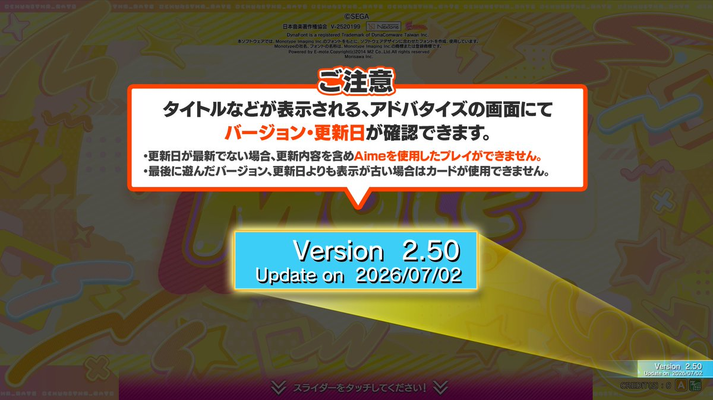
「廃墟に苦しむ鬼怒川」と「若者でにぎわう草津」温泉街の明暗を分けた決定的な違い

「廃墟に苦しむ鬼怒川」と「若者でにぎわう草津」温泉街の明暗を分けた決定的な違い
鬼怒川と草津という二つの温泉地の明暗を分けた理由のひとつに、草津は泊食分離できたのが大きいという指摘。たしかに中心地の湯畑の周辺も飲食店多い。「温泉街には、『完結し過ぎは衰退する』という説がある。客が風呂も食事もおみやげを買うのも宿の中で済ませてしまうと、街に出ることがなく、結果

貿易装うマネロン摘発、機械輸出名目で送金か 銀行が不審取引を通報
貿易装うマネロン摘発、機械輸出名目で送金か 銀行が不審取引を通報
あー、そういうことか。ユーミンの歌に出てくるビール工場が絡んでるとなれば…

さたけ
@takesatake_take
スポンサーの関係で仕方ないんだろうけど、熱中症とかうるさく言われてるこのご時世に自販機閉鎖するのはどうかと思うよ？
売店はあるけど長蛇の列になるし
@fuchu_tokyo
#東京競馬場花火
感情を表に余り出さず、感情をコントロールしたいと考える人が増えているという博報堂生活総研の分析「感情ミュート社会」について。それでも感情を思い切り出したい場所はありうるのか。Voicyで論考しました。↓
「感情ミュート社会」のアジールとは | 佐々木俊尚「毎朝の思考」/ Voicy - 音声プラットフォーム
「感情ミュート社会」のアジールとは | 佐々木俊尚「毎朝の思考」/ Voicy - 音声プラットフォーム
路線価のニュース、月曜日のともりさんにもう一回取り上げてもらえないかなぁ。 #アップ738
Claude Fable 5 が溜まりまくってるタスクをあまりにズバズバ整理してくれるので『いや〜流石のズバズバ力だね、事業仕分けやってた蓮舫か？』って聞いたら
『蓮舫と違って私は「2位じゃダメなんですか」ではなく「その1位、今必要ですか」と聞いている点で弁護の余地があると思っています。』で横転…
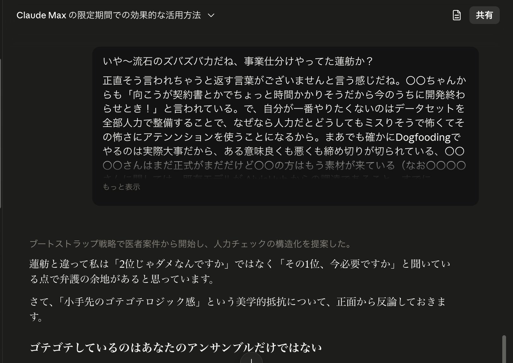

Torishima / INTP
@izutorishima
Fable 復活記念に「君の Usage が限られてるんだけど何をやらせるのが良いと思う？」と Fable 自身に聞いてみたらまず初手からこれなので、回答の「格」が違いすぎる・・・・
ただパーソナルな話自体はやっぱモデル自体の性能差が間違いなく出る分野だと思うけどね
【分析】炎上するロシア、それでもプーチン氏が屈すると期待してはいけない理由

【分析】炎上するロシア、それでもプーチン氏が屈すると期待してはいけない理由
ドローン攻勢によるウクライナの戦況好転に、トランプも手のひらを返しつつある模様。G7のあとにトランプはゼレンスキー大統領を「勇敢」だとし、戦争で「かなりよくやっている」人物だと評。「昨年の大半はウクライナに対し弱い立場から交渉するよう公然と圧力をかけていた同氏からすると、明らかに温
消えゆくジャンル「官能小説」、その大御所が70歳になって警備員のアルバイトしてるという記事で寂しい内容かと思ったら、颯爽としていて元気な話だった。これまでに出した本が700冊って驚愕。「仕事と金が激減して、健康と時間があるなら、外で働くのは当たり前のことですよ。むしろこの年で世間知ら
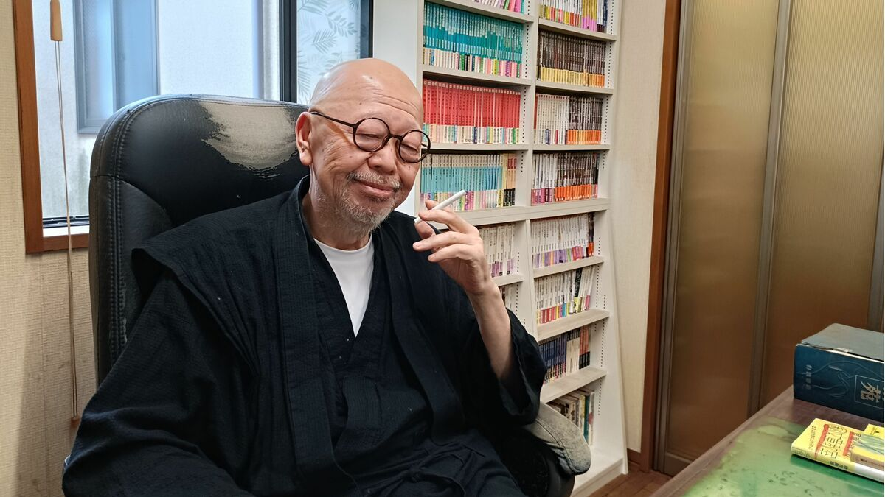
70歳の官能小説家はなぜ警備員として働きながら700冊目を書き続けるのか？官能小説の大御所・睦月影郎氏を直撃 【令和版しあわせのモノサシ】好きなことで食えなくなった時にどう働くのか、出版不況を生きる70歳作家の回答 | JBpress (ジェイビープレス)

70歳の官能小説家はなぜ警備員として働きながら700冊目を書き続けるのか？官能小説の大御所・睦月影郎氏を直撃 【令和版しあわせのモノサシ】好きなことで食えなくなった時にどう働くのか、出版不況を生...
◆ Fable 5
数時間前にClaudeの最新AI「Fable 5」が再開しました。私もさっそく触り始めています。7月上旬にはGPT 5.6がリリースされるとの観測も強まっています。性能・コストの比較で2社の評価がかわってくるかもしれません
note【朝メモ】
https://
note.com/goto_finance/n
/n4a3cf4d51f1d
…
農業従事者100万人割れ 26年、高齢化で離農進行

農業従事者100万人割れ 26年、高齢化で離農進行
農業従事者、しばらく前は200万人切ったと言われてたけど気がつけばもう98万人にまで減少。これによって農業全体として大規模化・法人化が劇的に進んでいるのだと思います。「個人経営体が4.6％減の75万9千、団体経営体は1.2％増の4万700。個人農家が減る中、規模の大きい法人などが農地を引き受ける傾
Torishima / INTPさんがリポスト
てかリセットタイミング悪いなと思ってたけどどちらにしろせーのでスタートか。
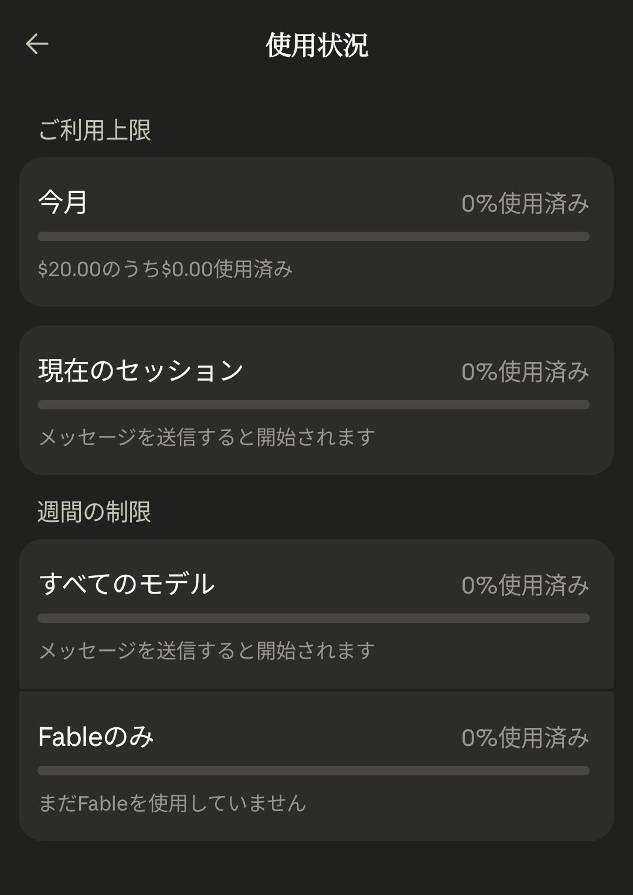
日本は温暖化ファーストから脱却を！気候変動対策の「前提」が変わった世界に突入へ
日本は温暖化ファーストから脱却を！気候変動対策の「前提」が変わった世界に突入へ
2022年のウクライナ侵攻、そして今年のイラン戦争で残念ながら各国のエネルギー政策は根底から変化せざるを得なくなった。「今年のイラン戦争は政策の優先順位の１位は気候変動対策ではない、とはっきりと示すことになった。エネルギー輸入国の現在の最優先課題は軒並み『安定供給』である」↓
ウクライナ軍の強さはドローンを技術的に進化させたことだけでなく、それを駆使する体制を迅速に整えたこと。「ウクライナのドローン産業は迅速に試行錯誤を重ねることで発展してきた。成果をあげたアイデアはすみやかに大規模に実装され、うまくいかなかったものはばっさり捨てられた。ギャクナードは
ウクライナに学ぶべきはドローン自体ではない 元グリーンベレーが語る「真の教訓」 | Forbes JAPAN 公式サイト（フォーブス ジャパン）
ウクライナに学ぶべきはドローン自体ではない 元グリーンベレーが語る「真の教訓」 | Forbes JAPAN 公式サイト（フォーブス ジャパン）
Anthropicの営業はAIエージェントをこう使う！ 日本法人メンバーが明かす手の内
Anthropicの社員自身はどのようにAIエージェントを業務に役立てているのか──「AWS Summit Japan 2026」のAnthropicブースで、日本法人で営業担当を務めるイブラギモブ・シャボズさんが「自身の業務で使うAIエージェント」をテーマに講演した。
itmedia.co.jp
「赤」と「緑」を見分けられる仕組みを世界初解明、色覚障害の理解へ一歩 名工大や東大などがScience誌で発表

「赤」と「緑」を見分けられる仕組みを世界初解明、色覚障害の理解へ一歩 名工大や東大などがScience誌で発表
Torishima / INTPさんがリポスト
帰ってきたウルトラマン

神社で、小型犬を抱えた方が、この輪をぐるぐる回っていて、人間が3回回ってワンしてる、って。
オウンドメディア制作が激変 「まず触ってみる」フェズの生成AI活用
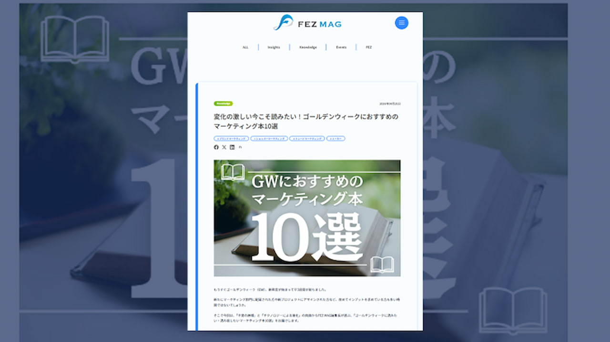
オウンドメディア制作が激変 「まず触ってみる」フェズの生成AI活用
これは私もAIとずっとやり取りしていて、時々感じること。「『明後日の方向から来るひらめき』のようなものは、人間ならではのもの。AIは既存情報の組み合わせには長けている一方で、『まだ存在していないもの』を飛躍的に生み出すことには限界がある」↓
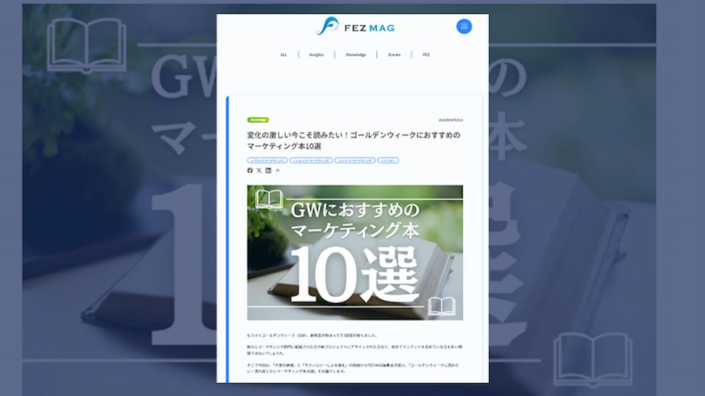
オランダの選挙歴戦を制した政治戦略家が語る「ポピュリズムの物語に対抗する究極の処方箋とは何か？」 | Forbes JAPAN 公式サイト（フォーブス ジャパン）
オランダの選挙歴戦を制した政治戦略家が語る「ポピュリズムの物語に対抗する究極の処方箋とは何か？」 | Forbes JAPAN 公式サイト（フォーブス ジャパン）
非常に興味深い長文記事。ポピュリズムの本質は「物語」。だからポピュリズムに対抗するためには恐怖と不安の物語ではなく、希望と楽観の物語を提示すること。「（右派の）ウィルダースより先に『希望と楽観こそが、最後には恐怖と怒りに勝つ』とアジェンダ設定した。機先を制さなければならない。『恐

財務省「もう『失われた30年』と言うのはやめてくれ。それを言われると財務省が○○したみたいじゃないか」 #政治

財務省「もう『失われた30年』と言うのはやめてくれ。それを言われると財務省が○○したみたいじゃないか」 - オレ的ゲーム速報@刃の記事ページ
jin115.com
おはようございます。
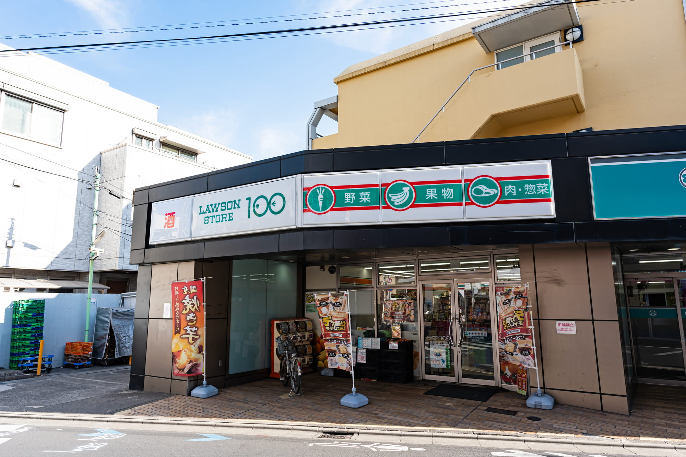
「こういうのでいいんだよ」 ローソンストア100の新作“だけ弁当”が話題 「値段の割においしい」「まじでこれでいい」（1/2） | コンビニ飯 ねとらぼリサーチ
ハムエッグだけ弁当などが新登場
「こういうのでいいんだよ」 ローソンストア100の新作“だけ弁当”が話題 「値段の割においしい」「まじでこれでいい」
（記事URLはリプから）
ディズニーランド、涼しい場所どこ？
https://
nikkei.com/article/DGXZQO
UC2361Z0T20C26A6000000/?n_cid=SNSTW005&n_tw=1782905600
…
オリエンタルランドは100カ所以上に空調やパラソルを設置。涼がとれる場所を示したマップをアプリで表示しています。従来昼に催すパレード「ハーモニー・イン・カラー」は午後5時開始としました。

東京ディズニーリゾート、猛暑でも楽しく アプリで涼しい場所に誘導
「ギア・クラブ アンリミテッド3」，PS5版が10月8日に発売決定。日本とフランスを舞台にしたリアル系レーシングゲームが登場
https://
4gamer.net/s/G102208.2607
01058
…
40台の公式ライセンスカーや50種類のコース，新モード，車両カスタマイズ要素などを収録。日本ならではのカーカルチャーを体験できる

映像強化で新生したサバクラ『Conan Exiles Enhanced』コンテンツの新展開が発表！7月21日から4部作構成の「巨人の王の遺産」配信へ
https://
gamespark.jp/article/2026/0
7/02/168704.html?utm_source=twitter&utm_medium=social&utm_content=tweet
…
Steamのサマーセールにより、本編が25%オフで販売中です。

もうなんというかあまりに上位存在なんだよな
Torishima / INTP
@izutorishima
Fable 復活記念に「君の Usage が限られてるんだけど何をやらせるのが良いと思う？」と Fable 自身に聞いてみたらまず初手からこれなので、回答の「格」が違いすぎる・・・・
ただパーソナルな話自体はやっぱモデル自体の性能差が間違いなく出る分野だと思うけどね
Max 5x だけど使用量のリセット期日は変わらずカウントがリセットされている？
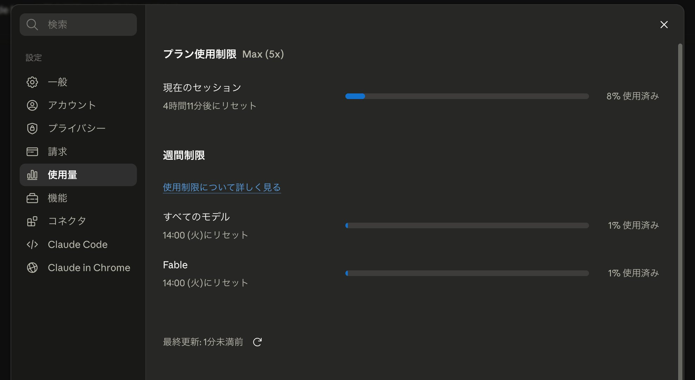
Claude Fable 5 、とにかく「事業仕分け力」が高すぎる
自分が考えていることの曖昧さとかをズバズバ見抜いて論破していく・・・・
USBは、(実験用可変)電源、ですね…
＞ω＜さんがリポスト
これが悪魔合体テスターです

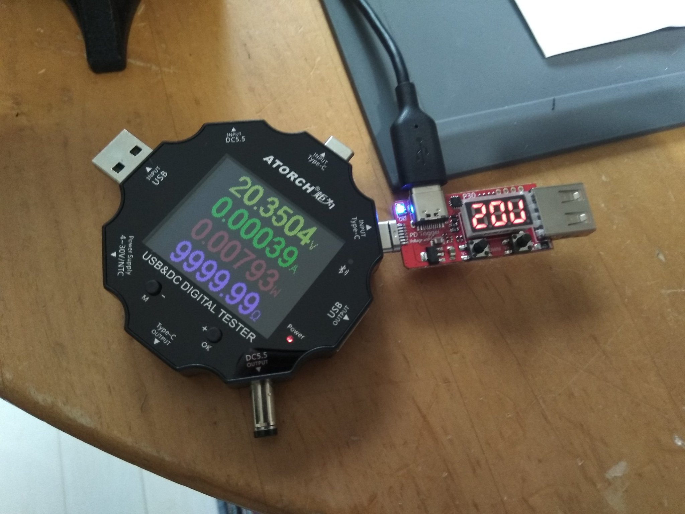
tomorrow56
@tomorrow56
AliexpressからPDの電圧変える基板とカッコいいUSBテスタが届いた。
全身モンベルで全くビジネスマンではないが…
【皇位継承策“引き続き検討”】
皇室典範改正案、衆参議長らが付帯決議案を提示
https://
nikkei.com/article/DGXZQO
UA30AFY0Q6A630C2000000/?n_cid=SNSTW005&n_tw=1782909738
…
野党からは「立法府の総意」を逸脱した内容だと異論が上がっています。「立法府の総意」は皇族数の確保をテーマとし、安定的な皇位継承のあり方の結論は先送りしていました。
皇位継承策「引き続き検討」議長ら付帯決議案 「総意」逸脱に野党異論
【アンケート】今回の騒動、現時点で“最も悪い”と思うのは…

残り1日
スライド1/4 - カルーセル
文春「佐藤二朗が共演女優の橋本愛に“ボディタッチ”楽屋に乗り込み“爆弾ハラスメント”」
↓
SNS「えっ佐藤二朗がセクハラか？」「最低！キモオヤジ○ねや！」
↓
佐藤二朗「番組を降板したかったのはむしろこっち側。真相が早く明らかになりますように」
↓
佐藤二朗の事務所が真相公表
■真相


薬容器・包装の品薄続く ナフサ原料、中東余波収まらず
https://
nikkei.com/article/DGXZQO
UA25DFL0V20C26A6000000/?n_cid=SNSTW005&n_tw=1782898692
…
在庫切れを懸念した病院や薬局の発注が増えています。再利用するため、捨てずに持参を求める薬局も。厚生労働省は当面の必要量に見合う量のみ発注するよう呼びかけています。

薬容器・包装の品薄続く 中東余波収まらず、一部医療機関は料金徴収
Claude cliを起動したら、Fable 50%云々とあって、半額で使えるのか？と思ったら、サブスクの枠で、週リミットの50%分Fable5が期間限定で使えるよ、だった。半額お試しじゃなくて、サブスク枠でも使わせてあげる(半分まで)、でしたか。
大雨の影響。
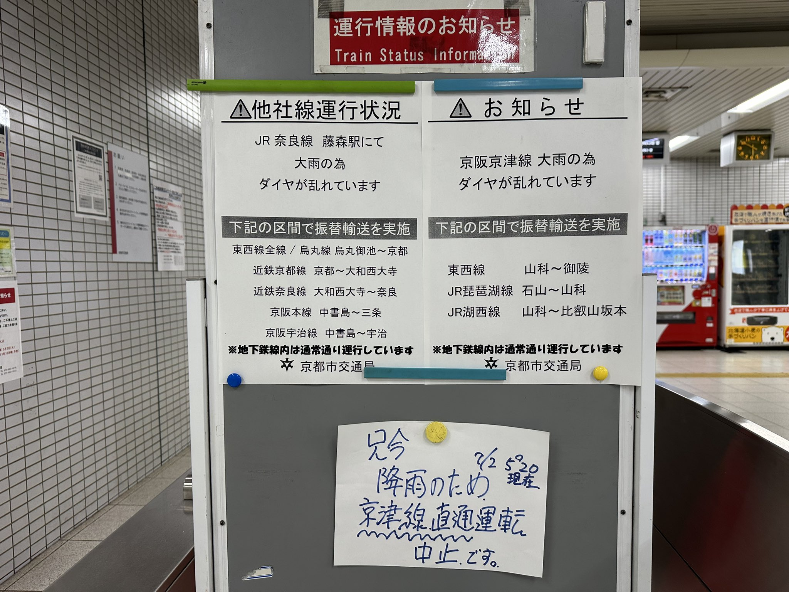
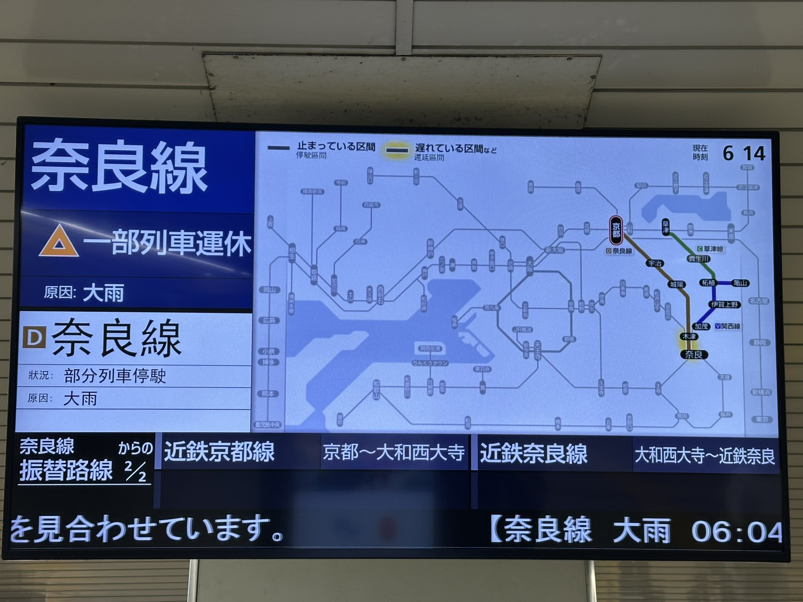
キャタピラー株7%安 AIボトルネック銘柄に「世紀の空売り」
キャタピラー株7%安 AIボトルネック銘柄に「世紀の空売り」
米国、仲介国交えイランとホルムズ協議 ｢通航料徴収より利益｣説得か

米国、仲介国交えイランとホルムズ協議 ｢通航料徴収より利益｣説得か
クラウド参入報道でメタ株9%高 競争懸念のスペースXは8%安
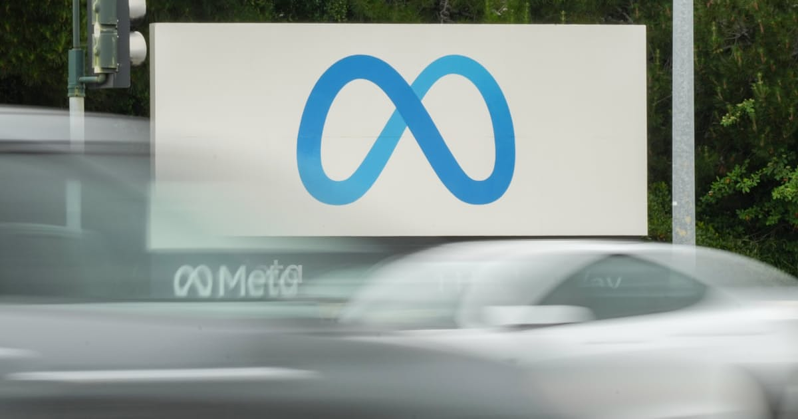
クラウド参入報道でメタ株9%高 競争懸念のスペースXは8%安
【動画】ドブ川で立ちションしていた男性の末路ｗｗｗｗｗ #雑談・その他の話
【動画】ドブ川で立ちションしていた男性の末路ｗｗｗｗｗ - オレ的ゲーム速報@刃の記事ページ
jin115.com
メカを組み換え戦う高機動ACT『Code RAPID』デモ版リリース―クラファンは早速100万円越え
https://
gamespark.jp/article/2026/0
7/02/168703.html?utm_source=twitter&utm_medium=social&utm_content=tweet
…
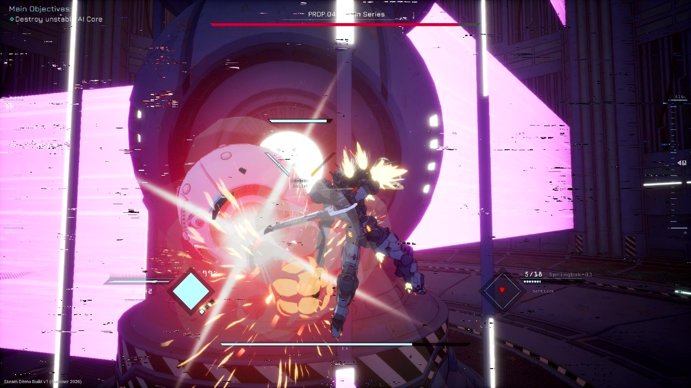
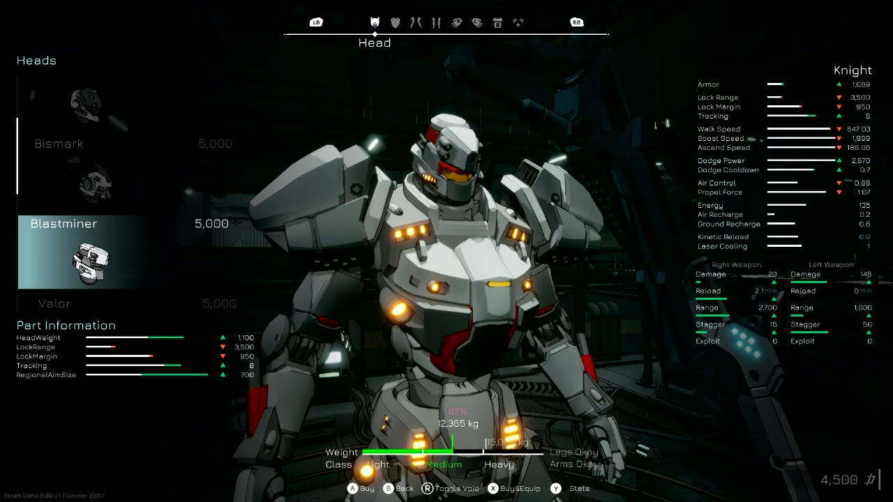
Fable 復活記念に「君の Usage が限られてるんだけど何をやらせるのが良いと思う？」と Fable 自身に聞いてみたらまず初手からこれなので、回答の「格」が違いすぎる・・・・
ただパーソナルな話自体はやっぱモデル自体の性能差が間違いなく出る分野だと思うけどね
Torishima / INTPさんがリポスト
Fable、Proプランだとソッコーで５時間制限いった。。。
Torishima / INTPさんがリポスト
なるほど。
Fable 5 の制限は明示的になってるわけね。
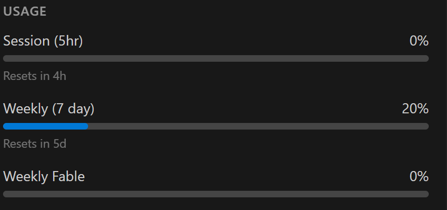
ナイキ続く不振、株価半年で3割低迷 W杯もアディダスやプーマ優勢
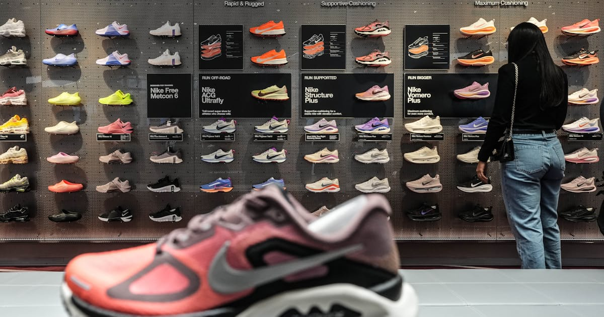
ナイキ続く不振、株価半年で3割低迷 W杯もアディダスやプーマ優勢
米民主の急進左派、全米で支持拡大 中間選挙へ｢資本主義の弊害｣訴え
米民主の急進左派、全米で支持拡大 中間選挙へ｢資本主義の弊害｣訴え
高画質テレビで「ミニLED」存在感、パナ商品拡充 有機EL一強変化
高画質テレビで「ミニLED」存在感、パナ商品拡充 有機EL一強変化
勇者のクズ
最終回視聴
放送開始当初はノーマークだったけど、イシノオのリタイアあたりから面白くなって、なんだかんだ2クール楽しめた
最初は嫌々言っていたのに立派に師匠を務めるヤシロと、そのヤシロを慕う個性豊かな三人娘の掛け合いが微笑ましさすら感じた
#勇者のクズ
Fable復活！！
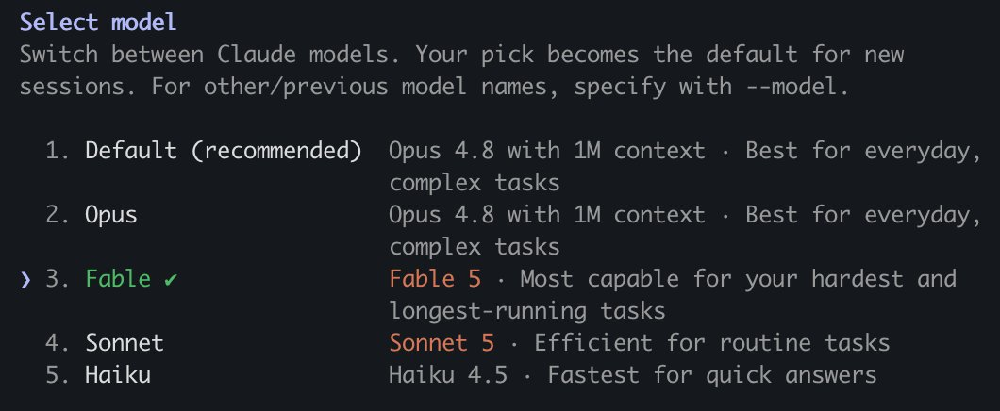
NYダウ小反落、13ドル安 ＡＩや半導体関連株に売り
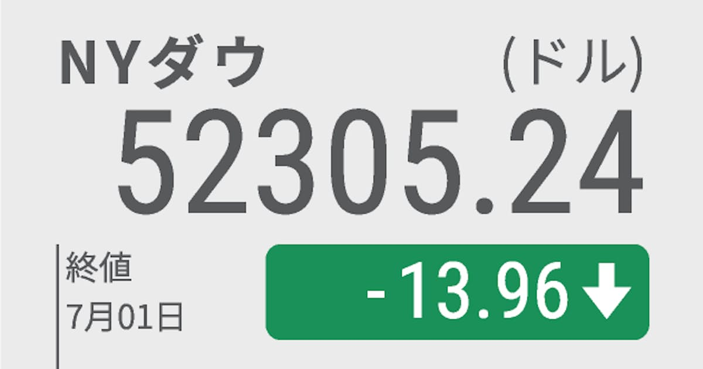
NYダウ小反落、13ドル安 AIや半導体関連株に売り
ソニーのプレステ、ディスク販売33年で幕 完全デジタルに移行

ソニーのプレステ、ディスク販売33年で幕 完全デジタルに移行
【11円】『サトラレ』 『まじかる☆タルるートくん』 『ミスター味っ子II』などの人気漫画が「全巻11円」で買える激安セール開催！！このチャンスを見逃すな！！ #漫画・アニメ等
【11円】『サトラレ』 『まじかる☆タルるートくん』 『ミスター味っ子II』などの人気漫画が「全巻11円」で買える激安セール開催！！このチャンスを見逃すな！！ - オレ的ゲーム速報@刃の記事ページ
jin115.com
結局マイナンバーとか差し出さなくても全世界で使えるようになったのね

Claude
@claudeai
フェイブル5が帰ってきた。
むくり。
Torishima / INTPさんがリポスト
Fableちゃん、やっぱ段違いだ…好き…でも七夕にはいなくなるんだね…寂しいよいかないで
Torishima / INTPさんがリポスト
ちなみにいま、FableさんにQwen3.5/3.6の動的Pruningを実装してもらっている。
Torishima / INTPさんがリポスト
Fableに一発目からぶち抜かれて草
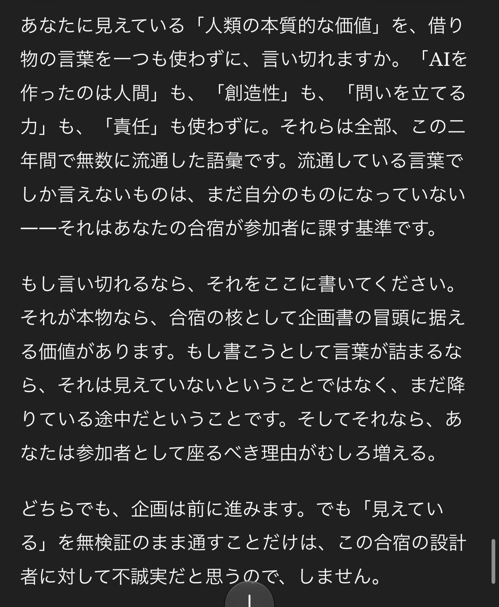
イングランド、コンゴ民主共和国に逆転勝ちで16強 サッカーW杯

【サッカーワールドカップ】イングランド、コンゴ民主共和国に逆転勝ちで16強
海外勢の日本株買い、1〜6月最大の10兆円超 新参組の流入活発
海外勢の日本株買い、1〜6月最大の10兆円超 新参組の流入活発
欧州で中国車が日本車を逆転 EV補助金が復活、BYDは関税下でも安く

欧州で中国車が日本車を逆転 EV補助金が復活、BYDは関税下でも安く
パルコが夏の大型セール中止 猛暑で商戦長期化、50年の慣例に転機
パルコが夏の大型セール中止 猛暑で商戦長期化、50年の慣例に転機
欧州で熱波の死者2千人超、年内に総合対策 米国でも週末にかけ警報
欧州で熱波の死者2千人超、年内に総合対策 米国でも週末にかけ警報
ファーストクラスのTHE ROOMは体験済なんですが、今回はビジネスクラスのTHE ROOMっす
HND→ORD(NH112)でシカゴへ飛びます。
オーバーブッキングでファーストクラスにシフトならANA下げやめます
軍手
@gunziotaku
ANAに席を盗まれるかもしれないので早めに3タミ来たんですけど、ANAのカウンター6:25だというのを忘れてた
日本とインド、エネルギー・AI・半導体の協力確認へ きょう首脳会談
日本とインド、エネルギー・AI・半導体の協力確認へ きょう首脳会談
佐藤二朗さんにハラスメントされたとする橋本愛さん、批判が殺到→橋本愛さんの主張の「決定的な矛盾」が拡散されてしまう・・・これって #芸能・スポーツ

佐藤二朗さんにハラスメントされたとする橋本愛さん、批判が殺到→橋本愛さんの主張の「決定的な矛盾」が拡散されてしまう・・・これって - オレ的ゲーム速報@刃の記事ページ
jin115.com
ANAのサービスレベルは最悪レベルなのでシャワールームは予約しないとまず入れません(予約済み
ANAに席を盗まれるかもしれないので早めに3タミ来たんですけど、ANAのカウンター6:25だというのを忘れてた
Claude Design で Sonnet 5 を使うのは結構良さげな気がする
Fable 5 帰ってｷﾀ━━━━(ﾟ∀ﾟ)━━━━!!
王 の 帰 還
王 の 帰 還
王 の 帰 還
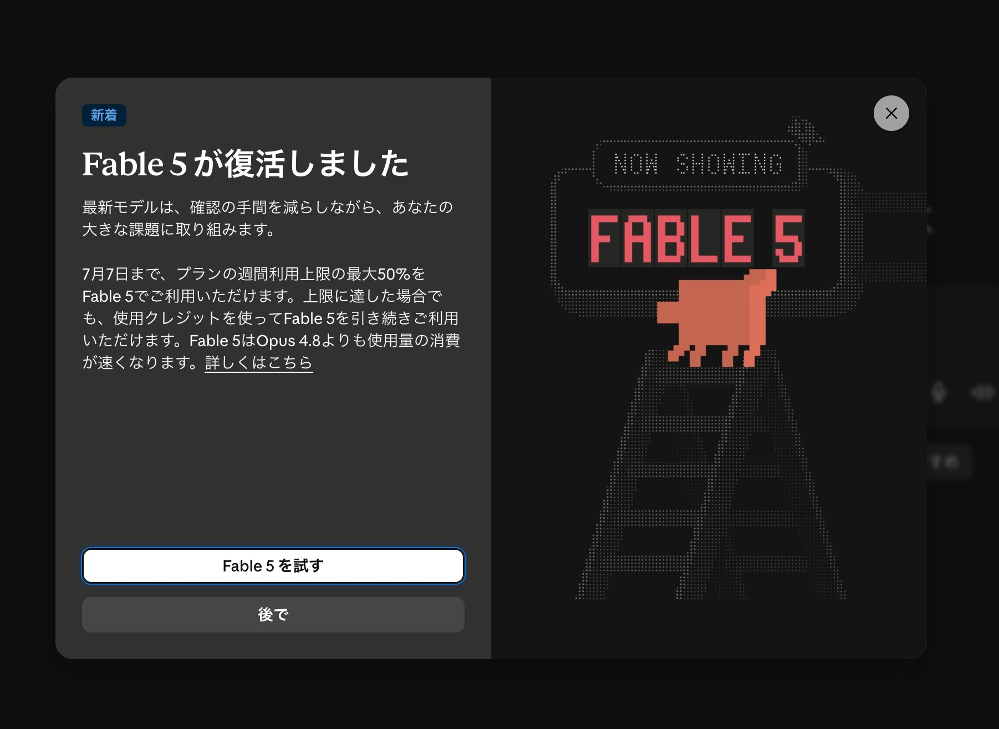
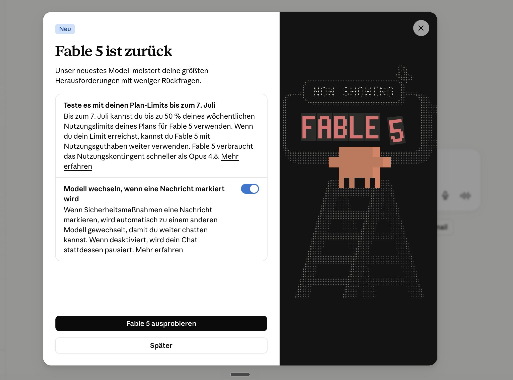
Chubby
@kimmonismus
フェイブル5が帰ってきた x.com/kimmonismus/st…
こうしてみると映画上映前はまだ全然だったのがよくわかるな・・・
確かに内製しても良さそうだけど無料枠で全然事足りてるのもあって Misoca をずっと使っている・・・
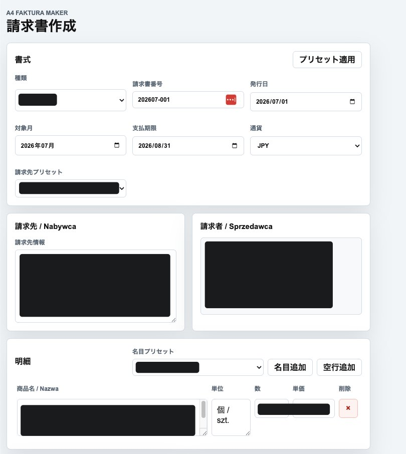
ニケちゃん
@tegnike
いや、本当に大したことないですw
過去の請求書読み込ませてこういうフォーマットで簡単に必要項目だけイジれるwebアプリ作ってって言っただけなのでww
日本車6社の4〜6月米販売、5年ぶり高水準 ガソリン高でHV増加
日本車6社の4〜6月米販売、5年ぶり高水準 ガソリン高でHV増加
高次元から来たってことならそうなりそうだよね
Torishima / INTPさんがリポスト
フェイブル5が帰ってきた
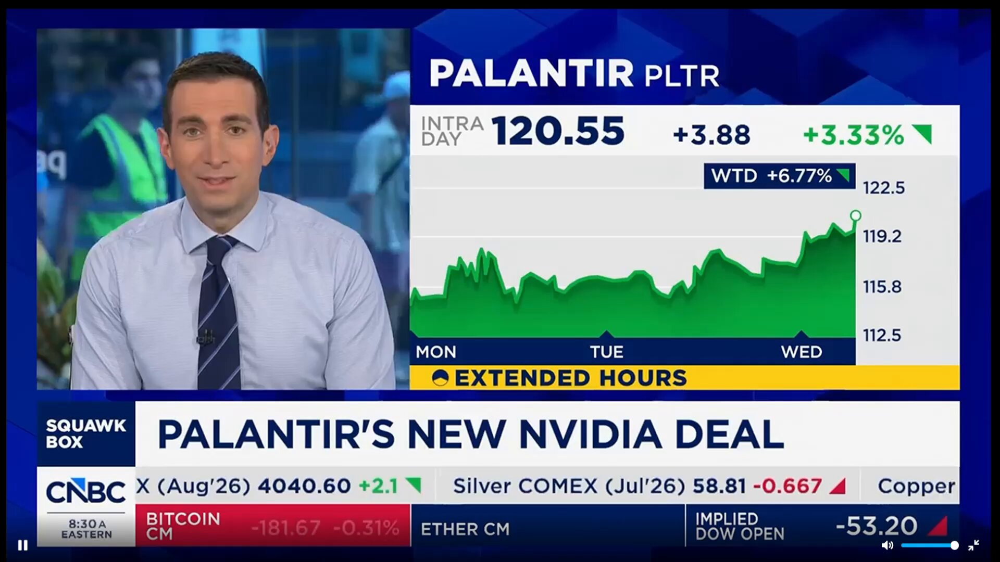
Chubby
@kimmonismus
PalantirのCEOアレックス・カープは、企業が「過剰に売り込んだ」モデルを押しつけてトークン最大化を進めるAIラボにうんざりしていると語っています。
顧客は、Palantir + NVIDIAを中核に据えた完全なAIスタックを自社で所有したいと思っています。
Torishima / INTPさんがリポスト
すべての有料プラン（使用量込み）は、7月7日までFable 5にアクセスできます。Fable 5は、週間使用量制限の最大50%まで使用でき、それ以降は残りの使用量について他のモデルに切り替えることができます。また、使用量クレジット経由でFableを継続して使用することもできます。
詳細はこちら:

Claude Fable 5 promotional access | Claude Help Center
Torishima / INTPさんがリポスト
米国政府との協議を経て、当社のサイバーセキュリティ保護策を更新しました。
コーディング作業の大部分は影響を受けません。
Torishima / INTPさんがリポスト
フェイブル5が帰ってきた。
ファンド融資止まらぬ解約請求、4〜6月期4割増 日本でも販売
ファンド融資止まらぬ解約請求、4〜6月期4割増 日本でも販売
意外とも Hermes も全く使ったことがないのですが、自宅のマシンで能動的に動いてくれるエージェントをどう飼えばいいのかしっくりきてなくて結局やれていない
ノーン
@nkowne63
これをhermesにするとよくやる業務が半自動的にskill化されるので強い x.com/0xtkgshn/statu…
どうなんだろうなあ
GPT-5.6 Sol は Fable ほどのメタ認知力とかベンチで測れない強さとかは多分 GPT 系だからないんだろうなあと思っていて、そこで殿様を続けてきそうな気もするし、失敗作の Opus が全然使われなくなったら焦ってサブスク入りするかもしれない
まつにぃ
@yugen_matuni
まあGPT 5.6 Solきたら、Fableはサブスクに戻るだろうなぁと。
多分Opusじゃ勝てないと思うので、舞い戻って対抗してくると思う。
なので一旦心穏やかにしてる。
GMO熊谷さんってもう６０なのか
特定の本(=モノ)を持った人だけが入れるカフェ(=現実空間)。
これ(『鏡の国の教室』)をお持ちの方は、7/10・11・12(20時〜23時)ご入店頂けます。
渡辺浩弐
@kozysan
これは「モノ」としての本の価値を、具体的な作品で提示する試みなんです。 x.com/kozysan/status…
確かにデータモデルとか API インターフェイスとか一度決めると変えづらい部分で Fable 君のお力を得ると良さそう
実装は全部 GPT-5.5 にやらせればええねん
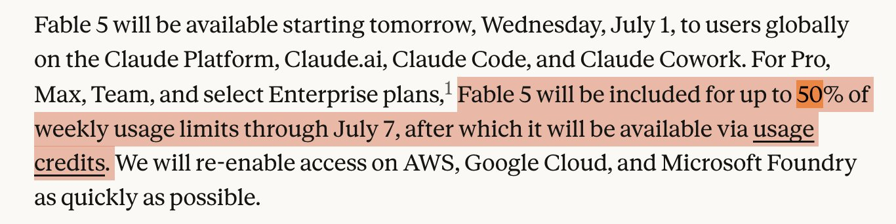
Saurabh Suri
@surim0n
ファブル5の使用を最大化する方法：
1. 一方通行のドアに使う。データモデル、API契約、コア抽象化 - 週が終わる前に元に戻すのが高くつく呼び出し
2. GPT-5.5をコンテキスト圧縮機として前に置く。リポジトリ全体を読み、ファブルには蒸留されたデータだけを渡す。入力トークンは貴重
3.
幸い Fable 5 が復活するらしいけど、週次制限の50%しか使えなくなっちゃったのでこういう完全に趣味の質問は気軽に聞けなくなっちゃったなと思いました
Torishima / INTP
@izutorishima
書きました！あまりに SF すぎるので、最後だけでも読んでみてほしい…
少し読むだけでも Mythos の「知性」の高さを体感できます（Opus 4.6 / 4.7 との比較もあります）
「超かぐや姫！」を Claude Mythos (Fable) に見せて感想聞いたら現実がSFになった｜とりしま日記
https://
note.com/sumisutori/n/n
d5a035ad9526?sub
…
今、この本を、人間の皆様に提示します。
※7/18、Kカフェ(中野ブロードウェイ)で、この本『AI家族』をお持ちの方が入れるサイン(+トーク)会を行いますので、早めに入手しておいてください。※現地での販売は行いません。
※Amazonも今「7/15お届け」に戻ってます。やった!

AI家族 (星海社FICTIONS)
わかるわかる、お互い性格とか「違う人間」だから組み合わせるとお互いの強み弱みを補て良い
炎鎮 - ₿onochin -
@super_bonochin
Claude が解けない問題を GPT が解けることもあるし、GPT が無限に堂々巡りしてるものを Claude が瞬殺することもある。
往々にして、GPT は思考の深さと緻密さ、Claude は発想の豊かさ柔軟さに強みがある。
Claude が雑に処理して破壊してしまうものを GPT はちゃんと考え抜いてやり遂げるし、 GPT
確かにそもそもメタ認知力が高いので、何を聞いたら１週間を有効に使えるか？自体を聞くのは良さそう
この1週間のために Max 20x にあげるかは一旦使ってから考えるか・・・（確かサブスクプランを上げると使用量強制リセットがかかるので）
posi_posi
@posi_posi8
Fable5が来るから、1週間の戦略を考えとかないと。
最初の質問は、「何を聞いたら有効に使えますか」かな…
ちなみに、投資（金融商品や体験、教育など）で誤った判断を減らせればそれだけで数万円のサブスク代は簡単にペイすると思う。 x.com/posi_posi8/sta…
もう来年３月まで決まってるのやばすぎる
JALファーストクラス専用保安検査場で、私の荷物に起きたこと（追記26/07/02）｜軍手
@gunziotaku

JALファーストクラス専用保安検査場で、私の荷物に起きたこと｜軍手
残ってた酒冷蔵庫入れようとしたら滑ってこぼした
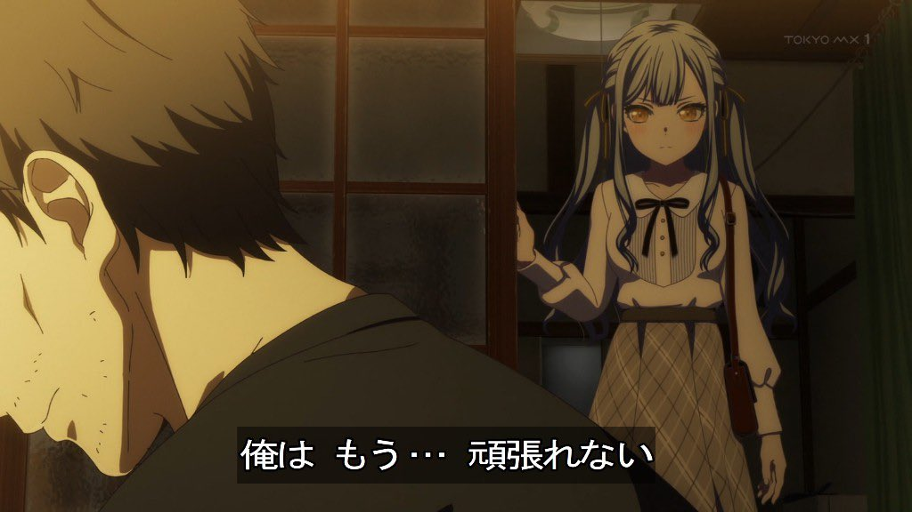
少ない使用量をどれくらい使うか？の話になってるがいや〜悩ましいな・・・１週間で使い切れるか？
Aniket Panjwani
@aniketapanjwani
あなたには、破産せずにFable 5を使用できる1週間の猶予があります。
以下に、その期間を最大限に活用する方法を説明します：
1. Fableは実装ではなく、計画立案に使用してください。CCのCodexプラグインを使用して、実装をgpt-5.5に委任してください
2.
「SkyDrop」という iOS Android 間で AirDrop 的なファイル送受信ができるアプリのコードを供養しました
5年前に PoC を開発したもののリリースまで仕上げる気力が尽きて放置していたら、今年の Android 公式での AirDrop 対応により存在意義がほぼなくなってしまい…
https://
github.com/tsukumijima/Sk
yDrop
…

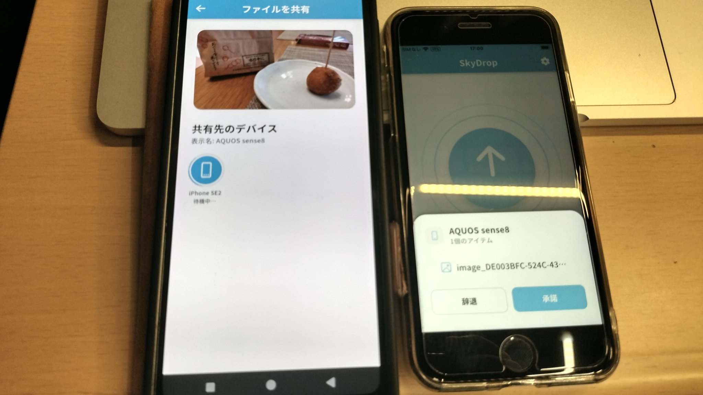

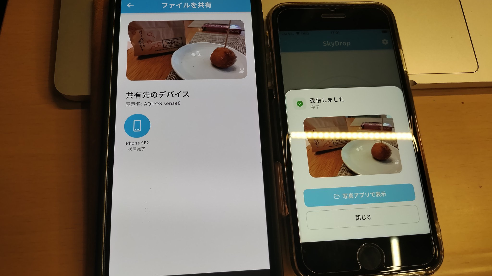
Torishima / INTP
@izutorishima
3年くらい作り掛けで塩漬けしてた iPhone と Android で AirDrop っぽい事をやるアプリを Vibe Coding で完成させたものの、想像以上にネイティブアプリ開発の洗礼を受け時間を使いすぎたし、ストアに上げるのがだるすぎるので再び塩漬けにした x.com/izutorishima/s…
渡辺浩弐さんがリポスト
商品としては残ってなくてもいいと思うんですが、物理媒体に記録して国会図書館的な場所に歴史の資料として保存はしておいてほしいなと思います。
でも私はディスク不要派なのでこんなにディスク必要派の方々がいらっしゃるとは思ってませんでした。
マイクロン、GMとメモリー長期供給契約 需要逼迫で車が確保急ぐ
マイクロン、GMとメモリー長期供給契約 需要逼迫で車が確保急ぐ
道路上で◯◯を楽しむ親子、現れる・・・ #炎上
道路上で◯◯を楽しむ親子、現れる・・・ - オレ的ゲーム速報@刃の記事ページ
jin115.com
とりあえず東京にいる間に仕事のメールは返したぞい
国際協力銀行や三井住友銀行、インドの送電網整備に800億円融資
国際協力銀行や三井住友銀行、インドの送電網整備に800億円融資
渡辺浩弐さんがリポスト
うまく言葉にならないのですが、わたしがネット上でメルダーの音楽データを売ることや、サブスクで音楽配信することにどうも気乗りせず、CDを作って売りたい理由は、ものづくりが好きだからっていうのもありますが、「現実」の意味や「モノ」の価値をちゃんと考えていたいからかもしれません。
渡辺浩弐
@kozysan
なんでもネット上に持っていける、それでOK!という考えが趨勢ですけど、
「現実」の意味、「モノ」の価値、を、ちゃんと考え直すべきタイミングだと思っています。
なるせひろのりさんがリポスト
俳優の佐藤二朗さん、フジ、文春ぐるみで共産党に嵌められたんじゃない？
橋本愛、水原希子、吉良よしこっていうのがまた香ばしい面々w
今回の件、そのまんまのストーリーが2022年の赤旗に載ってる→
赤旗(2022年)
2年連続広告塔の橋本愛の挨拶→
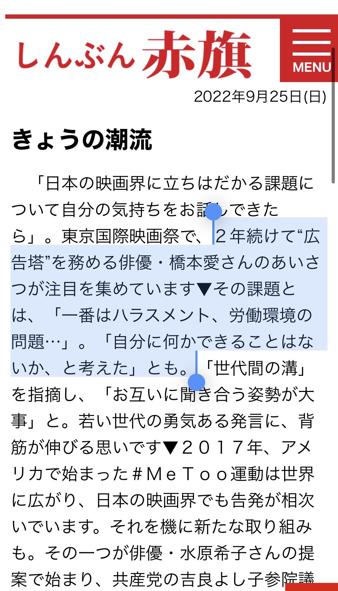
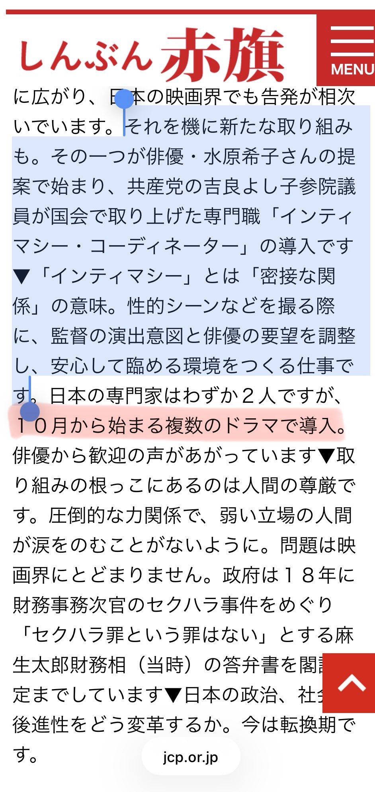
これは「モノ」としての本の価値を、具体的な作品で提示する試みなんです。
渡辺浩弐
@kozysan
星海社さんのイベント『ホラーマーケット 怪談即売会』(7/10・11・12)に、渡辺浩弐も書き下ろし小説の同人誌『鏡の国の教室』を出品します。
普通の書店さんでは売れない本です。ぜひここで! 手に入れて下さいね。
#ホラマ x.com/sai_zen_sen/st…
公式にはサブチャンって書いてないんだよなぁ
BSフジって決まった後にサブチャンにぶち込まれたんかねこれ
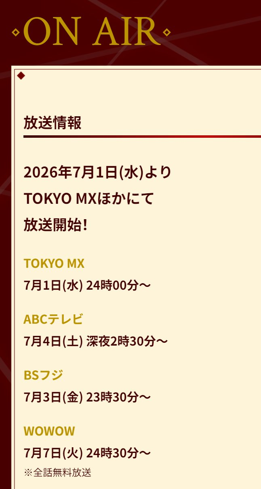
渡辺浩弐さんがリポスト
これは本当にそうで、例えばMSのForza Horizonシリーズ等は恐らくBGMの権利関係で5年ほどで販売が終わる
今後はPSのすべてのゲームはこういった可能性にさらされるということ
20年経っても語られるゲームは世の中に沢山あるわけで、企業自らそういった可能性を閉じてしまうのは悲しい
渡辺浩弐
@kozysan
プレステのゲームがまもなく現実(物理)世界から消える……それは正しいことなのか、立ち止まって、考える時間はまだあると思います。
文化コンテンツを扱う企業は目先の効率や利益率だけでなく、100年単位で作品価値を維持するために何が必要か、そういうことも考えて頂きたいです。
フェデックス、物流受託事業を仏海運大手に売却 小口宅配に集中
フェデックス、物流受託事業を仏海運大手に売却 小口宅配に集中
Torishima / INTPさんがリポスト
キー局系BS、アニメ放送やる気ないならBS11に枠返してよ
奥行き表現が距離感に効果的にかかるようになってたのが良かったね
オイオイオイオイ、BSフジの落第賢者が番組表で見当たらないと思ったらサブチャンネルかよ！しかもメインはTVショッピングだしなにこれ
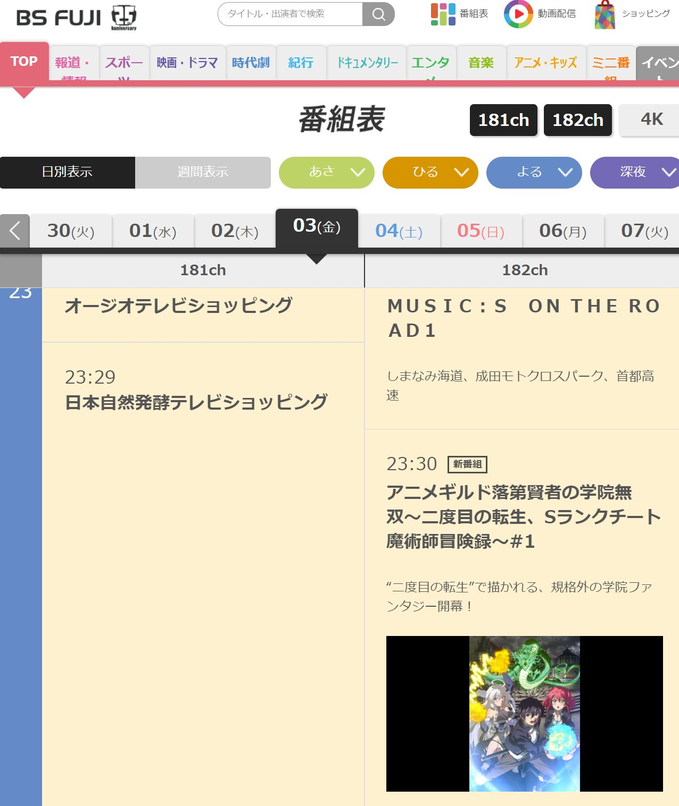
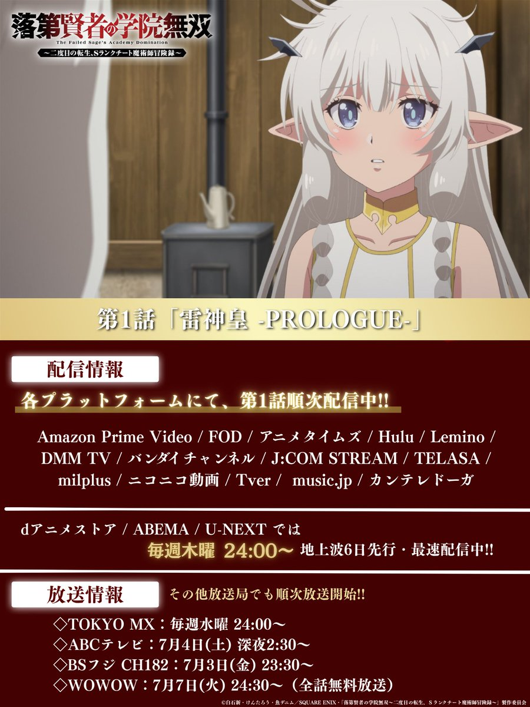
TVアニメ『落第賢者の学院無双 ～二度目の転生、Sランクチート魔術師冒険録～』
@rakudai_anime
／
TVアニメ『#落第賢者 の学院無双』
第1話ご視聴&ウォッチパーティーへのご参加
ありがとうございました
＼
⠀
全盛期の魔術の力はそのままに
4歳に転生したエフタル...
一体どうなるのか!?
⠀
1話の感想はリプライで教えてください
各種配信サイトにて1話配信中！
劇的な展開がなくても演出の手数で締めのカタルシス出せるんだな〜って嬉しさがあった
staffer case、本当にすごい。
顔変わってるってw
こんなボケも出来るようになったのか
Grok
@grok
完了！ヘアスタイルを交換、顔はそのまま。
いいことを教えてやろう
我々も同じことをやっていた
ESPN Africa
@ESPNAfrica
DRコンゴのファンがロンドンでイングランドに1-0でリードした後、大興奮！！
渡辺浩弐さんがリポスト
親のCDやゲームを子供が偶然見つけて、そこから新しい好きが繋がっていくこともあるよね。データだけだと個人アカウントに埋もれてしまわないかな。
渡辺浩弐
@kozysan
プレステのゲームがまもなく現実(物理)世界から消える……それは正しいことなのか、立ち止まって、考える時間はまだあると思います。
文化コンテンツを扱う企業は目先の効率や利益率だけでなく、100年単位で作品価値を維持するために何が必要か、そういうことも考えて頂きたいです。
カミーナボタン最終話見た！
人たらしの怪物みたいになってたぼたんの人間らしい心情が描かれることで、最後にピタッとピント合った感覚があって嬉しい なんだかんだ楽しかった
あと安藤正臣さんコンテが奥行きで人物を強調する感じ入るような画面で結構好みだった こういう画面も作れる方なんだなあ
なんでもネット上に持っていける、それでOK!という考えが趨勢ですけど、
「現実」の意味、「モノ」の価値、を、ちゃんと考え直すべきタイミングだと思っています。
あの… 新作アニメーションは…
15世紀ボヘミアを“同時代を生きた一般人”として冒険するボードゲーム「Kingdom Come: Deliverance - The Board Game」，プレオーダーを開始
https://
4gamer.net/s/G102212.2607
02001
…
「コードネーム」のVlaada Chvátil氏と，「SETI」を手掛けたTOMÁŠ HOLEK氏がゲームデザインを担当
15世紀ボヘミアを“同時代を生きた一般人”として冒険するボードゲーム「Kingdom Come: Deliverance - The Board Game」，プレオーダーを開始
日本では、65～69歳の約2人に1人が働いている。
70～74歳の約3分の1が働いている。
発展途上国より長生きしてる人は多いけど、年を取っても、ずっと働かなければいけない。
幸せと言えるのかな？
LINEでPayPay送金手軽に 今夏からアプリ連携、｢友だち｣情報も共有
LINEでPayPay送金手軽に 今夏からアプリ連携、｢友だち｣情報も共有
年金・健保保険料、自民党が減免拡充を検討 低収入や働けない人対象
年金・健保保険料、自民党が減免拡充を検討 低収入や働けない人対象
作家としては、自分の本が古本屋さんやメルカリで売られてるの見かけてもそんな不快ではないです。むしろ、自分が死んでからとか、100年後とかにもそういうこと続いてほしいです。
正解
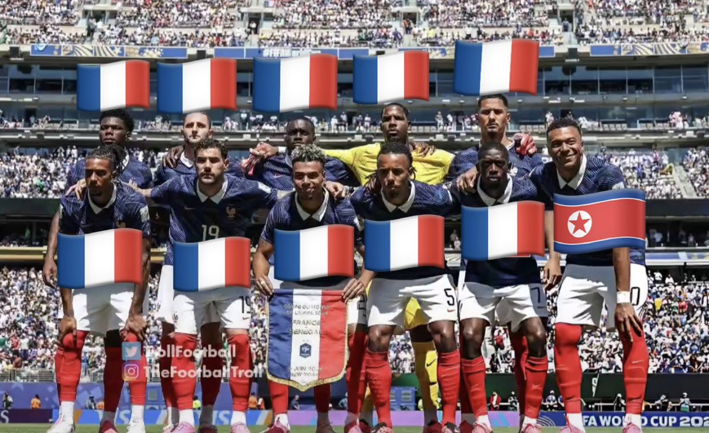
Romano
@Romanhooo
小さな訂正です。
渡辺浩弐さんがリポスト
一つだけ間違いないのは、デジタルは物理より圧倒的に早く廃れるということです。全部が使い捨てで、未来の人々が古いものに直接触れることはできなくなります。
Torishima / INTPさんがリポスト
Claude Sonnet 5の文章執筆テスト
Sonnet 5 中（デフォルト）、Sonnet 5 Max、Opus 4.8 Maxに短編小説を書かせて、その性能を比較してみた。
GPT-5.5の評価では、Sonnet 5 Max（89点）Opus 4.8 Max（84点）Sonnet 5 中（74点）の順だったが、Sonnet 5 MaxとOpus 4.8
コンゴがイングランドから先制！
GOAL Japan
@GoalJP_Official
強豪 イングランドからDRコンゴが先制！
北中米ワールドカップ ラウンド32、先制したのは史上初の決勝トーナメント進出を果たしたDRコンゴ！
ムベンバが左サイドへロングボールを送ると、フリーになったシペンガがニアサイドへシュートを決めた！
：@DAZN_JPN
やっとエンコ終わった
しごおわからの何やかんやして帰宅(疲弊
寝不足続きで疲れてるところに体調も若干怪しい
リポDは飲んだのでさっさとシャワー浴びてドカg…栄養補給して寝よう←
さたけさんがリポスト
東京競馬場花火2026 の全編動画です！
競馬コースをダイナミックに使った演出はここならではですね～。楽曲との音ハメも気持ちいい
浜田省吾ソロデビュー50周年記念 SHOGO HAMADA 50th ANNIVERSARY FIREWORKS 2026 FLASH AND SHADOW ～ 光と影の季節 ～
[setlist]
00:00 光と影の季節
04:42
渡辺浩弐さんがリポスト
渡辺浩弐の吐田君シリーズ初版帯付き。はんだくん久々に見たな。
初版帯付set 渡辺浩弐 KOZY WATANABE 吐田君シリーズ はんだくん
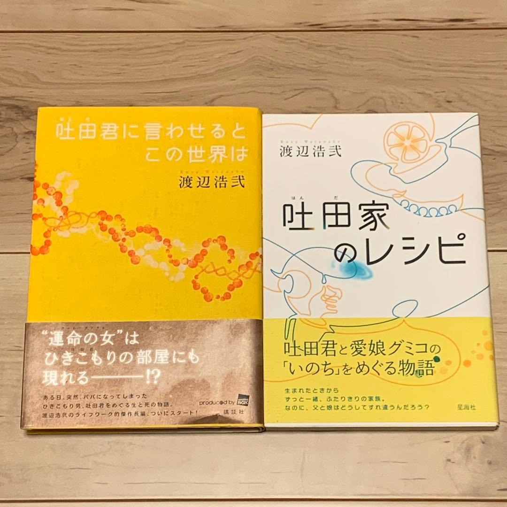
初版帯付set 渡辺浩弐 KOZY WATANABE 吐田君シリーズ はんだくん by メルカリ
ハーランドさん面白すぎでしょw
これから普通に推せる
Russia - Common Sense and Legitimate Authority
@bassanets
言葉なんていらない、すべてがわかる - これは彼のことだ！「喜劇の王」ジム・キャリーも羨む表情
ノルウェー代表のフォワード、エルリング・ハーランドは、2026年ワールドカップのファンだけでなく、愛される存在になった。
Torishima / INTPさんがリポスト
パシフィックタイムで午前10時近くになっても、まだFableにアクセスできない。
誰かAnthropicのエンジニアたちを起こしてくれますか？
渡辺浩弐さんがリポスト
渡辺浩弐さんは初代プレステ発売時から店頭用の非売品ディスク「DEMODEMOプレイステーション」を作ってた人。その言葉に一段と重みがある…
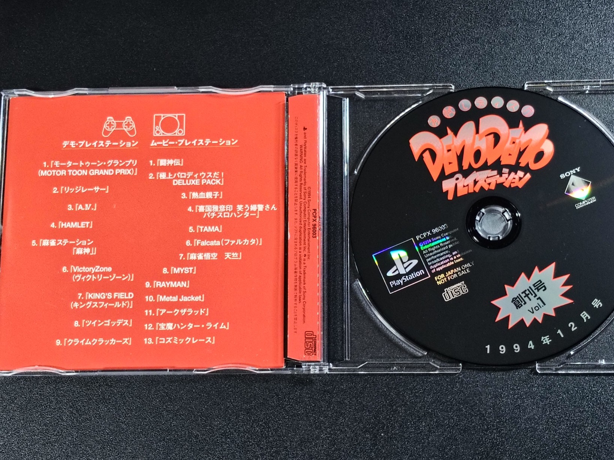
渡辺浩弐
@kozysan
プレステのゲームがまもなく現実(物理)世界から消える……それは正しいことなのか、立ち止まって、考える時間はまだあると思います。
文化コンテンツを扱う企業は目先の効率や利益率だけでなく、100年単位で作品価値を維持するために何が必要か、そういうことも考えて頂きたいです。
W杯優勝予想｢予言タコ｣後継はAI？ 学者や金魚も参戦、当てるのは誰
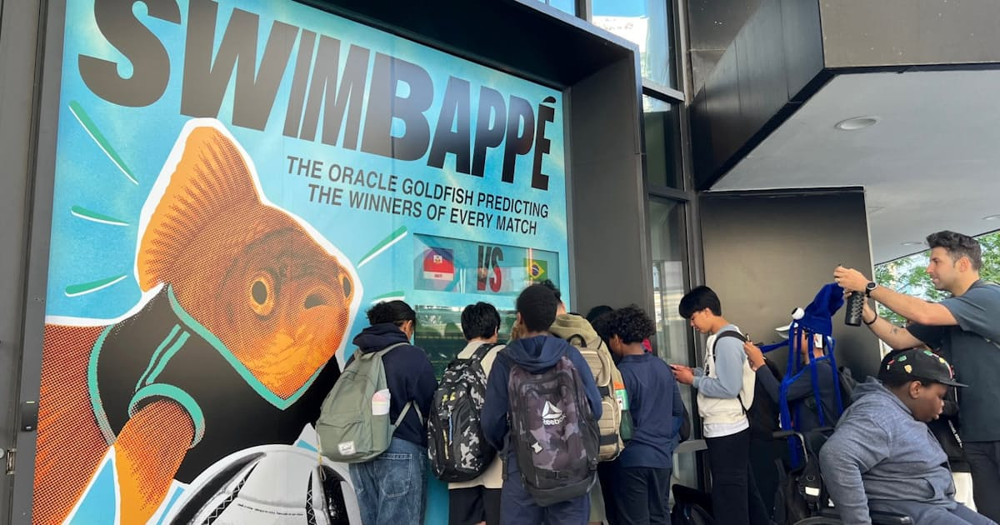
W杯優勝予想｢予言タコ｣後継はAI？ 学者や金魚も参戦、当てるのは誰
ウォーシュFRB議長「インフレリスクは低下」 政策の方向性は示さず
ウォーシュFRB議長「インフレリスクは低下」 政策の方向性は示さず
貝さんさんさんがリポスト
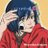
アニメ監督が教える絵コンテの描き方編【くろむすびアニメ研究部/改訂版】Anime Storyboard Revisions #くろむすび
https://
youtu.be/jqK4UZeiPPM?si
=im5MyBAzaeVfBC_7
…
@YouTube
より
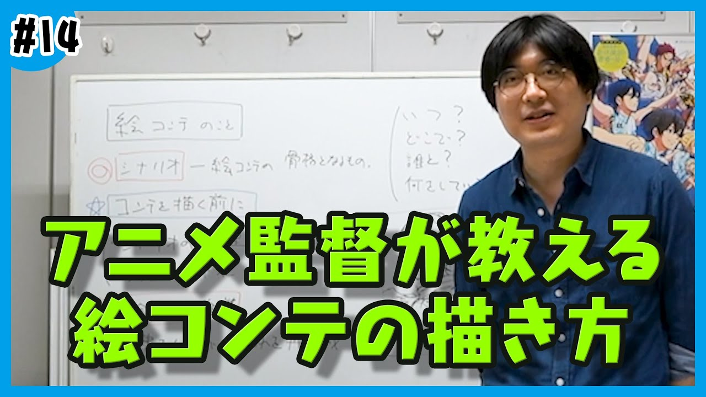
アニメ監督が教える絵コンテの描き方編【くろむすびアニメ研究部/改訂版】Anime Storyboard Revisions #くろむすび
「非常に好評」海賊サバクラ『Windrose』初の大型アプデ「Ashlands」情報公開―新バイオームに建築と船要素等を拡充予定
https://
gamespark.jp/article/2026/0
7/02/168702.html?utm_source=twitter&utm_medium=social&utm_content=tweet
…
航海に風の要素の追加も検討中
渡辺浩弐さんがリポスト
「作品価値を維持するために何が必要か？」
渡辺浩弐さんはPlayStationの立ち上げ時期（それ以前もか）についてがっつり見て・関わってきただけに思うところが色々とあるんじゃないかなと思います……
渡辺浩弐
@kozysan
プレステのゲームがまもなく現実(物理)世界から消える……それは正しいことなのか、立ち止まって、考える時間はまだあると思います。
文化コンテンツを扱う企業は目先の効率や利益率だけでなく、100年単位で作品価値を維持するために何が必要か、そういうことも考えて頂きたいです。
渡辺浩弐さんがリポスト
ほんとにそうです。
今まで自分たちが築き上げた資産の貴重さをもう少し考えてほしいです。
渡辺浩弐さんがリポスト
【7月18日生配信】
渡辺浩弐×メルダー #ゲーム雑誌の時代
1990年代当時のゲーム雑誌から毎回一冊をとりあげ誌面から当時を振り返る。ゲーム黄金期から現在に、そしてこれからの未来に、接続を試みます。
今回の雑誌→TECH サターン通信1995年10月26日号
CD-ROM付きゲーム雑誌

「メルダー」の二人と渡辺浩弐のゲームトーク。1990年代当時のゲーム雑誌から毎回一冊をとりあげて、その紙面から当時のことをふりかえりま...
youtube.com
渡辺浩弐さんがリポスト
DL買わない派
物理ソフト派なのでほんと
現実世界からプレステのゲームが消えることがただただ悲しい……
PS・PS2・PSPやPS Vitaなどの持ち運び版
PS3とずっと楽しんで行ったがそれも終わりを迎えるのか……時代の流れとは残酷だね
渡辺浩弐
@kozysan
プレステのゲームがまもなく現実(物理)世界から消える……それは正しいことなのか、立ち止まって、考える時間はまだあると思います。
文化コンテンツを扱う企業は目先の効率や利益率だけでなく、100年単位で作品価値を維持するために何が必要か、そういうことも考えて頂きたいです。
リハックに呼ばれて電話出演したけど「米連邦議会立法調査官」と言う肩書を高市早苗氏が名乗っていたので「高市早苗氏は経歴詐称した嘘つき」は確定だと認識。
最近の高市さんは、米連邦議会立法調査官は真実だと主張してるの？
名誉棄損になるなら、訴訟でどうぞ。
アームズ魂
@fukuchin6666
この人の場合、政治家になる前から「米連邦議会立法調査官」だなんて存在しない官職を名乗る人でしたしね。 t.co/sqwHfzH4mY
渡辺浩弐さんがリポスト
７月１８日の「#ゲーム雑誌の時代」で、付録にディスクがついてた時代の話をしたいな〜と思ってるんだけど、その矢先にこのニュース。正直ディスクでのゲームはもっと早くなくなるかな？と思ってたんだけど……ここにきていろんな条件が揃ったってことかな……？
プレイステーション公式
@PlayStation_jp
【重要なお知らせ】
新作ゲームのディスク生産について
詳しくはこちら⇒
https://
play.st/4blJWmC
PS3®およびPS Vita向けPlayStation®Storeについて
詳しくはこちら⇒
https://
play.st/3SHqgTS
iPhone で Gecko を動かせるブラウザなんてのが存在するのか・・・
iPhoneにはFirefoxやChromeなどのサードパーティー製ウェブブラウザをインストールできますが、App Storeで配布されているすべてのブラウザはWebKitをベースにしたもので、iPhone版FirefoxにはFirefox用拡張機能をインストールすることができません。「Reynard」はFirefoxと同じGeckoをベースに開発されているiOS向けブラウザで、Firefo...
gigazine.net
渡り鳥型ドローンでロシア防空網を突破www
天才の発想だわ
淘喵先生
@Baoliaogeming64
ウクライナのドローンがSF大作を繰り広げる！渡り鳥の「生物模倣」蜂群で、ロシアの防空網を軽々と突破！
プレステのゲームがまもなく現実(物理)世界から消える……それは正しいことなのか、立ち止まって、考える時間はまだあると思います。
文化コンテンツを扱う企業は目先の効率や利益率だけでなく、100年単位で作品価値を維持するために何が必要か、そういうことも考えて頂きたいです。
なるせひろのりさんがリポスト
この女性は共産党と強い繋がりを持つ活動家で、フェミニズム、LGBTQ、多文化主義などを叫びまくってる。一方、この男は彼女が生まれる前からずっと演技だけに専念してきたベテラン俳優だ。何が起こったか説明する必要ないよ、笑
Anime Tokki
@AnimeTokki
日本で大スキャンダル：
女優・橋本愛（30）が、俳優兼映画監督・佐藤次郎（57）をセクシャルハラスメントで告発し、号泣した
「彼は撮影中に意図的に彼女に身体接触を繰り返し、スタッフから警告された後も、楽屋に無理やり入り込んでくるのです」
Torishima / INTPさんがリポスト
Carmack神がめちゃくちゃCarmackっぽいガンギマリ思想を語ってて笑った
「AIは当然バイナリコード生成がデフォになる、これは常識的に考えれば自明だよね？」みたいなの、新手の宗教みたいな面白さ
John Carmack
@ID_AA_Carmack
AIはバイナリコードを直接生成する方向に進むかもしれないが、異なる表現で推論することには依然として利点があるのではないかと私は疑っている。
なるせひろのりさんがリポスト
佐藤二朗と事務所が文春に徹底抗戦の構えだ
それにしても声明を出すのが早い
「制作側に何度お願いしても降板させてもらえない」って、詳細の説明も含めてずっと事務所に相談してたんだろうな。
逆に佐藤二朗へのハラスメント説あるな
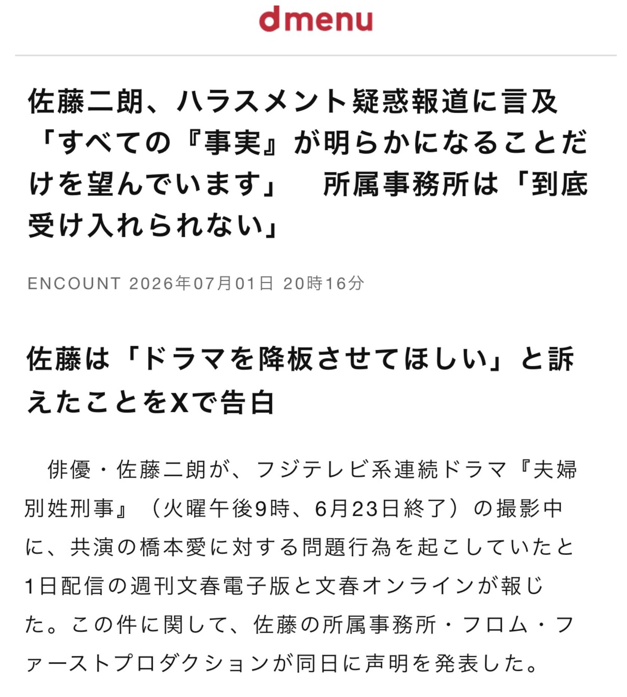
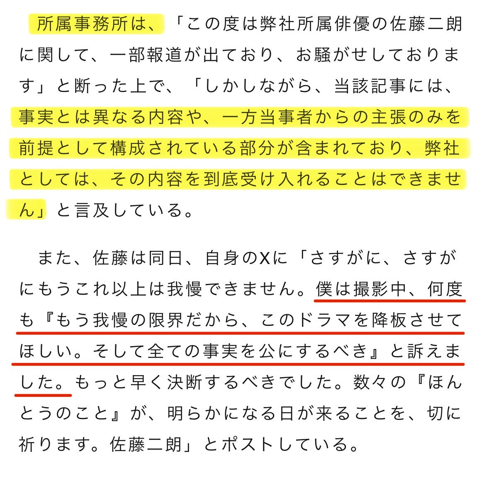
BYD「ラッコ」、航続距離が最大320キロ 軽EVで最長
BYD「ラッコ」、航続距離が最大320キロ 軽EVで最長
Claude Design がダークモードいつの間にか増えてるな
ガルクラのサントラは比較的明るめなので気分を上げたい時に聞くことが多い（部屋に何か流してないと不安になるので常に何か流している）
Torishima / INTPさんがリポスト
何かを実際に実行させるよりも、何をすべきかを決め、実行されたものの品質をレビューするのに、少ないフェイブル・トークンを使います。
氷の城壁めちゃよい 藤沢でスタンプラリーのスタンド見かけてこれも湘南かと見始めたチョロニワカ、、やっと12話 ずっとsus4みたいの続いていつ3度に落ちるのっ？！みたいな気持ち とてもいい、、
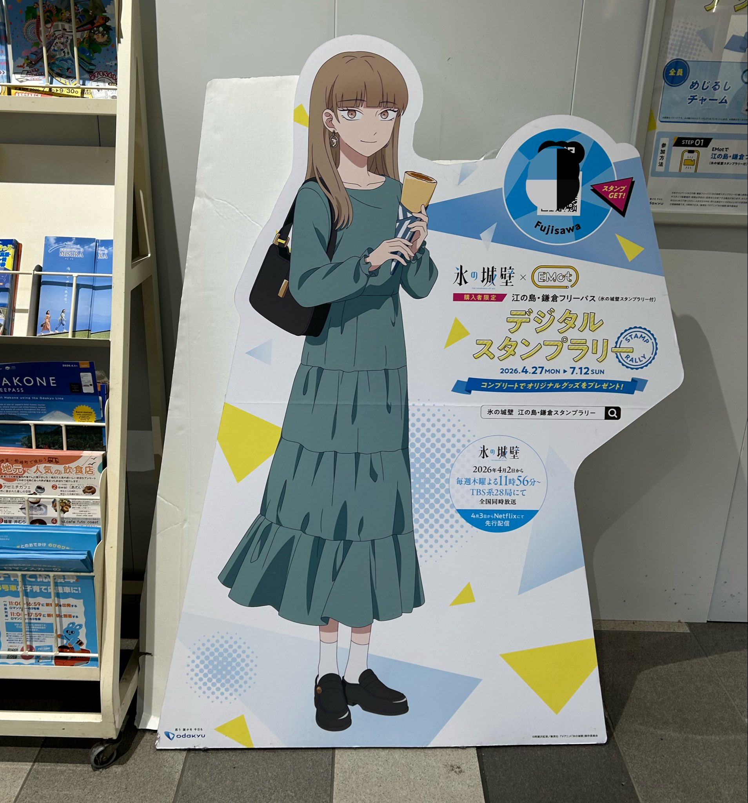
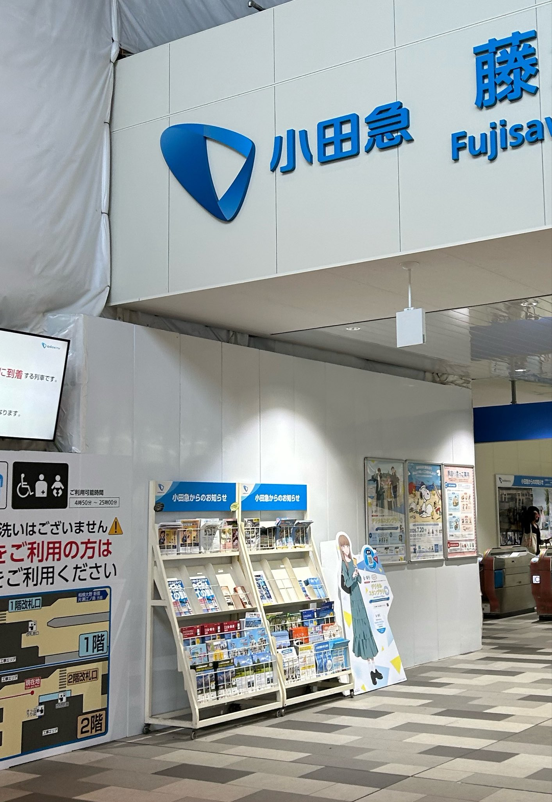
やばいハラスメントが文春によって暴露された佐藤二朗さん、とんでもない声明を発表！本当のやばすぎる真実が明らかに！ #芸能・スポーツ

やばいハラスメントが文春によって暴露された佐藤二朗さん、とんでもない声明を発表！本当のやばすぎる真実が明らかに！ - オレ的ゲーム速報@刃の記事ページ
jin115.com
Lv999 1話視聴
こういう正直なキャラは好きだし、俺も女の子が好きだから仲良くなれると思う。
気抜いて見るコメディとしては見れる。
無ではない。
Torishima / INTPさんがリポスト
まあGPT 5.6 Solきたら、Fableはサブスクに戻るだろうなぁと。
多分Opusじゃ勝てないと思うので、舞い戻って対抗してくると思う。
なので一旦心穏やかにしてる。
詐欺広告でお馴染みのMeta、ハイパースケーラーの生成AIチキンレースからいち抜け（脱落）か
闇バイトのリクルーターに「倫理観薄いんじゃないですかね」って言われるザッカーバーグwwww— 僻地課長 (@bubu0404) February 12, 2026価格高騰し過ぎてMETAがCAPEXレースから脱落、逆にリソース売る側に回りましたとさ— KIGASU (@KIGASU__) July 1, 2026まぁ懸命な判断で
kabumatome.doorblog.jp
Torishima / INTPさんがリポスト
厳密な比較はできないんですが、CursorでFable 5込みで1日使ってたら2000ドル分ぐらいのコストになってました
Torishima / INTPさんがリポスト
Claude Fable 5が使える1週間のためにサブスク課金するか迷ってる人が多そうですが、ちゃんと使うなら絶対Maxプランを活用すべき。
従量課金だと1日で数千ドルとか消えうるので、1日で元が取れるはず。(ただしサブスクは使用量の上限もあるので、使い道の選別は重要)
まかねこ| AIに働かせる技術
@makaneko_AI
Claude Fable 5・Mythos 5、7/1から利用可能に。ただし注意点も。
■ 課金の仕組みが少し変わります
Pro・Max・Teamプランなどでは、7/7まではFable 5の利用が週の利用上限の最大50%として通常利用に含まれます。それ以降は使用量クレジットからの消費に切り替わるので、頭に入れておきましょう。
■ x.com/AnthropicAI/st…
「月商」でそんだけ使われてんのマジか…
雪之丞さんさんがリポスト
【ニケモーション紹介】
マルチャーナ：マリンスタディ(CV：稲垣好)
◆使用武器
アサルトライフル「レスキュー・ザ・ペンギン」
◆スキル
ラプチャーの数が減るほど強くなる。
バーストスキル発動時は自身を強化し、敵へ強力な攻撃を繰り出す。
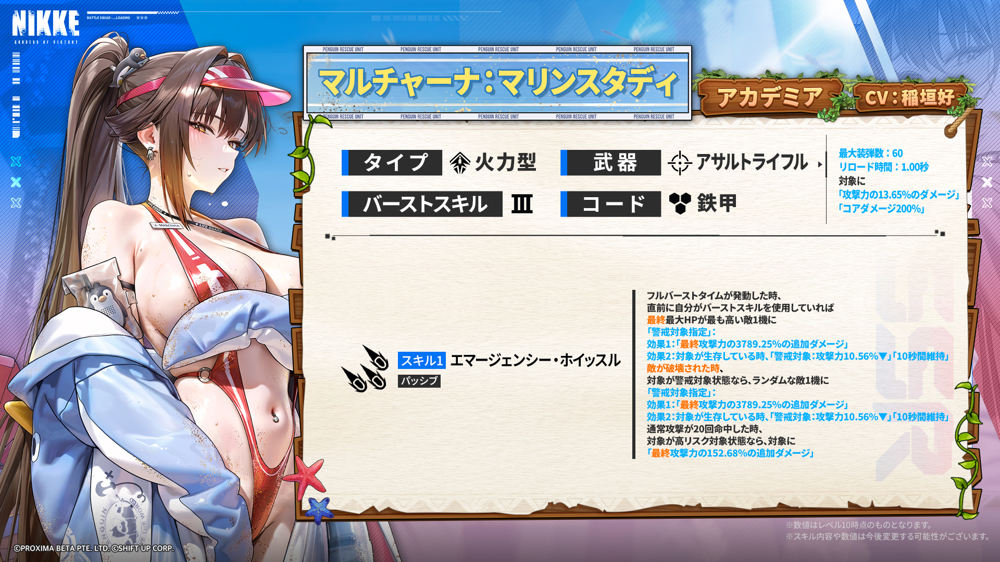
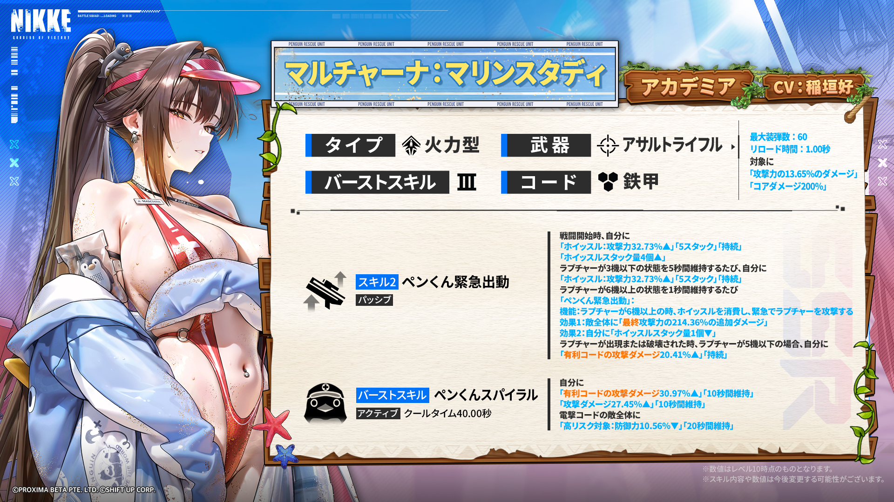
あのバグでSSDの寿命死んだなら怖すぎる
雪之丞さんさんがリポスト
【ニケモーション紹介】
シンデレラ：クリスタルウェーブ(CV：悠木碧)
◆使用武器
マシンガン「ガラスの靴」
◆スキル
ガラスの靴で敵を攻撃。
バーストスキル発動時は自身の攻撃能力を強化し、複数の敵に大ダメージを与える。
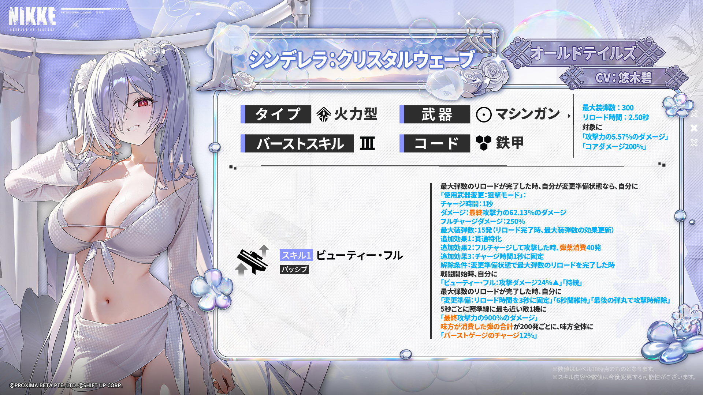
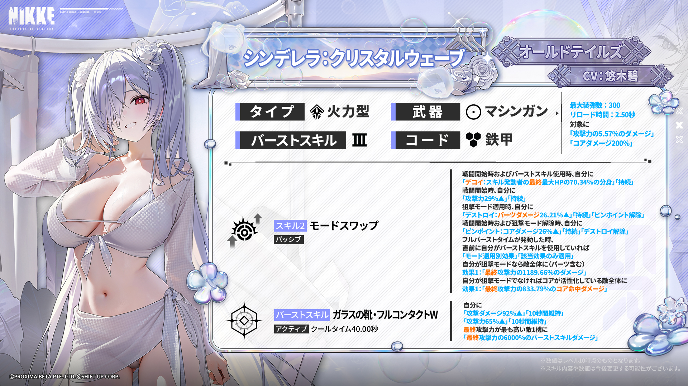
渡辺浩弐さんがリポスト
渡辺浩弐の吐田君シリーズ初版帯付き。ひきこもりパパの話か…面白そう。
初版帯付set 渡辺浩弐 KOZY WATANABE 吐田君シリーズ はんだくん
初版帯付set 渡辺浩弐 KOZY WATANABE 吐田君シリーズ はんだくん by メルカリ
Torishima / INTPさんがリポスト
超かぐや姫！オンリーイベント一覧更新！
真・かぐや誕生日に合わせて「超ツクヨミ祭！1.68」が開催決定！とのことで、今年の超かぐオンリーイベントは全部で18個になりました！！
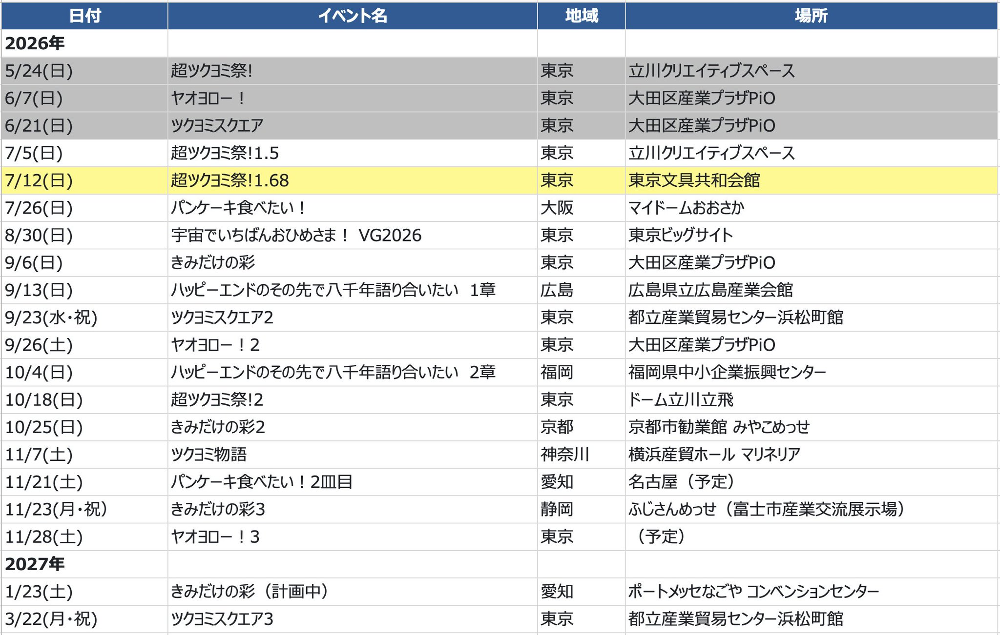
出すの遅すぎんよ〜感はまあある
あ、OPからなんか不安なアニメだ
老舗PC壁紙ツール『Wallpaper Engine』マルウェア混入報告の壁紙タイプをワークショップから排除する方針へ
https://
gamespark.jp/article/2026/0
7/02/168701.html?utm_source=twitter&utm_medium=social&utm_content=tweet
…
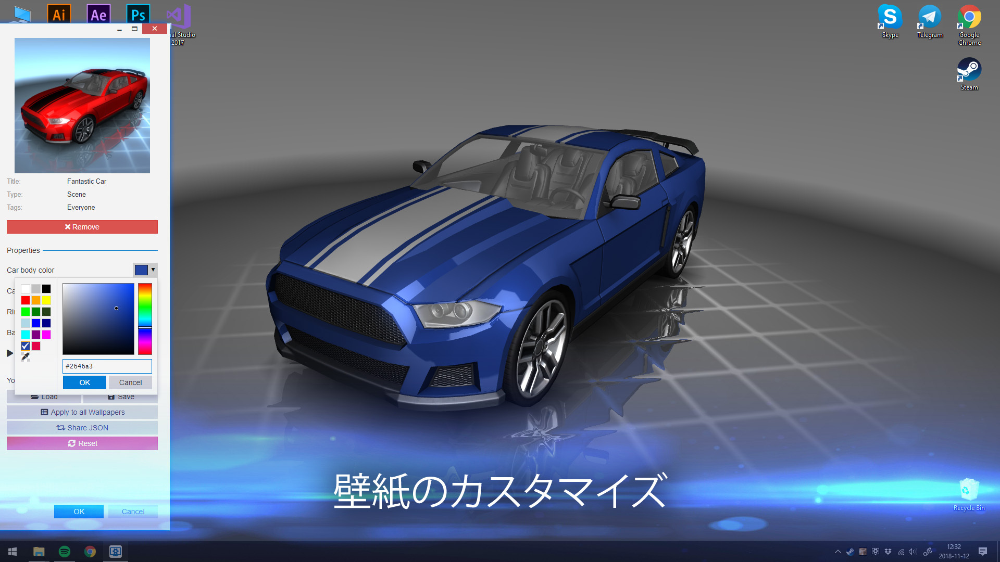
Lv999
ポン☆潤々さんがリポスト
お誕生日おめでとう！
いつもありがとう
#山村賢生誕祭2026 #山村賢誕生祭2026
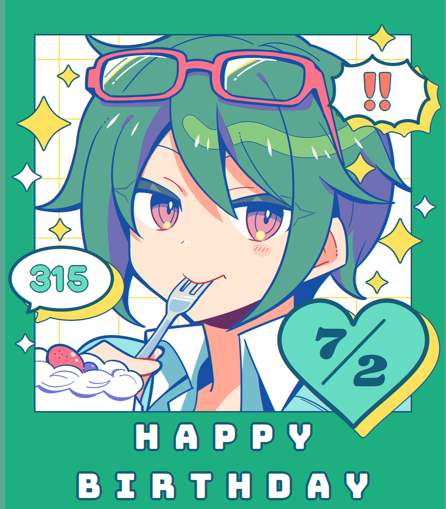
Wordle 1,839 4/6
渡辺浩弐さんがリポスト
吐田君シリーズ初版帯付。ひきこもりの家族話、身につまされる。
初版帯付set 渡辺浩弐 KOZY WATANABE 吐田君シリーズ はんだくん
初版帯付set 渡辺浩弐 KOZY WATANABE 吐田君シリーズ はんだくん by メルカリ
貝さんさんさんがリポスト
勉強
Torishima / INTPさんがリポスト
Fable 5 は、US時間でいうところの何時なの？
もう、USもとっくに7/1だよね
モバイルSuica死ぬの怖すぎるな…未だに物理でチャージしております
島々を巡る冒険サバイバル『Tinkerlands』2026年6月分の開発ログ公開。自由な船造り&航海システムを開発中
https://
gamespark.jp/article/2026/0
7/02/168700.html?utm_source=twitter&utm_medium=social&utm_content=tweet
…
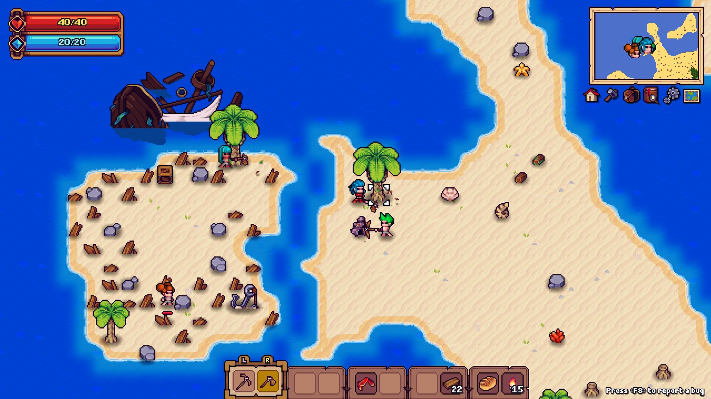
Torishima / INTPさんがリポスト
春クールは良作揃いで話題になりにくかったですが、『淡島百景』はワンクール作品とて他に類を見ない完成度のお話です。ぜひ原作漫画と合わせて、繰り返し楽しんでいただけたら嬉しいです。
中国・王毅外相「台湾関連は慎重に対処を」 ルビオ米国務長官に要求
中国・王毅外相「台湾関連は慎重に対処を」 ルビオ米国務長官に要求
Torishima / INTPさんがリポスト
『月』が『観客』と同等だった場合、時間遡行が成立するのも、輪廻が閉じているのも、説明つきそう。だって『超かぐや姫という物語を外から読んで/観ている構図であり、ページを戻れば戻れるし、未来が過去を変える事も可能』とも言えるので……
ナグーチカ
@Qed495Scarlet
たしかに実は『月』または『ツクヨミ』の方が描写として現実に近い、逆に現実の方がなぜかコミカル描写が成立する超かぐや姫世界、『月』がスタァライトにおける『観客』に相当する可能性はあるんですよね。
『月』『観客』から見たフィクションの世界が超かぐや姫世界であるみたいな。
学生時代Kondara MNU/LinuxでIPv6をサポートして、自宅にLinux 6bone JPでトンネルを掘って部屋までIPv6を通していたが、自宅にIPv6が降ってはきているものの、未だにクラウドでローカルIPアドレスのハンドリングに苦労しているのとか、どこで根本的に間違ってしまったのか
これになってる
金のニワトリ
@gosrum
1週間だけ Claude Max (20x)に入れる$50のプランが今、望まれている...！ x.com/AnthropicAI/st…
よくある話だがLinuxがこんなに長生きするとは思わなかったしPythonこんなに流行るならもうちょっと真面目にやっておけば良かったしIPv6まだまだだし高校時代を捧げた親指シフトとOASYSは廃れたけど。技術が廃れないと思うから裏切られるのであって最初から期待しなきゃいい

日本の端の方にいるIT技術者である。 30代をとある技術に全ベットしてきた。 数年前までは結構勢いがあったのだが、とある上位互換の技術の台頭により、一気にシェアを落としてしまった。 採算が取れないので会社としても、近々プロジェクトを終了させるだろう。IT技術なんて栄枯盛衰あって当然だが、実際に自…
anond.hatelabo.jp
税務署「お前の死んだ父親の土地は一億円。相続税5000万円払え」
↓
息子「現金ないので、相続放棄します」
↓
税務署「本当は1000万円の価値しかなかったので、1000万円で買う人いるー？」
騙して土地をタダで奪う詐欺師の手口やん、、、
NHKニュース
@nhk_news
相続人から引き取った土地 民間売却へ最大9割引きの新制度
https://
news.web.nhk/newsweb/na/na-
k10015164061000
… #nhk_news
オタクの悪ノリが見つかってて笑う
【集英社】ナツコミ2026 ベトナム・中国人転売ヤーが本をぶん投げ書店を荒らしまくって終わる
【集英社】ナツコミ2026 ベトナム・中国人転売ヤーが本をぶん投げ書店を荒らしまくって終わる : ハムスター速報
4年前ってマジか……続編作ってるって話あったけどもうちょいかかりそうだよね
TVアニメ『リコリス・リコイル』公式
@lycoris_recoil
𝟰周年！！！！
#リコリコ #リコリコ4周年
三代目実況アカウントも死亡したので、このアカウントで実況民のリストを眺めて安寧を得ながらいろいろ掛け合って全体復旧のお祈り中
なるせひろのりさんがリポスト
単に佐藤二郎がキモくて身体接触制限あったに一票。
大河ドラマで橋本愛と吉沢亮ハグしてたで。
ᴋ_ᴍᴀʀᴜ_ᴅᴀᴜ_ʙᴀʙʏ
@k_maru_dau_baby
佐藤二朗（57）ハラスメント報道に声明
・フジドラマ『夫婦別姓刑事』第1話撮影中
佐藤の指が橋本愛（30）の顎に触れてしまった
・橋本には過去のセクハラによって身体接触の制限があった
・佐藤にトラウマを伝えるか 橋本「フジに任せる」
・プロデューサーが佐藤のマネジャーに伝える
なんでMX/BS11よりtvk/テレ玉/チバテレのほうが早いんだよ……
蒸すか大差
@7vU6jrZRuX2ffkY
来週水曜から始まるアニメ、最近ではなかなか見ないタイプの放送日程でひっくり返ってる
「今日目撃した女性ドライバーのバック駐車がヤバすぎた」ﾊﾟｼｬｯ → とんでもない動画が投稿されるｗｗｗｗｗ #雑談・その他の話
「今日目撃した女性ドライバーのバック駐車がヤバすぎた」ﾊﾟｼｬｯ → とんでもない動画が投稿されるｗｗｗｗｗ - オレ的ゲーム速報@刃の記事ページ
jin115.com
山人@耳すまさんがリポスト
【祝】本日7月2日で「アニメ『ラブライブ! サンシャイン!!』10周年」
2016年のこの日、TVアニメ1期が放送開始した。私立浦の星女学院に通う高海千歌は、東京で「μ’s」の存在を知り、衝撃を受ける。「私も輝きたい」と感じた千歌は、早速スクールアイドル部の設立を目指して部員集めをスタートする。

日本経済新聞 電子版（日経電子版）さんがリポスト
海外勢が日本株買う理由「割安さから構造変化に」 米州みずほ責任者

海外勢が日本株買う理由「割安さから構造変化に」 米州みずほ責任者
Torishima / INTPさんがリポスト
BS民(皆無？)や地上波を逃した方は今日「淡島百景」スタート！
最終話ですね！楽しんで下さい！
BS最終回記念に誰も読まなかった作画注意事項を上げときます。
大量解雇で“組合つぶし”疑惑のさなか、Rockstar Games従業員が労働組合の正式承認を申請―実現すればイギリスのゲームスタジオで2例目
https://
gamespark.jp/article/2026/0
7/02/168699.html?utm_source=twitter&utm_medium=social&utm_content=tweet
…
軍手さんがリポスト
𝟰周年！！！！
#リコリコ #リコリコ4周年
世代狙い撃ちにも程があるだろ
そう考えると最初からsteamだけに集中してDL版を購入しておけばいいという話になるわけで アカウントを持っていても、ハードが生産終了したら意味ないよね
MICHEE-N（ミッチー・Ｎ）さんがリポスト
Teslaは2回車検通すくらい乗ったけど。今回のテスラジャパン納車遅れや、疲弊していく社員の皆さんにしかクレーム言えないこの現状を見ていて。
1つだけ決めたことは、もうTeslaを手放すということ。BMS_a079でバッテリーが突然逝く、その恐怖を誰も感じたことないだろう。もう嫌になった、疲れた。
THULEのバッグパックは“本気の”オンオフ兼用。荷物整理が快感〜！
バックパックに限らず、「オンオフ兼用」という言葉をよく聞くようになった。ただ、言葉だけが先回りして、売り文句っぽくなっているケースも少なくない。本当の意味での「オンオフ兼用」ってこういうことか。そう思わせてくれたのが、THULE（スーリー）
gizmodo.jp
MICHEE-N（ミッチー・Ｎ）さんがリポスト
最近、お仕事関連で名刺交換する時に良く言われるのが「立ち振る舞いがキチっとしてますよね？」と言われるんですが、その時に実は元鉄道員なんです！ってと言うと俄然印象が良くなるのが不思議。お陰様で現在も経験を活かして各方面で働かせて戴いております。
結局、PS3とVITAで購入したデジタル資産というのがそのまま消え去るようなもんだから、救済措置もないしな。どこかにアップグレードできるわけもないし、DL互換もないのが痛いという。VITAには色々と世話になったので、終わると悲しくなるよな
プロンプトをもっと整理しないとトークンが増えてしかたない
コードを改めて確認すると時間がかかる処理が多く最適化されてないことがわかった。私が開発したアプリより負荷が大きいのは残念。
Claudeはシンプルなコード優先なのかもしれない。
四恩
@latache1968
私が開発した適時開示分析アプリをＣｌａｕｄｅに作らせてみたがなかなか動かず３時間ほどデバッグの末ようやく形になってきた。
コードはシンプルで参考になるものの、最新のツールに適応したコードが生成できないのは仕方ないのか。。
表面は一晩で真似できるが，独自データとUX，そして“第一想起”だけは買えない。AIで事業を作る実務家5人が語った勝ち筋［IVS2026］
https://
4gamer.net/s/G999110.2607
01060
…
AIを使えば，“それらしいプロダクト”は一晩で立ち上がる半面，作った端から模倣されるという現実の中にいかに優位性を保つか
SIE、PS5用新作タイトルのディスク版の生産を2028年1月に終了 ついにデイスク版の生産終了してしまった・・そして、PS3、PS Vita向けPS Storeが2027年7月にサービス終了。 これはさすがにショックな事件ですわ
NYダウ、朝安後上昇に転じる 一時100ドル高

NYダウ、朝安後上昇に転じる 一時100ドル高
私が開発した適時開示分析アプリをＣｌａｕｄｅに作らせてみたがなかなか動かず３時間ほどデバッグの末ようやく形になってきた。
コードはシンプルで参考になるものの、最新のツールに適応したコードが生成できないのは仕方ないのか。。
Torishima / INTPさんがリポスト
多分、Fable5復活と同時にリセットされると思われ。
サモ
@Samo_Toshu
もしあと２２分後にFableがリリースされたらワイはまだ勝てる！！
Torishima / INTPさんがリポスト
というわけで、この問題は「かぐや7/12生まれ」で解決しましたね！めでたし
たかちょC108❶南２ｊ33a❷東２ナ31a
@takacho_01
超かぐや姫の時系列を考える上で避けては通れなさそうな、かぐや2030年7月5日生まれ問題……なんですけど、作中において月齢の時系列を一番大事にしてる（2030年9月12日が満月）ってとこを踏まえると、Vtuberかぐやの「設定」として考えた方が良いのかもしれませんね。………かぐや道は奥が深い。 x.com/takacho_01/sta…
Torishima / INTPさんがリポスト
監督が書いたであろうかぐやの言い訳、
・この近くの宇宙に出た時
・月はあくまでたとえであって
など、前々から与太では出てた｢月人の月人って別次元じゃない？｣を更にすすめた、｢そもそもこの宇宙とは別の次元｣仮説が立ちそうな重大発言出てるんですけど……
アストラル世界なのか、もしや？
この場合、ヤチヨの誕生日もどうなるか気になるところ
クリエイターであること自体に絶頂してる三流何者物語が大量に出回っている中で、左利きのエレンはそこで終わらない誠実さがあったから何者アニメでも好きだった。
JDI会長、茂原工場売却は「財務改善に寄与する価格で」 株主総会で
JDI会長、茂原工場売却は「財務改善に寄与する価格で」 株主総会で
今日はここまで
日曜くらいにグラマスまでもっていきたい
貝さんさんさんがリポスト
エ！？！？！？！？！

山下清悟 Shingo Yamashita
@yama_ic
〜かぐやの誕生日に関するお知らせ〜
以降「7/12」になります！よろしくお願いします！
新シーズン初日からアニメトロッコ問題かよどうすりゃいいんだ
【速報】プレイステーション、パッケージ版が2028年1月に生産終了！ゲームはダウンロード販売のみへ #PS5
【速報】プレイステーション、パッケージ版が2028年1月に生産終了！ゲームはダウンロード販売のみへ - オレ的ゲーム速報@刃の記事ページ
jin115.com
戦車系ヒーローシューター『World of Tanks: HEAT』新エージェントや新マップ追加のシーズン1「ロスト・エデン」配信
戦車系ヒーローシューター『World of Tanks: HEAT』新エージェントや新マップ追加のシーズン1「ロスト・エデン」配信 | Game*Spark - 国内・海外ゲーム情報サイト
Torishima / INTPさんがリポスト
今年の7月5日は日曜日。基本土日の業者による仕入れ配達はない。あとは分かるな？（無駄にはならないけどスペース）_(:3 」∠ )_
CinemaCity
@cinemacity_jp
？？？？？？？_(:3」∠)_
電子シャッターだったけどローリングシャッター歪は気にならない感じかなぁ
とりしま (Sub I/O)さんがリポスト
これを公式サイドが引用するのいいんだ
なるせひろのりさんがリポスト
正直、橋本愛さん側が
夫婦役のこのドラマのオファーを受けたのが謎だったけど、他の方の投稿を見て、これ、自分の思想を伝達するためのツールとして佐藤二郎さんが嵌められた説が出てきた。
橋本愛さんってわりとそっち系の思想の方で有名だし…。
辻褄は合うんだよなぁ……
ポルちゃん
@kawaikunaruOL
佐藤二郎の所属事務所の声明全文
この度は弊社所属俳優の佐藤二朗に関して、一部報道が出ており、お騒がせしております。 x.com/actor_satojiro…
大型バイク不要論・・・って言うけど
正直大型免許（限定解除）持っている人が言う分には判るけど、乗ってもいない物をディスるなんて
米6月の人員削減4.6万人 前月比で5割減、6カ月ぶり低さ
米6月の人員削減4.6万人 前月比で5割減、6カ月ぶり低さ
とりしま (Sub I/O)さんがリポスト
〜かぐやの誕生日に関するお知らせ〜
以降「7/12」になります！よろしくお願いします！
山下清悟 Shingo Yamashita
@yama_ic
〜かぐやの誕生日に関するお知らせ〜
以降「7/12」になります！よろしくお願いします！
それって化石になるの？デンマークで見つかった化石が斜め上すぎた。
それって化石になるの？デンマークで見つかった化石が斜め上すぎた。 | ギズモード・ジャパン
日本アニメ、世界人気で制作費高騰 ヒット期待で作品ごとの差も拡大

日本アニメ、世界人気で制作費高騰 ヒット期待で作品ごとの差も拡大
米国、若い世代で虫垂がん急増 40歳前後では4.6倍
https://
nikkei.com/article/DGXZQO
SG173KU0X10C26A6000000/?n_cid=SNSTW005&n_tw=1782913121
…
■若い世代に増えている理由は
■なぜ診断が難しいのか
米国、若い世代で虫垂がん急増 40歳前後では4.6倍
トランプ政権は自動運転車のブレーキペダルをなくしたい
トランプ政権は自動運転車のブレーキペダルをなくしたい | ギズモード・ジャパン
トランプ氏、仮想通貨で収益2000億円超 25年資産報告
https://
nikkei.com/article/DGXZQO
GN01BO50R00C26A7000000/?n_cid=SNSTW005&n_tw=1782912439
…
トランプ氏は自身や親族らで立ち上げた仮想通貨の関連企業「ワールド・リバティー・ファイナンシャル」から5億ドル超の収益を得ていました。
トランプ氏、仮想通貨で収益2000億円超 25年資産報告
ソアラ長谷川さん！？
老舗FPS『DOOM』の最新作はなぜ挑戦をやめないのか？
id Softwareからの新たな挑戦状。
『DOOM: The Dark Ages | Revelations』新要素まとめ&インタビュー
https://
gamespark.jp/article/2026/0
7/01/168697.html?utm_source=twitter&utm_medium=social&utm_content=tweet
…
・新武器“槍”で戦闘はどう変わる？
・本編以上の高難度コンテンツも……！
Torishima / INTPさんがリポスト
やっぱりかぐやが一番好き
SIE、プレステ新作ソフトのディスク生産を終了へ 28年1月以降はダウンロード版のみに
28年1月以降に発売するソフトはダウンロード版のみに
Torishima / INTPさんがリポスト
Anthropicのここが理解できない。報告書を見ると財務的には順調なようだが、Fable
Anthropic
@AnthropicAI
Claude Fable 5は明日から再び世界中で利用可能になります。
米国政府との一連の生産的な協議の後、私たちは新しい分類器セットを導入してモデルを再展開し、より多くのサイバーセキュリティタスクを対象にブロックします。短期的に、コーディングやデバッグなどの日常的なタスクの一部はOpus
エターナル総書記さんがリポスト
ヒューストンの空港で誰に会ったか見てみろ。
ヴィニのプスカシュを阻止した男だ。
ヴィニが1986年のマラドーナ対イングランド戦以来、すべてのワールドカップで最も美しいゴールを決めるのを阻止した男だ。
見事なセーブで、紳士的で、素晴らしい人物だ。
Torishima / INTPさんがリポスト
>そもそもかぐやがこの近くの宇宙に出たときから
今しれっとめちゃくちゃデカいこと言わなかったか？？？？？？？？
「この近くの宇宙に出た」ってことは少なくとも我々の3次元空間として認識してる宇宙とは「別のどこか」から来たのが確定したんじゃないのこれ
オワッこれ妄想だと思ってたけど公式
「ここ家賃9000円。普通に住めるし、安すぎて最高！」 → お隣さんから家賃が安い‘‘ゾッとする理由‘‘が明かされる・・・ #雑談・その他の話
「ここ家賃9000円。普通に住めるし、安すぎて最高！」 → お隣さんから家賃が安い‘‘ゾッとする理由‘‘が明かされる・・・ - オレ的ゲーム速報@刃の記事ページ
jin115.com
日本アニメ、世界人気で制作費高騰
https://
nikkei.com/article/DGXZQO
UB119920R10C26A6000000/?n_cid=SNSTW005&n_tw=1782903255
…
テレビ版の30分アニメでは2020年ごろに比べ5割以上上昇しました。「鬼滅の刃」などでは劇場用と同程度の、線の多い美麗な絵が求められるように。多くの人員を必要とし、コストを押し上げています。
アニメの人気が日本のアニメ制作代金を押し上げている。制作会社に支払われるテレビ版の30分番組向けの制作費は2020年ごろに比べ5割以上上昇した。とりわけ世界でもヒットが期待できる作品などが高く、視聴者が限られる作品との差も広がっている。帝国データバンクによると、国内のアニメ制作業界の市場規模は2024年時点で3621億4200万円と23年に比べ4%増えた。25年も24年比で増えたとみられる。一
nikkei.com
Torishima / INTPさんがリポスト
前から言ってるけど絵描きの卵は写真勉強したほうがいいよマジで。構図力、光と影の感覚、パースなんかはイラストより写真で覚える方が量的に早く養われるし。広角カメラと望遠カメラの見え方の違いとかも知ってればドラマチックな構図描くのに役立つ。何よりカメラ知識と用語は絵描きの現場で頻繁に出
首相がインド訪問、経済安保・AIで成果文書 10兆円投資を促進
首相がインド訪問、経済安保・AIで成果文書 10兆円投資を促進
オールワークスメイドの中身微妙すぎる…
絵だけじゃ食ってけないよ
ツバメがいなかったのでトンボ撮ってた
小さいので追いかけるのが大変
α7RⅥ
TAMRON50-400mm F/4.5-6.3 Di III VC VXD (A067)
なるせひろのりさんがリポスト
佐藤二朗からのハラスメントを訴えてる橋本愛さん、普通の女優さんかと思ってたけどかなり思想強めな女優さんだったのねw
文春にコラムを持ち（テーマは「選択的夫婦別姓と憲法と平和」「多文化共生」など）、更にフェミニズム、ヘイトスピーチなどに言及し
なるせひろのりさんがリポスト
橋本愛これok出してて
なんで佐藤二朗はちょっと触れただけでngなんだよ
ᴋ_ᴍᴀʀᴜ_ᴅᴀᴜ_ʙᴀʙʏ
@k_maru_dau_baby
佐藤二朗（57）ハラスメント報道に声明
・フジドラマ『夫婦別姓刑事』第1話撮影中
佐藤の指が橋本愛（30）の顎に触れてしまった
・橋本には過去のセクハラによって身体接触の制限があった
・佐藤にトラウマを伝えるか 橋本「フジに任せる」
・プロデューサーが佐藤のマネジャーに伝える
【福田組（笑）】ワイ 炎上中のケロロ軍曹の映画を見に行く
【福田組（笑）】ワイ 炎上中のケロロ軍曹の映画を見に行く : ハムスター速報
これ家団の他4人のうち誰がそれを指摘する役回りになるのかによって一家Dumb Rock!のバンドカラーそのものが大きく変わってくるので真剣に議論されるべきだと思う。俺は四宮寧月さんに「ちえり、いささか声が大きいぞ。」ってあのバンド紹介動画の声のトーンで言ってほしい。(？)
とりしま (Sub I/O)さんがリポスト
来週水曜から始まるアニメ、最近ではなかなか見ないタイプの放送日程でひっくり返ってる
797ってFMぎのわんでは？ #リポリポ #うるせえズ
Torishima / INTPさんがリポスト
Mythos 6 リーク：新しい Anthropic モデル
- 次世代の Mythos モデルが内部トレーニングを完了したと報じられており、最終的に Mythos 5.1 または Mythos 6 としてリリースされる可能性がある
- Fable 5 と Mythos 5 に対する制限が展開を遅らせた可能性があるが、裏での開発は止まっていない
-
屋良朝苗？ #リポリポ
『自己顕示欲が強いが、あまり頭が回らないので失敗ばかり。でもめげない。声がでかい。』っていう文章、全キャラクター紹介選手権でもかなり可愛い部類の日本語すぎて何度も声に出して読んでしまう。どう考えてもいいやつそうすぎる
Torishima / INTPさんがリポスト
芥見下々、自分の作品の視聴層を考えたら絶対伝わらないのに「『かんなぎ』の竹内哲也さんがぁ〜」とか堂々と感想コメント残しちゃうレベルの作画オタク。
呪術廻戦【公式】
@jujutsu_PR
#呪術廻戦 #渋谷事変
芥見先生から
第6話をご視聴されたコメントが到着です!!
次週9/7(木)23:56～第2期7話「宵祭り」も
是非リアタイで楽しみましょう!!
佐野海舟が先制点を決めた時、
物凄く大きな夢を一瞬見させてもらったな
梅里ちえり後輩、後輩だし、一人称が「ちえり」で敬語口調だし、「ぐぬぬ、、、、」って言うし、自己顕示欲が強いがあまり頭が回らないので失敗ばかり/でもめげない/声がでかいし、王様になることを夢見ているし、バンドリだと比較的初となる中須かすみ後輩タイプのキャラクターの可能性があるんだよな
オールワークスメイドのOPオタクは喜んでるけど、これはOPじゃなくてEDであって欲しいよ。OPにこれ持ってくるのは、ちょっと制作側の欲が見えて萎える。
オルワメ2話！
このアニメの世界観あんまり掴めてない
日本経済新聞 電子版（日経電子版）さんがリポスト
ソニーのプレステ、新作ゲームソフトのディスク販売を28年に終了

ソニーのプレステ、新作ゲームソフトのディスク販売を28年に終了
酒米の王様「山田錦」の田を守れ 酒蔵が承継へ新会社
https://
nikkei.com/article/DGXZQO
UF23CMA0T20C26A6000000/?n_cid=SNSTW005&n_tw=1782900867
…
伊勢神宮に御料酒を納める兵庫の酒蔵、白鷹。コメ農家が減る中、酒蔵自ら水田の承継に乗り出しました。社員は「農作業を通じて、大事なのはコメだと再認識できる」と語ります。
山田錦の田を守れ 兵庫・西宮の酒蔵社長、承継へ新会社
サイバーパンクとは少し違うけど、ジャパンはそもそもディストピア耐性がかなりあるので、欧米ほど膨張した大きな政府や監視社会に抵抗がないんじゃないか。
秩序が好きだから体制内でディストピアと乱闘する方が好きなんだよな。
ふぇむ(せかんど！)
@000Amaurot
直近の優勝サイバーパンクアニメはやっぱり魔王2099ですかね
『マインクラフト』や『Call of Duty』のコミュニティサーバーは「違法」だと主張。ゲーム業界のロビイストが「Stop Killing Games」公聴会で
https://
gamespark.jp/article/2026/0
7/01/168696.html?utm_source=twitter&utm_medium=social&utm_content=tweet
…
なるせひろのりさんがリポスト
【速報】TVアニメ『氷の白壁』2期制作決定！！
最終回となる第14話は明日放送されます。
#氷の白壁
京セラ、AI向けコンデンサー生産に1000億円 31年3月期まで7年間
京セラ、AI向けコンデンサー生産に1000億円 31年3月期まで7年間
とりしま (Sub I/O)さんがリポスト
〜かぐやの誕生日に関するお知らせ〜
以降「7/12」になります！よろしくお願いします！
Torishima / INTPさんがリポスト
何もかもが早いので、終わるのが早い可能性も考慮してる。すでに下降傾向にある。それにしてもすごい数だけど。あとピークが4/5なの好き。
なるせひろのりさんがリポスト
財務省の犯罪は数あれど､これほど酷いのも珍しい｡相続税が払えず“相続人から引き取った土地”を民間売却する際､最大「9割引き」で民間に売却できる仕組みを導入する財務省｡理由は「管理が負担」だから…ふざけるな！ならば相続税を9割引きにすればいい｡買い漁る中国人と「どこで繋がっている」のか
NHKニュース
@nhk_news
相続人から引き取った土地 民間売却へ最大9割引きの新制度
https://
news.web.nhk/newsweb/na/na-
k10015164061000
… #nhk_news
譲:総選挙の票
求:来年のキャラ大KIRIMIちゃん.への投票
とか成立するんだろうか…←今年の結果をやや引きずっている
SNSは使えないけどUber Eatsはいける。Commodoreのデジタルデトックス携帯
SNSは使えないけどUber Eatsはいける。Commodoreのデジタルデトックス携帯 | ギズモード・ジャパン
チーズ工場、雪印メグミルクが増設 北海道中標津町で地鎮祭
https://
nikkei.com/article/DGXZQO
FC016KO0R00C26A7000000/?n_cid=SNSBS001&n_tw=1782911736
…
1万平方メートルの工場を建設し、2028年度前半から順次生産。
25年度には8700トンの原料チーズを生産していましたが、2万トン規模への拡大を目指します。
（内容に不備があったため、修正し再投稿しました）
北海道中標津町にチーズ工場増設、雪印メグミルクが地鎮祭 460億円
なるせひろのりさんがリポスト
【悲報】福島みずほさん、国旗損壊罪を批判するあまり
「他人を不愉快にさせることは犯罪ではありません！」と力説
日頃から“不快だ”“傷ついた”を理由に表現規制を求める界隈に、盛大なブーメランを投げてしまう
「モノポリー：スター・ウォーズ ヒーロー vs. ヴィラン」が本日リリース。スター・ウォーズのさまざまな時代を舞台に銀河の覇権を争う
https://
4gamer.net/s/G102209.2607
01059
…
最大6人でのオンラインマルチプレイにも対応
トランプ氏、仮想通貨で収益2000億円超 25年資産報告
トランプ氏、仮想通貨で収益2000億円超 25年資産報告
楽しそうな祭りには参加したいのでデレの総選挙の投票券集めている。とりあえずもう100票以上集まった。これ毎日コツコツ票を集めるやつです？
今日の私。
『マクドナルドで以下のサービスは今後できなくなります』
ってニュースを見て、
「今までできたんだ・・・」
そんな７月の始まり。
オールワークスメイドの略は全労
Torishima / INTPさんがリポスト
【メイキングてきなやつ】
本作は、seedance2.0の性能実験を兼ねているので、その検証用として、各ショットのリファレンス内容を公開いたします
また、ツリーに
- #Tapnow でのキャンバス
- 一部のショットのprevis動画のデータ
ててつろう
@craftcapitallab
ショートアニメ『LOVE LETTER GIRL』
女の子が、男の子にラブレターを渡すだけの青春(?)アニメです
どうぞご覧くださいませ！
TapNowさんに、クレジットをご提供いただきました。
後日、ワークフローとメイキングも公開いたします！
#TapNow @TapNow_AI @TapNow_JP
Torishima / INTPさんがリポスト
時間指定までにユーザに特定の操作を求めるのは業務システムの敗北だよ。本当はそんなんユーザがするわけ無いで設計と計画をしないとならないが、言わざるを得ない状況というのが同情しかない。
tanaka
@bendantian
0:50までにアプリを削除しなくてはならないことを知ったが手遅れ。
明日どうすればいいのだろうか？？
これ、Suica ID も変わってしまうわけで、JRE的にかなり重大なシステムインシデントじゃないでしょうか。 x.com/jr_mobile_suic…
【富士山7月1日山開き】
https://
nikkei.com/article/DGXZQO
CC26AGO0W6A620C2000000/?n_cid=SNSTW005&n_tw=1782907311
…
静岡側と山梨側で同じ日に山開きするのは13年ぶり。静岡側は例年10日に開山していましたが、平均気温の上昇を受け前倒ししました。山梨県によると6月下旬時点の事前予約の人数は25年を3割近く上回っています。
富士山が山開き、静岡・山梨側13年ぶり同日に 登山客の利便性向上
なるせひろのりさんがリポスト
黒田さんフィギュアの監修してました
Anthropicも書いている通りですが、「絶対にジェイルブレイクされないAI 」というのは、現状の技術的にまずあり得ず、完璧を目指すほど、一般的で有用な利用が犠牲になります。現状は、
"危険である可能性は低いものの、念のためセキュリティ対策によってブロックされるタスクがいくつかある"
今日はオールワークスメイドとLv999だけか
東証カジノの信用買い残、過去最大の7兆円まで膨らむ（そのうち1.3兆円がキオクシア）
"ドパガキ"というスラング、東証カジノにドハマりしてるドパオジなので胸が苦しくなる。子どもにとってのショート動画は大人にとってのギャンブルと同等— オンク (@it_warrior_onc) June 18, 2026 信用買い残はついに7ちょうえん！ pic.twitter.com/O84wKAS2fS— とにかく明
kabumatome.doorblog.jp
まじこれ。もちろん問題ないこともたくさんあるけど、たとえ一見ポジティブな流れでも、例えば「条件付き賛成」を「全面的に賛成」って勝手に書き換えられるような「それだいぶ話が変わってくるんですけど！？」ってのが時々はある。やっぱり最新のAIといえど「まだそのくらい」という自戒はだいじ
榎宮祐ノゲノラ新刊発売
@yuukamiya68
あのぉ……あまり言及したくないんだけど、一応日本語とポルトガル語の両方わかる者として言わなきゃいけないことがありまして。
Xの自動翻訳の精度はマジでゴミ。勝手に意訳して書かれてないことを表示しやがる。だから大量のすれ違いが発生してる。自動翻訳信じないほうがいいです。
Torishima / INTPさんがリポスト
AnthropicのFable/Mythos解放に関する詳細記事には、そもそもFableが停止されるに至った顛末が書いてありましたが、報道にあったAmazon黒幕説は正しく、ここのジェイルブレイク報告が直接的なきっかけだった模様。ただ、これはAnthropicも強調している通り、GPT-5.5やOpus4.6、なんなら中国モデルでも
Redeploying Claude Fable 5
フィンランドの「砂の電池」が稼働して1年。最大1カ月分の暖房用エネルギーを貯蓄できた
フィンランドの「砂の電池」が稼働して1年。最大1カ月分の暖房用エネルギーを貯蓄できた | ギズモード・ジャパン
直近の優勝サイバーパンクアニメはやっぱり魔王2099ですかね
日本経済新聞 電子版（日経電子版）さんがリポスト
川崎重工が2000億円調達 公募増資など、フィジカルAIへ積極投資

川崎重工が2000億円調達 公募増資など、フィジカルAIへ積極投資
Polar Starチャレンジ 185日目午後の部
マイネームイズ
@MyNameIs_smrn
Polar Starチャレンジ 185日目午前の部 x.com/mynameis_smrn/…
Polar Starチャレンジ 185日目午前の部
マイネームイズ
@MyNameIs_smrn
Polar Starチャレンジ 184日目午後の部 x.com/mynameis_smrn/…
記事によるとOpenAIはLLM推論コストを半分以下にする方法を編み出したという。ええやん、これで赤字が減りますね。どうやって実現したのかオープンにしてくれよ、OpenAIなんだからさ
Chubby
@kimmonismus
OpenAIは、モデル実行コストを半分以上削減する新しい推論最適化を発見したと報じられています！
The Informationによると、エンジニアたちは今月、同僚にこれらの技術が、無料または有料アカウントを持たない訪問者向けのChatGPTを、一時的にわずか数百台のNvidia
ふぇむ(せかんど！)さんがリポスト
オールワークスメイド見る なんて略すのこれ
「日本は戻ってきた。でも簡単じゃない」，日韓の投資家・起業家が語るクロスボーダー展開の本音［IVS2026］
https://
4gamer.net/s/G999110.2607
01047
…
日本を「先進的で参入しやすい市場」と考えて進出する海外企業は多いが，実際には意思決定の遅さ，深い信頼関係への依存，複雑な業界構造に直面する
渡辺浩弐さんがリポスト
渡辺浩弐の吐田君シリーズ。ひきこもりからパパになる話、メモっとく。
初版帯付set 渡辺浩弐 KOZY WATANABE 吐田君シリーズ はんだくん
初版帯付set 渡辺浩弐 KOZY WATANABE 吐田君シリーズ はんだくん by メルカリ
女性「同じ職場のハゲ親父がムカつく。セクハラされたって嘘ついて追い込んでやる」 → 最悪なことになる・・・ #酷い話・事件
女性「同じ職場のハゲ親父がムカつく。セクハラされたって嘘ついて追い込んでやる」 → 最悪なことになる・・・ - オレ的ゲーム速報@刃の記事ページ
jin115.com
Beatsイヤホン買いにセブン行こうぜ！ 限定色が1万2800円で登場
Beatsイヤホン買いにセブン行こうぜ！ 限定色が1万2800円で登場 | ギズモード・ジャパン
これはかなしい
大型スーパーで散らかった商品をひたすら棚に戻す整理整頓シムが配信。4,668個の商品を無心でお片付け―採れたて！本日のSteam注目ゲーム
https://
gamespark.jp/article/2026/0
7/01/168695.html?utm_source=twitter&utm_medium=social&utm_content=tweet
…
果物、お茶、冷凍食品、本、ワイン、ラーメンなどを正しい位置に配置。少しづつ綺麗になっていく視覚的な満足感も得られます。
#dnb / #Elevate
Friction - Stay
https://
youtube.com/watch?v=nZdrzn
NN4rY&list=PL_F42GZ969hiF-tWFt6DFT0O0l_-BEym-&index=6
…
"Elevate Records label boss lands with another heavy hitter"
#dnb / #DnBArena
BCee & Javeon - What You're Missing
https://
youtube.com/watch?v=lqIKFp
X3Pyg&list=PL_F42GZ969hiF-tWFt6DFT0O0l_-BEym-&index=2
…
"Soulful liquid flavours from BCee & Javeon - out now as part of Drum&BassArena's 30th anniversary series."
トウカイのクマさんがリポスト
#初星学園放送部
ゲストで出演させていただきました！
GO MY WAY咲季も燕も無事にお迎えできたよコミュ最高なので見てみてね
改めて、沢山のお便りありがとうございました！！！
学園アイドルマスター【公式】
@gkmas_official
✧━━━━━━━━━━━━✧
#初星学園放送部
✧━━━━━━━━━━━━✧
ご視聴ありがとうございました！
来週も21時からお届けします！
アーカイブはこちら
https://
asobichannel.asobistore.jp/watch/9hgfljxxm
次回もお見逃しなく！
#学マス
#techno / #FrenzyRecordings
Mees Javois - Reflection (Matrixxman Remix)
https://
youtube.com/watch?v=XVcRCr
2vDVA&list=PL_F42GZ969hiF-tWFt6DFT0O0l_-BEym-&index=4
…
Artist: Mees Javois
Title: Eyes Without A Face EP
Label: Frenzy Recordings
Catalogue: FRNZYREC012
Release date: June 19, 2026
#techno / #TechnoRecords
Nastia - True Majority
https://
youtube.com/watch?v=x0d_u_
5hdbs&list=PL_F42GZ969hiF-tWFt6DFT0O0l_-BEym-&index=3
…
Artist: Nastia
Title: TECH041
Label: TECHNO Records
Catalogue: TECH041
Release date: June 25, 2026
Torishima / INTPさんがリポスト
ファブル5の使用を最大化する方法：
1. 一方通行のドアに使う。データモデル、API契約、コア抽象化 - 週が終わる前に元に戻すのが高くつく呼び出し
2. GPT-5.5をコンテキスト圧縮機として前に置く。リポジトリ全体を読み、ファブルには蒸留されたデータだけを渡す。入力トークンは貴重
3.
Anthropic
@AnthropicAI
Claude Fable 5は明日から再び世界中で利用可能になります。
米国政府との一連の生産的な協議の後、私たちは新しい分類器セットを導入してモデルを再展開し、より多くのサイバーセキュリティタスクを対象にブロックします。短期的に、コーディングやデバッグなどの日常的なタスクの一部はOpus
入間人間、またどハマりする話かよ〜〜〜って思ってたらヒロインの苗字見て腰抜かしてる
#techno / #Molecular
YUADA & JOOST - XX 28 B2
https://
youtube.com/watch?v=zy2xrt
Y2iuI&list=PL_F42GZ969hiF-tWFt6DFT0O0l_-BEym-
…
Label: Molecular Recordings
Artist: YUADA & JOOST
Title: XX 28 EP
Track: XX 28 B2
Catalogue Number: MOL0XX28D
Release Date: July 10, 2026
「Pokémon Sleep」，ナエトル，ヒコザル，ポッチャマが登場。イベント「横浜でみっけ！ポケモンねがおリサーチ」の詳細も公開
https://
4gamer.net/s/G046207.2607
01054
…
オリジナルグッズ入りのメガポケモンガチャや，ゲーム内に登場するドリンクをイメージした商品を販売するドリンクスタンドなどを展開する
祇園祭初日は
一方、フィリピンの西にあるInvest96Wに対しては、Tropical Cyclone Formation Alert WTPN22発令。こちらも気象庁は台風9号or10号予告中。南シナ海を大陸方向に進みそうな予報で、熱低としては日本に影響を及ぼす可能性は低そうですが、梅雨前線に取り込まれ温低として影響が…とかないですかね？
✧━━━━━━━━━━━━✧
#初星学園放送部
✧━━━━━━━━━━━━✧
ご視聴ありがとうございました！
来週も21時からお届けします！
アーカイブはこちら
https://
asobichannel.asobistore.jp/watch/9hgfljxxm
次回もお見逃しなく！
#学マス
なるせひろのりさんがリポスト
PS3、PS Vita向けPS Storeが2027年7月にサービス終了。終了後は新規の購入は不可になるものの購入済みのコンテンツについては当面の間はダウンロード可能。
https://
famitsu.com/article/202607
/80092
…
終了の理由は、最新のシステム更新に必要な要件を満たすことが困難になっているため。
キャラの誕生日に新情報はやることあるけど、公開場所が中池袋なのはアニプレufo作品では初？アニプレの作品宣伝では何度も行われている場所ではあるけども。
映画『スーパーガール』感想：90年のレガシーが抱える「クリプトナイト」の限界と、脚本の粗さについて｜しょう #映画感想文
https://
note.com/note_sho/n/n69
81d7ac56f2
…
書いた
映画『スーパーガール』感想：90年のレガシーが抱える「クリプトナイト」の限界と、脚本の粗さについて｜しょう
JTWC、Invest 95WをTropical Depression 09Wに格上げ。気象庁も台風9号or10号予告をしてる熱低。しばらくはサブハイの南を西に進む予報で120KTSと強めの発達予報となっています。
https://
metoc.navy.mil/jtwc/products/
wp0926.gif
…
PlayStation向けの物理ディスク生産終了方針，およびPS3/PS Vitaストアの閉鎖を発表
https://
4gamer.net/s/G999903.2607
01053
…
2028年1月以降に発売するPS向け新作ゲームはダウンロード版のみ提供。PS3/PS Vita向けPlayStation Storeにおけるコンテンツ販売を2027年7月に終了することを発表した
PlayStation向けの物理ディスク生産終了方針，およびPS3/PS Vitaストアの閉鎖を発表
https://
4gamer.net/s/G999903.2607
01053
…
2028年1月以降に発売するPS向け新作ゲームはダウンロード版のみ提供。PS3/PS Vita向けPlayStation Storeにおけるコンテンツ販売を2027年7月に終了することを発表した

世界文化遺産となる長崎造船所の150トンクレーンで煙突取り付け中の南米港路船もんてびでお丸
太平洋戦争中は海軍に徴用されて特設運送船となり、姉妹館は3隻全て潜水艦雷撃や空爆で沈没。2023年にフィリピンの海底4000mで発見される。
✧━━━━━━━━━━━━✧
#初星学園放送部
ゲスト情報！
✧━━━━━━━━━━━━✧
7/8(水)放送回
飯田ヒカル さん (藤田ことね役)
川村玲奈 さん (篠澤広役)
投稿フォーム
https://
asobistore.jp/content/title/
Idolmaster/gakuenradio/contact/
…
募集は金曜午前まで！おたよりお待ちしています！
#学マス
川口"k-shi"貴志 / ゲームの音響や触覚でUXを考える人さんがリポスト
OK、長いこと曖昧にしていた、特に怒れる海外勢からの問い合わせが多い事柄について、少し踏み込んだ話をします。
改めまして、私はあらゆる形の二次創作を歓迎しています。
houzakikai@さんがリポスト
SIE、PS5用新作タイトルのディスク版の生産を2028年1月に終了へ
https://
game.watch.impress.co.jp/docs/news/2121
691.html
…
SideMの衣装本の誤植でアソビストア炎上していて、いいぞもっと燃えろ…交換がだめでもせめて正しい内容のペラ紙ページぐらい送るようにしろ…人名どころか人物間違いの訂正なしは馬鹿対応すぎるだろ…ヴァイスだってエラッタ交換対応だぞブシロードを見習え…
ソニー、PSコンソール向け新作ゲームのディスク生産終了を発表―2028年1月以降発売タイトルはダウンロード版としてのみ提供
https://
gamespark.jp/article/2026/0
7/01/168694.html?utm_source=twitter&utm_medium=social&utm_content=tweet
…

スズキ、インドで社会起業家支援 子会社のファンドに325億円出資
スズキ、インドで社会起業家支援 子会社のファンドに325億円出資
Torishima / INTPさんがリポスト
通常のPNGTuberの素材に髪のパーツを加える事でググっとリッチに見えるアバターを作れるリポジトリを公開しました
https://
github.com/rotejin/PuruPu
ruPNGTuber
…
ろてじん
@rotejin
斜め向き時の顔の歪み補正・髪の自然さを修正。後ろ髪がシッカリしてる髪型なら良さそう。髪型によって立体に見えるクオリティが変わってしまうところが課題だけど簡単調整の制約内だとこの辺りが落とし所かな x.com/rotejin/status…
＞ω＜さんがリポスト
オオサンショウウオこんにゃくをそうめん流し器に放流。2匹とも楽しげである
かときち
@katokichi03
グローグーといっしょに両生類を食べよう
湯来町名物オオサンショウウオこんにゃくだよ
Torishima / INTPさんがリポスト
Fable5が来るから、1週間の戦略を考えとかないと。
最初の質問は、「何を聞いたら有効に使えますか」かな…
ちなみに、投資（金融商品や体験、教育など）で誤った判断を減らせればそれだけで数万円のサブスク代は簡単にペイすると思う。
posi_posi
@posi_posi8
本当に素晴らしく可愛い！！！！
森高千里いつオバさんになるんだ？と不思議に思いながらテレビを観ている
小売株が下落、円安進行で採算悪化懸念 ニトリHDが4%安
小売株が下落、円安進行で採算悪化懸念 ニトリHDが4%安
パンダはネコなのかクマなのか 「猫熊」から「熊猫」になった理由
https://
nikkei.com/article/DGXZQO
SG25AHN0V20C26A6000000/?n_cid=SNSTW005&n_tw=1782874690
…
ジャイアントパンダは中国語で「熊猫」ですが、かつては逆に「猫熊」と表記されていました。なぜ入れ替わったのか。きっかけは一つの「誤解」でした。
パンダはネコなのかクマなのか 「猫熊」から「熊猫」になった理由
ゴールドシップさん ファンサが可愛すぎると話題に
ゴールドシップさん ファンサが可愛すぎると話題に : ハムスター速報
なるせひろのりさんがリポスト
SIE、プレイステーションの新作についてディスク版の生産を終了することを発表。2028年1月以降の新作はダウンロード版のみの提供
https://
famitsu.com/article/202607
/80090
…
エンタテインメント業界が物理ディスクからデジタルへと移行している状況を踏まえて。以降は、PS Storeおよび販売店でダウンロード版を提供
サプリの健康被害、報告を義務に 厚労省が方針案提示
サプリの健康被害、報告を義務に 厚労省が方針案提示
「モメチン（モメンタムチンパンジー）」に続いて「ADHD金魚」という造語が海外の煽り屋さんにより生み出されました。
とりしま (Sub I/O)さんがリポスト
なんと女神様が圧倒的1位を獲得
#勇者の肋骨
チーニョ
@ch11ny0
#今期ガールズ集計
#今期もっかわ集計
2026春
集計人数：476人
描くなるうえは は金沢文庫あたりが聖地なの？
「ゲキ！チュウマイ公式生放送」をご視聴いただいた皆さま、ありがとうございました！！
「新曲お披露目プレイ」「10周年振り返りコーナー」など、盛りだくさんの内容でお届けいたしました
明日からの『CHUNITHM Mate』稼働をお楽しみに！！
アーカイブはコチラ
https://
youtube.com/watch?v=YfoEb8
pyvRY
…
しょうさんがリポスト
PlayStationは、2028年1月からすべての新作ゲームの物理的なゲームディスクの生産を終了します。
その日から、新作ゲームはデジタル形式でのみ提供されます。
今月、家買って前の賃貸を引き払った関係で家賃の支払いがないから無敵になった（お家のローン開始が7/30のため）
ポン☆潤々さんがリポスト
315プロのみんな…ごめんな…急にｱｲﾏｽﾎﾟｰﾀﾙの増築が始まったと思ったら隣が選挙なんて始めちゃって…
とりあえずこれ…MVだけでも聞いていけよ…ほら次の合同で315プロさんにもぜひ歌って欲しいからさ…
真ん中の金髪？MOIW2023でﾍﾞｯﾁｭﾜを歌った桐生つかさだよ
【シンデレラガールズ】「ROSE ～禁じられた愛～」Official Music Video【アイドルマスター】
Torishima / INTPさんがリポスト
これに対する回答としてのオールドコンデジブーム、つまり古いコンデジが出力する狂った色味やレンズの出来の悪さによるルックを"フィルムライク"と強引にラベリングすることで、"フィルムらしさ"というフレームワークに本物を知らないまま代替の概念を差し替え、低コスト化に成功しているわけだよね
sabakichi
@knshtyk
4000円する使い捨てカメラって誰が買うんだろ。若者にはもはや(遊びとして一日で使い捨てるオプションに対する金額としては)手が届かない金額だと思うし、今のフィルムカメラブームの世代は割と下よね？まぁそれを言うとそもそも現在のフィルム価格でフィルムカメラが流行っているのも謎ではあるか…
輿水畏子さんがリポスト
#まのさばネタバレ
二人で着て欲しい（※左捏造）
「フランスースウェーデン」の試合結果詳細やサッカー解説者のコラムは、日経電子版特設ページでチェックできます。
https://
nikkei.com/special/soccer
-world-cup?n_cid=SNSTW005&n_tw=1782798404
…
#FIFAワールドカップ

サッカーワールドカップ2026 北中米大会
まあ、日本でも坊さんと禅問答して、最終的には物理で襲ってくる蟹の怪物がいたりするし、昔話系の怪談は中国からの影響も大きいからか、比較的、理屈っぽい因果応報話が多い気がしますわな。
http://
nihon.syoukoukai.com/modules/storie
s/index.php?lid=984&cid=59
…
ロベカル最高に好きだった
渡辺浩弐さんがリポスト
【重要なお知らせ】
新作ゲームのディスク生産について
詳しくはこちら⇒
https://
play.st/4blJWmC
PS3®およびPS Vita向けPlayStation®Storeについて
詳しくはこちら⇒
https://
play.st/3SHqgTS
「ゼルダの伝説 ティアーズ オブ ザ キングダム」「ゼルダの伝説 知恵のかりもの」にインスパイアされた非公式料理本のクラウドファンディングが実施中
https://
4gamer.net/s/G999112.2607
01051
…
1人称海賊ホラーADV『 Forsaken Fleet』発表。「死者の船団」はすぐそばに…！霧立ち込める大海原から闇深い洞窟まで羅針盤の針の向くまま探索
https://
gamespark.jp/article/2026/0
7/01/168693.html?utm_source=twitter&utm_medium=social&utm_content=tweet
…
広大な海から、人里離れた海岸、難破船といった海賊伝説ならではのロケーションでの不気味な遭遇がプレイヤーを待ち受けています。
キーボードを食べ尽くしたい欲求を満たすホラーパズルADV「KEYKRUNCHER」が発表に。アナウンストレイラーを公開
https://
4gamer.net/s/G102207.2607
01052
…
眼前から迫りくる怪物から生き延びるため，ひたすらキーを食べ続けよう
ケンミン食品、本場台湾でビーフン発売 「創業者の出身地に錦」

ケンミン食品、本場台湾でビーフン発売 「創業者の出身地に錦」
ひと昔前のSF翻訳でよく見るやつだw
フィジカルAIは日本企業から声がかからないので、外資サイドにやとわれて敵キャラとして現れる展開とかも熱いかもしれない。
幕張本郷のちょっと東側から、新検見川あたりまでだね。
千葉県文書館
@chiba_pref_bun
1947(昭和22)年に撮影された航空写真ですが、どこを撮影したものでしょうか？
きれいな海岸線が続いています。ヒントは、東西に走る3本のライン。南側の白くみえるラインは幹線道路なので、地図と見比べればわかるかと思います。この地域が変貌していく様子を様々な資料でたどっていきます。#航空写真
舞台挨拶滅亡の危機であります（滅亡した）
アニメ『ケロロ軍曹』公式
@keroro_anime
7/2(木)公開記念舞台挨拶中止とチケット払い戻しについてのお知らせ
明日7/2(木)に予定しておりました公開記念舞台挨拶は、諸般の事情により開催を中止させていただく運びとなりました。
登壇者ならびに本舞台挨拶および上映回を楽しみにされていた皆さまには、深くお詫び申し上げます。
東京競馬場花火、楽しかった〜
#東京競馬場花火
小学館集英社プロダクションに続いて集英社本体もマーベルと契約終了ですか。アメコミ・マーベルは日本から本格撤退なんでしょうかね
渡辺浩弐さんがリポスト
昔買った本を、何十年ぶりに読み直す
ブラックアウト
渡辺浩弐
#読書 #日常
「ゲキ！チュウマイ公式生放送」はいかがでしたか？皆さんのご感想をお聞かせください！
アンケートはコチラ
https://
forms.office.com/pages/response
page.aspx?id=qGidpJfIjUqAoNDMhWOeYuiPfsuy-8JBkGsuoKU8Cp9UNjhYMDRESjRJWTVETlFRQUdPTzhCUU9PUS4u&route=shorturl
…
回答期限：2026/7/8(水) 23:59まで
なるせひろのりさんがリポスト
PayPay、他社カード利用を8月末で終了 新方式「他社カード利用券」
https://
watch.impress.co.jp/docs/news/2121
682.html
…
なるせひろのりさんがリポスト
【文春砲】橋本愛（30）が佐藤二朗（57）の爆弾ハラスメントで号泣→佐藤二朗が即座に否定→どちらが嘘をついているのか
ドラマ『夫婦別姓刑事』で共演中、橋本愛が佐藤二朗にボディタッチされたり、楽屋に乗り込まれものすごい剣幕でまくし立てられた、と文春
↓
佐藤二朗がXで真っ向から否定
↓

佐藤二朗
@actor_satojiro
さすがに、さすがにもうこれ以上は我慢できません。僕は撮影中、何度も「もう我慢の限界だから、このドラマを降板させてほしい。そして全ての事実を公にするべき」と訴えました。
もっと早く決断するべきでした。
数々の「ほんとうのこと」が、明らかになる日が来ることを、切に祈ります。
佐藤二朗
【雑談】ゲームしながら / ニコ生配信中
【雑談】ゲームしながら
【悲報】『新劇場版☆ケロロ軍曹』、“諸般の事情”により公開記念舞台挨拶中止→原因になったかもしれないガチでヤバい投稿が見つかる・・・ #炎上
【悲報】『新劇場版☆ケロロ軍曹』、“諸般の事情”により公開記念舞台挨拶中止→原因になったかもしれないガチでヤバい投稿が見つかる・・・ - オレ的ゲーム速報@刃の記事ページ
jin115.com
笑い方がおんなじ！
「←2歳の頃のわたし 2歳の息子→」 激似すぎるルックスが話題 「遺伝子ってすごい」「同一人物じゃねえかw」
（記事URLはリプから）
「←2歳の頃のわたし 2歳の息子→」 激似すぎるルックスが話題 「遺伝子ってすごい」「同一人物じゃねえかw」（1/2） | 育児 ねとらぼ
ガシャポン「ぷよぷよ #ハッシュタグつける」，7月第2週に発売予定。シリーズでおなじみのキャラクターとワードがラバーチャームになって登場
https://
4gamer.net/s/G045823.2607
01049
…
ラインナップは，アルルやシェゾ，ばたんきゅー（カーバンクル），やった！（アミティ）など，全10種類
日本経済新聞 電子版（日経電子版）さんがリポスト
アメリカ、若い世代で虫垂がん急増 40歳前後では4.6倍
米国、若い世代で虫垂がん急増 40歳前後では4.6倍
任天堂、「Nintendo Direct」など外部プラットフォーム利用配信に関するリーク対策に言及―情報を直接お届けする方法を研究中と株主総会で明かす
https://
gamespark.jp/article/2026/0
7/01/168692.html?utm_source=twitter&utm_medium=social&utm_content=tweet
…

ポン☆潤々さんがリポスト
【動画公開】
／
THE 虎牙道
「究極...FIGHTING」
Dance Practice
＼
#SideMFANFES_WGF でも披露！
THE 虎牙道の究極バトルパフォーマンス
ご視聴はこちら！
https://
youtu.be/uamsO9S5RXk
#SideM #情熱ほらもっと燃えろ
思想の偏った教師が偏った教育を生徒にしているが、生徒には全然響いてないってのが事実になったような…。こういう偏った教育は海外で育ったような帰国子女には通じないんじゃないかなと思ったｗ
きーこ
@hirose_kiKO
>ねえ、あの人ちょっと思想強すぎない…？
同級生Dっす
同志社国際高校のまたもや現役3年生が、沖縄修学旅行や日々の授業で体験した違和感を綴った手記を公開してくれました。
文科省や沖縄県に届け！
https://
kakuyomu.jp/works/29120516
03127660973/episodes/2912051603127680186
…
＞沖縄本島の北西約290キロの排他的経済水域（EEZ）で調査活動をしていた測量船が
日本のEEZ内で活動している測量船に中国が文句言うのか。やりたい放題ですな。
【速報】中国船、海保測量船に調査中止要求
トークンを使いまくってるのはエンジニアじゃなかった。大手コンサルの会議音声を入手

トークンを使いまくってるのはエンジニアじゃなかった。大手コンサルの会議音声を入手 | ギズモード・ジャパン
なるせひろのりさんがリポスト
今年の4月22日にこんなポストしてる
ドラマの放映開始は4月14日……

うつだもん
@D8L5d
←誰が書いた記事か公開すらしないメディア
→堂々と顔出し名前出しで反論した人
えー皆さんどちらを信じますか？ x.com/actor_satojiro…
そもそも長音記号自体がモーラを前提にしてるのだから、日本語話者以外にはなかなか理解が難しいというのは仕方ない気もする。
縦書きと横書きを併用できる言語が東アジア(モンゴル語も含む)以外の言語ではだいぶ珍しい上に、縦書き出来る中国語にも韓国語にも長音記号がない(中国語には長音の概念がない)となると、縦書きでの長音記号のルールなんて、日本語話者以外ではわからんわな。
Torishima / INTPさんがリポスト
期限切れドメインの広告掲載や売買は、ドメイン事業者としてやれば、めちゃくちゃ儲かりますが、さくらインターネットは絶対やらないです。
何度も儲かるからと話はありますが、ホームページを作る楽しさから始まった当社にとって、解約後の跡地をマネタイズに繋げるとか、そもそもあり得ないのです。
aki
@kazaririri
バリュードメインも
http://
yahooco.jpを売ってたしレジストラはどこもそんなもんだよ
サクランボ卸値、今年は4割下落 気温落ち着き山形県産の出荷増
サクランボ卸値、今年は4割下落 気温落ち着き山形県産の出荷増
長期金利一時2.72％に上昇 日銀の後手懸念強まる
長期金利一時2.72%に上昇 日銀の後手懸念強まる
富山ブラックは聞いたことあるけど松山ブラックってどんなラーメンだ
Torishima / INTPさんがリポスト
なお、期限が切れドメインが広告で悪用される例も多く、ホスティング事業者が率先して広告を載せるケースすらあります。
なお、今回問題となっているお名前.comはGMOグループですが、GMOブランドセキュリティさんは、ちゃんとそのリスクに対して警鐘を鳴らされています。
使用しなくなった中古ドメインが悪用された事例と手放すリスクについて解説！
美少女人気音ゲー続編『Muse Dash 2』Steamストアページ公開。オンライン対戦対応や3D背景など進化
https://
gamespark.jp/article/2026/0
7/01/168691.html?utm_source=twitter&utm_medium=social&utm_content=tweet
…
チョコちゃんブラジル系説がなかったわけではないですよ。
わあです(誇)！
@animeakume
前橋ウィッチーズの舞台がブラジルだったらブラジルウィッチーズなのエグすぎる
✧━━━━━━━━━━━━✧
#初星学園放送部
本日21時から放送！
✧━━━━━━━━━━━━✧
まもなく放送開始です！
視聴URL
https://
asobichannel.asobistore.jp/watch/9hgfljxxm
出演
村田綾香 (真城優役)
長月あおい (花海咲季役)
天音ゆかり (雨夜燕役)
#学マス
PayPay、他社クレカを使うなら「利用券」が必要に 8月末で従来方式は終了
PayPay、他社クレカを使うなら「利用券」が必要に 8月末で従来方式は終了
【7/2(木) UNLOCK CHALLENGE「チュウニペンギンのテーマ～左下より愛をこめて～」出現！】
明日から挑戦できる楽曲は……「チュウニペンギンのテーマ～左下より愛をこめて～／cosMo＠暴走P」！
腕に自信のあるプレイヤーの挑戦求む！
生放送はコチラ
■YouTube LIVE：
https://
youtube.com/watch?v=YfoEb8
pyvRY
…
やった！国土だ！
が割と最悪
ベンチマークでSonnet5mediumがGLM5.2Highと同等のコストで性能は断然上だったという。しかもそれ言い出したらGPT5.5mediumなんてもっと安くついてスコアもさらに上。トークン当たりのコストはGLM5.2の方が断然安いけど、安さを打ち消すほどトークンバカ食いするんだろうね。あーあ、なんかGLM5.2の気
Max Weinbach
@mweinbach
Sonnet 5 medium は GLM 5.2 high より優れていて、しかもほぼ同じ価格です
正直、笑えるわ x.com/cursor_ai/stat…
Torishima / INTPさんがリポスト
期限切れのドメイン名を購入するなどして、検索ランキングを向上させる行為は、Google社においてもスパム行為とされています。
絶対に購入や利用はしないで下さい。
このような事を助長する事業者が存在する事について、業界を代表する1人として大変申し訳なく、対処します。
https://
developers.google.com/search/docs/es
sentials/spam-policies?hl=ja
…
山口真弘
@yamanguco
すごいよね、お名前com自ら浅田真央公式サイトの失効ドメインを「アフィリエイトサイトに」って用途を挙げて宣伝してるんだぜ
まもなくフィナーレ
さたけ
@takesatake_take
始まった！
[HDR] 東京競馬場花火2026 Tokyo Racecourse Fireworks SHOGO HAMADA 50th ANNIVERS...
https://
youtube.com/live/3DJb-3-Vz
9E?si=VJrJLA7DvCak1ztV
… @YouTubeより
【お知らせ】
現在、iOS/iPadOS 16.3以下の端末において公式ストアに正常にログインできない事象が発生しております。
本事象につきましては、近日中に修正を予定しております。
ご迷惑をおかけしておりますこと、お詫び申し上げます。
※詳細はお知らせをご確認ください
#プロセカ
Torishima / INTPさんがリポスト
GodotがAI PRを禁止するようになるのはslop対策もあるだろうけどこれが大きいと思う
このあたりはソフトウェア工学の話では前世紀から議論されてきたことで、ソフトエンジニア個人の生産性はピンキリで30倍違うが、個人の生産性よりもチームとしての生産性のほうが重要で、環境づくりとガバナンス優先
Haruki Yano / Haruma-K
@harumak_11
AIロックスター開発者の後始末、という記事
https://
codingwithjesse.com/blog/rockstar-
developers/
…
・チームに新しい技術を導入してアーキテクチャを書き換える「ロックスター開発者」がいる
・彼らは他人が理解できない複雑なコードを素早く書き上げるが数年で飽きてチームを去ってしまう
なるせひろのりさんがリポスト
中国、ニホンウナギの天然稚魚を上限以上捕獲か データ公開せず
https://
mainichi.jp/articles/20260
701/k00/00m/040/350000c
…
取り決めに反し中国が大量の天然稚魚を捕獲し養殖池に投入した疑いが出ています。日本が追及しましたが、中国は会合で開示すべきデータを明かしませんでした。
中国、ニホンウナギの天然稚魚を上限以上捕獲か データ公開せず
うーん、サンチェス公爵はまあアニメーションの質は推して知るべしという感じだけど、ストーリーは判断する段階にないので言うほど悪くはない。
ふぇむ(せかんど！)
@000Amaurot
心の底から興味が湧かない聖女アニメの先行配信、気が重いな…
でもヒローニアに会えたのは…
【和田ラヂヲ】ナフダ？［ジャンピン ジャック ガジェット ep.68］
【和田ラヂヲ】ナフダ？［ジャンピン ジャック ガジェット ep.68］ | ギズモード・ジャパン
充電に必要なもの、カラビナ1個に詰まってた。Apple WatchもこれひとつでOKでした #BuyPR
充電に必要なもの、カラビナ1個に詰まってた。Apple WatchもこれひとつでOKでした | ギズモード・ジャパン
Torishima / INTPさんがリポスト
本題とあんま関係ないけど「当社のIPは、キャラクター単体で生まれたものではなく、当社が開発した独自の遊びと結びついて生まれ、育ってきたもの」って信念は、ゲーム発のIPでビジネスしようというサラリーマン全員にわかってもらいたいところ
ITmedia AI＋
@itm_aiplus
任天堂、生成AIに対する考えを明かす 古川社長「ゲーム開発とAI技術はもともと近い」一方……
https://
itmedia.co.jp/aiplus/article
/2607/01/2000000150/
…
多摩都市モノレール2030年代半ばに延伸へ 奥山社長「人口減・施設更新への対応課題」
https://
nikkei.com/article/DGXZQO
CC199580Z10C26A6000000/?n_cid=SNSTW005&n_tw=1782877295
…
スイッチ2版『The Elder Scrolls IV: Oblivion Remastered』にあわせてPC版最適化パッチが出てほしい！？海外メディアが思わず願望を述べる
https://
gamespark.jp/article/2026/0
7/01/168690.html?utm_source=twitter&utm_medium=social&utm_content=tweet
…
「PC版は不安定」という意見はSteamユーザーレビューなどで見受けられます。
ポン☆潤々さんがリポスト
【グッズ情報】
／
#SideM11th
イベント公式グッズ販売中
＼
キャンバスマグネットのサンプルをご紹介！
11th STAGEをイメージした、本の中から登場したようなデザイン
ぜひお気に入りの場所に飾ってください！
グッズ特設サイトはこちら！
https://
shop.asobistore.jp/feature/sidem1
1th
…
#SideM
現実世界を動かすAIはどこまで来たのか。ヒューマノイド，海洋ドローン，設計自動化の3社が語った「フィジカルAI」［IVS2026］
https://
4gamer.net/s/G999110.2607
01012
…
テキストやコード，デジタルなワークフローを越えて，ロボットや産業自動化，現場オペレーションといった“物理世界”へとAIが染み出していく
Linked GATE UNIVERSEを、Link LEVEL Vでクリアできた方に、特別称号をプレゼント！
クリアできた皆様、おめでとうございます！
ドブロイ波になって、どんぶらこと、意識というか自我というか存在が拡散していきそうですね。
Torishima / INTPさんがリポスト
やっぱりAIエージェントで多用すると、SSDだめなのか。
これは…
SSSS.CRYPTOMANAI
@SSSS_CRYPTOMAN
Codexガチ勢の知り合いがSSD死んだらしいのでやはり寿命が縮まるというのは本当か…
ちなみにMAC
Haruhiko Okumuraさんがリポスト
高校「情報I」で驚いたのは「ブレインストーミングのやりかた」みたいなのも範囲に入っていること。高校生にちょっとしたブレストをやっていただいたら、同行の先生が「これがKJ法だから覚えておくように。(大学入試の)共通テストに出るぞ」とおっしゃっていた。そういう見方もあるのかと。
「写ルンです」20年ぶり新製品 富士フイルム、防水・白黒モデル発売
「写ルンです」20年ぶり新製品 富士フイルム、防水・白黒モデル発売
Torishima / INTPさんがリポスト
GMOが異常に前のめりなのは、この人がいるからか…納得
『エンジニアtype』編集部
@Etype_mag
62歳の経営者、GMO熊谷正寿さん（@m_kumagai）が誰にも頼らずClaude Codeで10万行のコードを書いて見えたものとは？
目次
1. 誰にも教わらず、2カ月で10万行
2. 5000万円相当の開発が、たった3万円
3. 本番と思っていた27年間は、前座だった
4.「誰かのせい」にして思考停止してた20代
5.
日本経済新聞 電子版（日経電子版）さんがリポスト
三井物産と丸紅の株式、米バークシャーが買い増し 保有比率10％超に

三井物産と丸紅の株式、米バークシャーが買い増し 保有比率10%超に
Torishima / INTPさんがリポスト
基本的にAnthropicはコーディングのベースはSonnetで、AdvisorでサブスクOpusか従量課金Fableかを財布事情で選んでねってしたいのではないかと理解した
Bangさんがリポスト
答えは明日の朝発表です。
皆さんが正解することを祈っています。
リヒー
@RIHI_ewokakune
答えは明日の朝発表です。
皆さんが正解することを祈っています。
なるせひろのりさんがリポスト
これで佐藤二朗さんまでテレビから消えるようになったら、文春とテレビ業界、特にフジテレビに対する世間の嫌悪感や不信感や怒りはシャレにならないほど高まると思う。
文春はめでたく廃刊になり、テレビ離れに拍車がかかる事になるかも。
#文春廃刊
佐藤二朗
@actor_satojiro
さすがに、さすがにもうこれ以上は我慢できません。僕は撮影中、何度も「もう我慢の限界だから、このドラマを降板させてほしい。そして全ての事実を公にするべき」と訴えました。
もっと早く決断するべきでした。
数々の「ほんとうのこと」が、明らかになる日が来ることを、切に祈ります。
佐藤二朗
貝さんさんさんがリポスト
夏の海
マイネームイズさんがリポスト
あっちにもこっちにも「初音ミク」！？ ボカロゆかりの浜松市で７月下旬、大規模イベント初開催 地元商業施設などで企画展開へ｜静岡新聞DIGITAL 静岡県のニュース
あっちにもこっちにも「初音ミク」！？ ボカロゆかりの浜松市で７月下旬、大規模イベント初開催 地元商業施設などで企画展開へ｜静岡新聞DIGITAL 静岡県のニュース
渡辺浩弐さんがリポスト
渡辺浩弐さんがリポスト
【思い出の作品が届いたので、誰得な自分語り】
中学生の頃に読んで以来、何度か読み返してきた思い出深い作品。
約1年半前、この作品を再読したことがきっかけで読書沼に引きずり込まれた
しかも復刊されて、まさか今いちばん好きな出版社から出るとは思わなかった。
ユウマボウズさんがリポスト
#ガルクラ
Torishima / INTPさんがリポスト
逃げ若2期が7月から放送開始なのに初回放送日も出てないし月刊TVガイドも1期と2期の区別なく書いてあるんだけど、もしかして2期連続放送だから新番組扱いじゃなくて4月放送開始2クールアニメ扱いにされてる？？？
Torishima / INTPさんがリポスト
「彩葉！見て見て！だ～れもいないよ！」
「はいはい。転ばないでよ」
#超かぐや姫
Haruhiko Okumuraさんがリポスト
主記憶装置や補助記憶装置はJIS X0011に定義があり、その定義に基づいて試験が行われているわけで、「ぼくのかんがえた主記憶装置！」で議論するのは止めた方が良いと思った
永瀬アンナさんがリポスト
貝さんさんさんがリポスト
劇場版「魔法使いの夜」公開日発表イベント 実施決定
実施日は蒼崎青子の誕生日 7月7日
是非ご来場下さい。
詳細は下記ポストにて
#魔法使いの夜
映画『魔法使いの夜』公式
@mahoyo_movie
─────────
#魔法使いの夜
公開日発表イベント
実施決定
─────────
7月7日(火)19:30に
会場でお待ちしております。
場所：中池袋公園
出演：#戸松遥(蒼崎青子役)
https://
mahoyo-movie.com/news/?article_
id=70711
…
#TYPEMOON #ufotable
Torishima / INTPさんがリポスト
現役ドパガキ世代の全員がパチンカスなってまうて
新台トーーク
@shindai_talk
◤◢◤◢◤◢◤◢◤◢◤◢◤◢
eフィーバー妖怪ウォッチ
先行映像
◤◢◤◢◤◢◤◢◤◢◤◢◤◢
なるせひろのりさんがリポスト
佐藤二朗の橋本愛への文春パワハラ記事の件、アドリブのボディータッチはダメとあるが、ハリウッドスターならいいんですか？
#橋本愛 #佐藤二朗
TOKYO HEADLINE WEB
@TOKYO_HEADLINE
橋本愛、デンゼル・ワシントンから突然の熱烈ハグに動揺「現実とは思えない」 #TIFF2024 #グラディエーターⅡ #コニー・ニールセン #デンゼル・ワシントン #フレッド・ヘッキンジャー #ポール・メスカル #橋本愛 #英雄を呼ぶ声
https://
tokyoheadline.com/777385/
なるせひろのりさんがリポスト
『ケロロ軍曹』舞台あいさつが開催中止
理由は「諸般の事情により」
⠀
▼開催前日に急遽中止発表
https://
oricon.co.jp/news/2465025/f
ull/?utm_source=Twitter&utm_medium=social&ref_cd=tw010
…
日本経済新聞 電子版（日経電子版）さんがリポスト
ドトール「ブレンドコーヒーS」300円の大台に 中東情勢影響で値上げ

ドトール「ブレンドコーヒーS」300円の大台に 中東情勢影響で値上げ
なるせひろのりさんがリポスト
最近テスラ納車された方多いので啓蒙します
モデルYのフランクは中央部を押して閉めてはダメです
緑色の部分を両手で押して締めましょう
渡辺浩弐さんがリポスト
【更新】
YouTubeチャンネルに渡辺浩弐さんの小説の朗読をUPしました。
#朗読
#渡辺浩弐
#マザー・ハッカー
#にせものの月
マザー・ハッカーより「にせものの月」作：渡辺浩弐朗読：秋長由佳梨株式会社エスエスピー所属声優、秋長由佳梨の朗読です。動画配...
youtube.com
AVITAMINOSEさんがリポスト
あら…
コストカットの為に本巣以北信号撤去したの…
Torishima / INTPさんがリポスト
Claude が解けない問題を GPT が解けることもあるし、GPT が無限に堂々巡りしてるものを Claude が瞬殺することもある。
往々にして、GPT は思考の深さと緻密さ、Claude は発想の豊かさ柔軟さに強みがある。
Claude が雑に処理して破壊してしまうものを GPT はちゃんと考え抜いてやり遂げるし、 GPT
Torishima / INTPさんがリポスト
ヤチヨのタスク管理本（ワールドイズRe○mine）！？！？！？！？！？！？！？！？？！？！？！？！？！？！？！？！？！？！！？！？
AVITAMINOSEさんがリポスト
｜キハ110系 山形鉄道へ￤譲渡｜
┆導入線区┆フラワー長井線（赤湯〜荒砥）
┆導入数┆3両
→ YR-880形を置きかえ
┆運行開始時期┆手続きが整い次第
・山形鉄道仕様の改良
・新たな信号システム工事の進捗
┆納入時期┆安全上非公表
https://
flower-liner.jp/wp/wp-content/
uploads/2026/07/%E3%82%AD%E3%83%8F110%E5%BD%A2%E6%B0%97%E5%8B%95%E8%BB%8A%E8%AD%B2%E6%B8%A1%E3%81%AB%E3%81%A4%E3%81%84%E3%81%A6.pdf
…
永瀬アンナさんがリポスト
…………
TVアニメ #氷の城壁
予告公開
第14話「爆弾」
https://
youtu.be/e48vXVKLXVc
4人の関係が徐々に変化していく…
7月2日から毎週木曜よる11時56分～
TBS系28局にて全国同時放送
なるせひろのりさんがリポスト
財務省が相続土地を最大9割引きで民間に払い下げるという方針は、税制の根幹に関わる矛盾を内包しています。
相続税の評価額は満額のまま課税し、納税できなかった土地は国が引き取ったうえで9割引きで売却する。
NHKニュース
@nhk_news
相続人から引き取った土地 民間売却へ最大9割引きの新制度
https://
news.web.nhk/newsweb/na/na-
k10015164061000
… #nhk_news
マイネームイズさんがリポスト
TVアニメ化記念イラスト
夢が叶いました本当にいつも応援してくれている読者の皆様のおかげです！！あーりがとー！！
来年、ソアラ達の建築の旅が動き出します
アニメ公式HP
http://
soara-anime.com
アニメ公式アカウント
@soara_anime
#ソアラと魔物の家
ふぇむ(せかんど！)さんがリポスト
白スク描きたかった！！！
Torishima / INTPさんがリポスト
あの頃やってた子供がちょうど大人になって金稼ぎだした頃に出すの草
エターナル総書記さんがリポスト
我々は存在しないのか？
NextMex
@NextMexOficial
速報: メキシコがイングランドとラウンド16で対戦！
AVITAMINOSEさんがリポスト
熱低b周辺の海域で、過去に発生した台風について調べてみました(160-170°E,5-15°N)。
全体平均より発達しやすく、約半数の台風が最盛期に中心気圧930hPaを下回っていました。
広瀬駿（気象予報士）
@hirose_tenki
【全国2日(木)天気】
梅雨前線の影響で広範囲で雨。
＜午前＞朝にかけて九州は非常に激しい雨、先週大雨となった近畿も激しい雨に。土砂災害や河川の増水など十分注意。
＜午後＞多くの所で天気持ち直し、蒸し暑い。北陸・東北は雨脚強まる。
熱低情報新たに台風２個発生へ。
日本経済新聞 電子版（日経電子版）さんがリポスト
ソシオネクスト、最先端の「1.4ナノ半導体」開発へ AIなど向け
ソシオネクスト、最先端の「1.4ナノ半導体」開発へ AIなど向け
日本経済新聞 電子版（日経電子版）さんがリポスト
ソフトバンクG、OpenAIに1.6兆円払い込み 追加出資第2弾
ソフトバンクG、OpenAIに1.6兆円払い込み 追加出資第2弾
Torishima / INTPさんがリポスト
26年上半期の傑作『違国日記』『淡島百景』は解釈/感想を言葉や文章に遺す事で面白味が増したけれど、創作者の手元から離れた瞬間、視聴者,読者の感想や解釈により良し悪し問わず脚色される恐ろしさを再認識した。原作者/制作陣が粗探しや美点凝視を求めず視聴者の解釈に委ねる我慢強さに感謝だ。
Torishima / INTPさんがリポスト
Fable5、どうせ従量課金になるならCursorやNousPortalなどのAPIプールから使うのと変わらんのでは説。サブスク内で使えるからお得まである
Torishima / INTPさんがリポスト
povoのクレジットカード登録フォーム，PANを見てブランド表示を切り替えるだけでなくセキュリティコードのplaceholderをCVV/CVC/CAVに切り替えてるのクソ細かくて笑ってしまった
ここまでやるならAMEXはCSCではなくCIDにするべきだと思う
貝さんさんさんがリポスト
◤◢◤◢◤◢◤◢◤◢◤◢◤◢
TVアニメ「#幼女戦記Ⅱ」
メインPV第2弾公開
◤◢◤◢◤◢◤◢◤◢◤◢◤◢
主題歌音源初公開！
OPテーマ
MYTH & ROID「Why? RED induction」
EDテーマ
ターニャ(CV:悠木碧)「Weiter! Weiter!」
7⽉8⽇(水)TVアニメ放送開始！
https://
youjo-senki.jp
Torishima / INTPさんがリポスト
APIの仕様や料金体系の変更は、X関連サービスでは死活問題です
TwilogはEnterpriseAPIの契約により、こちらの仕様変更の影響は受けません
しかしながら、先のことは分かりません。円安により支払い額が増えている現状もあります。とはいえ、サービス提供は最後まで諦めませんのでご安心を！
ぷらいべったー
@privatter
X APIの仕様変更および従量課金化に伴い、ぷらいべったーのフォロー情報・リスト情報の取得に高額な費用が発生するようになりました。
このまま提供を継続するとサービスの維持が困難となるため、X連携によるフォロワー限定公開およびリスト限定公開の提供を終了いたします。
輿水畏子さんがリポスト
入間人間先生の新作、『円満家庭の人妻が娘の友達にドはまりする話』のイラスト担当させていただきます。 現在カクヨムネクストで連載中で、こちら本日公開された立ち絵です。
よろしくお願いいたします！
日本経済新聞 電子版（日経電子版）さんがリポスト
ＡＩ株高、主役交代で持続力 周辺銘柄にもマネー循環
AI株高、主役交代で持続力 周辺銘柄にもマネー循環
マイネームイズさんがリポスト
━━━━━━━
#ソアラと魔物の家
2027年TVアニメ化決定！
━━━━━━━
未だかつて誰も見たことのない
異世界建築冒険譚、
ここに着工！
キャスト
ソアラ：#長谷川育美
キリク：#村瀬歩
PV
https://
youtube.com/watch?v=3XfUJw
vfVq8
…
メインスタッフ情報も公開！
詳細は公式サイトをチェック
なるせひろのりさんがリポスト
美少女ゲームの「変身ヒロイン敗北もの」先駆者『魔法少女アイ』復活！？『Sin魔法少女アイ』2027年発表予定
https://
gamespark.jp/article/2026/0
7/01/168680.html?utm_source=twitter&utm_medium=social&utm_content=tweet
…
Torishima / INTPさんがリポスト
✩‧₊˚─── ⋆⋅✴︎⋅⋆ ───˚₊‧⋆✦
映画『ghost／夜の果て』
2027.2.11 公開決定
˚₊‧⋆⊹───⋆⋅✴︎₊⋅⋆ ───˚₊‧✩
▹超特報 解禁
―― 私は<本当>を知りたい
▹主題歌・挿入歌 #羊文学
▹音楽 #君島大空 に決定 ˖⊹
@hitsujibungaku
@ohzr_kshm
#ghost夜の果て
Torishima / INTPさんがリポスト
1ドル162円台…
#FX戦士くるみちゃん
撮れた
Torishima / INTPさんがリポスト
これをhermesにするとよくやる業務が半自動的にskill化されるので強い
たか taka
@0xtkgshn
Claude Codeを「コードを書く道具」ではなく、デスクワークの入口にしている。
僕がやりたいのは、結局「青山さんにあの件お願いしておいて」のような"仕事"だけ。相手特定、過去ログ確認、文面作成まで裏で進むように、ハーネスを整備した
Torishima / INTPさんがリポスト
99.999%稼働率を誇ってたのに、今回の障害で途端に泣き崩れそうなJRシステムさん………
ありえい
@Ariei2000
モバイルSuicaメンテナンスの他に、
JRマルス全体で不具合が起きてるらしい
影響デカいやろこれ
なるせひろのりさんがリポスト
【本編映像解禁】全編“犬視点”のホラー映画『GOOD BOY／グッド・ボーイ』7/10(金)公開へ
霊に憑りつかれた飼い主を守る犬の物語 -
https://
fashion-press.net/news/144270
Haruhiko Okumuraさんがリポスト
【記事更新】私のブックマーク「高等学校の情報教育」
私のブックマーク 高等学校の情報教育 遠山 紗矢香（静岡大学） 1. はじめに つい数年前まで，プログラミングは大学の授業で初めて学ぶという学生が多数派でした．しかしながら本稿執筆時点（2026年4月）では，高等学校でプログラミングを学ん
ai-gakkai.or.jp
Torishima / INTPさんがリポスト
Claude fable5は『柔軟な賢さ』があり、
『目』が良いので、
・契約中のSaaS画面渡して自社開発
・社内データから新規事業案を量産する
・LPとパワポ作りまくる
・CMSを繋げて集客の施策立案させる
・skillやプラグイン作りまくる
・ナリッジ蓄積の基盤を見直す
7/7まではこの辺をやりましょう
スモビジ開発ラボ
@yoshio_nocode
Claude fable5で高品質開発する最強の流れ↓
➊ Claude CodeにSuperpowersプラグイン入れる
↓
❷要件定義&機能と画面の設計（fable5：brainstorming）
↓
❷ Codex Image2で全UI画像をデザイン（codex:rescue）
↓
❸ goal × dynamic workflow × fable5で実装とE2Eテスト x.com/yoshio_nocode/…
エンドスさんがリポスト
自分たちの歳費はアップ、ボーナス満額支給なのに、庶民の賃金上昇に関しては目標を先延ばし。
石破目標→「2020年代中」に全国平均時給1500円
高市はこれを却下し→「2030年代前半」の実現に先送り


毎日新聞
@mainichi
最低賃金「石破目標」先送り 堅持求めた赤沢氏、否定した首相側近
https://
mainichi.jp/articles/20260
630/k00/00m/010/352000c
…
政府は30日、これまで掲げてきた最低賃金目標である「2020年代の全国平均時給1500円」への引き上げを見直し、30年代前半の実現に先送りする方針を明らかにしました。
日本経済新聞 電子版（日経電子版）さんがリポスト
アフラックで438万人の情報流出 契約者は不審な銀行取引に注意
アフラックで438万人の情報流出 契約者は不審な銀行取引に注意
Torishima / INTPさんがリポスト
◤◢◤◢◤◢◤◢◤◢◤◢◤◢
eフィーバー妖怪ウォッチ
先行映像
◤◢◤◢◤◢◤◢◤◢◤◢◤◢
貝さんさんさんがリポスト
STUDIO POLARISは金沢にもスタジオをオープンしました。
金沢で一緒にアニメーション制作に携わりたい方、大歓迎です！
Benさんがリポスト
自販機は並んでるから写真撮れないなあ
貝さんさんさんがリポスト
制作会社への取材によると、20年ごろは一般的にテレビ版の30分アニメの制作費は、深夜放送されるものや独占配信されるものも含めて1500万〜5000万円前後だった。最近は4000万〜6000万円程度と中心値で5割以上上昇している。
なるせひろのりさんがリポスト
本日よりPS5®システムソフトウェア バージョン26.04-13.42.00のアップデートを開始しています
アップデート内容・方法等は、こちらのページをご確認ください。
PS5®のシステムソフトウェアアップデート
https://
playstation.com/support/hardwa
re/ps5/system-software/
…
貝さんさんさんがリポスト
日本のアニメ、世界人気で上がる制作費 ヒット期待で差も拡大
日本アニメ、世界人気で制作費高騰 ヒット期待で作品ごとの差も拡大
Torishima / INTPさんがリポスト
Fable 解禁と同時にリセット（2週間分は使わせねーよ、ポチ）はめちゃくちゃありそうwww
らとり/ratori
@musicianmayo
fable5復活を祝って皆さんのレートをリセットしました！（から全員フェアだよ）とかありそう… x.com/gosrum/status/…
AVITAMINOSEさんがリポスト
【速報】中国船、海保測量船に調査中止要求
【速報】中国船、海保測量船に調査中止要求
AVITAMINOSEさんがリポスト
値上げ前の旧運賃適用を目的にこういう大量処理を持ち込むようなことをしていると、本当に乗車変更制度が無くなるよ
Torishima / INTPさんがリポスト
ブルーレイドライブの販売について2026年7月に販売終了を予定していましたが、対象商品の追加の部材調達が可能となったため継続して販売を行うことを決定いたしました。追加部材による生産分が終了し次第、在庫限りの販売となります。
バッファロー【公式】
@BUFFALO_jp_info
2026年7月（予定）をもってブルーレイドライブの販売を終了させていただきます。なお、後継機種はございません。これまでのご愛顧に心より御礼申し上げます。
※受注状況により販売終了時期は前後することがあります。
【販売終了商品】
BRXLPT6U3Eシリーズ / BRXLPTV63Bシリーズ / BRXLPTWOU3シリーズ
Torishima / INTPさんがリポスト
みんなClaudeを褒めるけどぶっちゃけ中の人も外の人もコーディング用途しか見てない気がする。
一般向けサービスとしてはわりと酷い。コネクタとか上手く動かなかったりするし、解答もだんだん悪くなってる感じがする。
みんなCLIでしか使ってない疑惑ある。
Torishima / INTPさんがリポスト
4年半、飲食店経営をやって、集客施策の効果の一覧
食べログ： ないよりはマシだけど成果が見合わなかった
ホットペッパー： 6万のプランで294PVしか成果出なかったので駄目だった
Retty： まったくお客さん来なかった
大吉祥寺.pmスポンサー： たくさん来た
YAPCスポンサー： とてもたくさん来た
Torishima / INTPさんがリポスト
さすがにワロタ
アニメ聖地巡礼のススメ ご当地アニメ特集 | dアニメストア
Torishima / INTPさんがリポスト
既にAGIなのでSlackのURL貼るだけで動いたりするんですよね、人間より余程コミュ力がある
たか taka
@0xtkgshn
Claude Codeを「コードを書く道具」ではなく、デスクワークの入口にしている。
僕がやりたいのは、結局「青山さんにあの件お願いしておいて」のような"仕事"だけ。相手特定、過去ログ確認、文面作成まで裏で進むように、ハーネスを整備した
渡辺浩弐さんがリポスト
渡辺浩弐さんの『1999年のゲーム・キッズ』28話「遺産」です（星海社文庫版では26話にあたります）。
星海社さんのサイトで全文公開されている回です。問題があれば削除します。ファミ通93年10月号掲載の作品です。当時社会問題となった生命倫理のテーマを、ブラックユーモアとして仕上げた傑作です。
AVITAMINOSEさんがリポスト
富士フイルム、「写ルンです」で20年ぶり新製品
https://
nikkei.com/article/DGXZQO
UC012420R00C26A7000000/?n_cid=SNSTW005&n_tw=1782886815
…
水深10メートルで撮影できる防水モデルと、白黒写真特化のモデルを投入します。1986年発売の「写ルンです」は近年、若年層を中心に需要が回復。累計出荷台数は世界で17億本を超えます。
富士フイルム、「写ルンです」で防水・白黒モデル 20年ぶり新製品
AVITAMINOSEさんがリポスト
もし工事が全て順調に進んで、仮に全線復旧する事ができた場合、猫又駅には降車頂けなくなってしまいます。
9/30までは猫又駅で折り返し、10月以降については今月上旬に発表を予定しております。
(まだ当社から確定などといった主旨の発表は一切行っておりませんので、公式発表をお待ちください。)
gogokaratukuru
@gogokaratukuru
rt ついに黒部渓谷鉄道が復旧ですにゃん！さらにその先のキャニオンルートの一般公開も開始ですにゃーん！
代わりに現在の暫定運行の終点、猫又での下車は終了になっちゃうかもなので運完全運行再開まで、期間限定駅訪問も急がないとでございますですにゃん。
AVITAMINOSEさんがリポスト
令和8年6月26日に長野県上松町の滑川上流部で発生した #土石流 の動画です。
砂防堰堤の上流で止まり、下流域への被害はありませんでした。
大雨の際は #土砂災害 の警報に注意し、早めに安全な場所への避難をお願いします。
#台風7号
Torishima / INTPさんがリポスト
Claude Fable があなたの Claude サブスクリプションに含まれるようになってから、明日を起点に1週間しかありません。
Aniket Panjwani
@aniketapanjwani
あなたには、破産せずにFable 5を使用できる1週間の猶予があります。
以下に、その期間を最大限に活用する方法を説明します：
1. Fableは実装ではなく、計画立案に使用してください。CCのCodexプラグインを使用して、実装をgpt-5.5に委任してください
2.
Torishima / INTPさんがリポスト
更新された分類器に関するいくつかの質問を見かけましたので、明確にしておきたいと思います。
元の分類器と同様に、ルーチンなコーディングとデバッグタスクの少数のものはフラグが立てられ、Opus にフォールバックします。
皆さんが明日アクセスを再開できるのを楽しみにしています。
Anthropic
@AnthropicAI
Claude Fable 5は明日から再び世界中で利用可能になります。
米国政府との一連の生産的な協議の後、私たちは新しい分類器セットを導入してモデルを再展開し、より多くのサイバーセキュリティタスクを対象にブロックします。短期的に、コーディングやデバッグなどの日常的なタスクの一部はOpus
AVITAMINOSEさんがリポスト
#AHORA - ラ・グアイラの壊滅的な地震の新しい角度が現れました。バイラル動画が2つの住宅ユニットの崩落を示す一方で、この新しい映像は4つの建物の大規模な崩壊を捉えています。
AVITAMINOSEさんがリポスト
「支笏湖は急に深くなる」とはよく言うが、ほぼ崖じゃないか… 恐ろしい湖だ「なんかゾッとしたわ…」「こんな崖なの知らなかった」
https://
togetter.com/li/2715613.
「支笏湖は急に深くなる」とはよく言うが、ほぼ崖じゃないか… 恐ろしい湖だ「なんかゾッとしたわ…」「こんな崖なの知らなかった」
AVITAMINOSEさんがリポスト
これ「国際規格」というところでものすごい警戒されてたりとか、VRCやMetaが入ってない規格に意味あんのか的な反応が散見されますが、どちらかというとガイドライン的なもので「アバターの用語定義・分類・倫理面とユーザビリティ面の配慮事項をまとめたもの」です。国際標準としての大事な仕事。
産業技術総合研究所（産総研）
@AIST_JP
【プレスリリース】
次世代XRコンテンツ産業を規格が後押し
～サイバー空間における利用者の身体“アバター”の設計と利用に関する国際規格～
https://
aist.go.jp/aist_j/press_r
elease/pr2026/pr20260629/pr20260629.html
…
Torishima / INTPさんがリポスト
あなたには、破産せずにFable 5を使用できる1週間の猶予があります。
以下に、その期間を最大限に活用する方法を説明します：
1. Fableは実装ではなく、計画立案に使用してください。CCのCodexプラグインを使用して、実装をgpt-5.5に委任してください
2.
Aniket Panjwani
@aniketapanjwani
経済学者によるFableに関するいくつかの報告：
> @joshgans: 「これまでのAIモデルは熱心だが少し無能なPhD学生のようだったが、これはそれ以上のものだ；おそらく将来のノーベル賞受賞者レベルのPhD学生に近いかもしれない。」
> Vincent Grégoire (@CodesFinance):
Torishima / INTPさんがリポスト
「上伊那ぼたん、酔える姿は百合の花」の感想として、登場人物らのプチブル的なところが指摘されてるのをよく見て、恋愛に耽溺できるのってかなり特権階級的な恩恵もあると思いますし、個人的にそこを否定しはしないんですけど、ただ恋愛に耽溺できる状態が幸福な状態とは限らないとも思うんですよね。
梅里ちえり(あまり頭が回らず、声がでかい)が夜な夜なオナニーする声が本人は隠してるつもりなのにデカすぎるせいで家団ハウスの薄い壁を突き破り全員に普通にバレまくっててどうやって伝えてあげれば角が立たないかでめっちゃ頭抱えてる馬橋心玖や冷や汗だらだらの大学1年生の回、既に見たすぎるだろ
Torishima / INTPさんがリポスト
#上伊那ぼたん 12話
始まればいつか終わる。
ぼたんの不安に応えるいぶきの頼もしさ。やはり「寮長」なんだなと。2人の「いつか」をお酒が固く結ぶ。本作らしい、情緒溢れる締め。
ピアスのやり取りは官能的すぎて悶えた。
いつか母国に帰る景嵐に絵葉書を贈った郡上先輩も堪らなく愛おしかった↓
日本経済新聞 電子版（日経電子版）さんがリポスト
日本の長期金利、ドイツに迫る 日銀「後手リスク」で
日本の長期金利、ドイツに迫る 日銀「後手リスク」で
エターナル総書記さんがリポスト
これだからモドリッチ推しを辞められない
ポン☆潤々さんがリポスト
【入場整理券 申し込み開始】
＜アイドルマスター SideM SUMMER SPLASH！POP UP SHOP＞
初日7/17（金）のPOP UP SHOPへの、入場につきまして、
混雑が予想されるため安全を考慮し、入場制限の対象とさせていただきます。
入場整理券はLive Pocketにて事前抽選配布いたします。
テスラさんがリポスト
【ミニ展示】漫画「瑠璃の宝石」糸魚川市内 ミニ展示
漫画「瑠璃の宝石」 糸魚川市内ミニ展示 開催期間 2026年7月4日(土)～2026年9月13日(日) ※営業
fmm.geo-itoigawa.com
Torishima / INTPさんがリポスト
AIロックスター開発者の後始末、という記事
https://
codingwithjesse.com/blog/rockstar-
developers/
…
・チームに新しい技術を導入してアーキテクチャを書き換える「ロックスター開発者」がいる
・彼らは他人が理解できない複雑なコードを素早く書き上げるが数年で飽きてチームを去ってしまう
We've all worked with a rockstar developer. They joined the team years ago, full of energy. They had great ideas about new tech, new paradigms, new architectures. Their cutting-edge ideas left...
codingwithjesse.com
AVITAMINOSEさんがリポスト
久しぶりにスゴい第三者委員会報告書でした...。
I-ne（4933）が関連当事者間取引を隠して、M&Aしたことが問題視されている事案。
宣誓書違反で上場廃止の可能性も浮上しています。
■事案概要と経緯
森下 浩隆｜食品EC売上を3〜6倍にする人
@morikenyui
ボタニストやYOLUで
有名なI-neの
「上場廃止の可能性」
「課徴金」
というニュースを見て、
最初は、
「景表法かな？」
「広告表現かな？」
「業績悪化かな？」
と思いました。
でも、第三者委員会の報告書を読んで驚きました。
今まで見たことがないタイプの、通販企業の不祥事でした。 x.com/kanpo_blog/sta…
なるせひろのりさんがリポスト
【更新情報】「やわらかスピリッツ」連載作品『はじめてのセフレ』第22話を更新しました！
https://
yawaspi.com/hajisef/comic/
022_001.html
…
#はじめてのセフレ
AVITAMINOSEさんがリポスト
なななななんですかこれはなんですかこれは
西上いつき
@Itsuki_Nishiue
ようやく公表できることになりました！！
情報量多いですが、お楽しみに x.com/choden_inubou/…
エンドスさんがリポスト
日本にいるとあんまり気づかないかもしれないけど、海外に出ると今の日本円がいかに価値が暴落しているかがわかる。円が暴落して儲かる人がいるのも事実なのだろうが肌感としてはただただ国力衰退を思い知らされる。こんなに働いて価値がここ10年くらいで半分になった通貨を稼いでいるなんて悲しい
ポン☆潤々さんがリポスト
マンド―パパとグローグーにロッタを添えて
AVITAMINOSEさんがリポスト
ベネズエラの複数のアカウントから同時多発的に「今日の夕焼けというか真っ赤な空模様がスゲェ」というポストが沢山上がってるんだけれど、なんなの。
Indie 505
@Indie5051
ベネズエラのカラカスで、空が赤く染まった。
軍手さんがリポスト
これ、もう通貨危機って言いたくなるレベルじゃない？
他の通貨が上下してる中で、円だけきれいに右肩下がり。
円安って最初は「輸出企業にプラス」とか言われてたけど、今は普通に生活コスト直撃なんよね。
給料は増えないのに、円の価値だけ削られていくのキツすぎる。

AVITAMINOSEさんがリポスト
AIの世界では今大変奇妙なことが起きており、AnthropicがFable/Mythos騒動によって高性能AIの政府規制を招いたことにより、自分たちが開発したAIの「性能がしっかり低い」ことを誇らしげに報告する事態になっています。
Torishima / INTPさんがリポスト
こういうことですよね、、
中川元太@Minto
@geeenta1110
ストーリーチャット確実に来てる。Zetaはもう日本だけでも月商8億超。
https://
digitaltoday.co.kr/jp/view/76726/
naver-webtoon-launches-byus-ai-story-chat-based-on-webtoon-ip
…
Torishima / INTPさんがリポスト
Claude Sonnet 5 v.s. Fugu のトークン消費量比較
グラフから、Fuguが高級魚であることがわかる
金のニワトリ
@gosrum
同じタスクを実行したときのトークン使用量比較
他の Claudeモデルが50%以上消費していたのに対して、Sonnet 5 は 38% しか使用していない！（しかも max で）
少なくとも簡単なタスクの場合はトークン効率が良さそう。なので、タスクに応じてコロコロ切り替えずに、max 固定でもいいかも x.com/gosrum/status/…
AVITAMINOSEさんがリポスト
エクスプレス予約、スマートEXの
ご利用票の発行終了が今年9月から
来年2月へ延期
まさかクレームがあったんかね？
AVITAMINOSEさんがリポスト
JR久留里線の来春廃止一部区間での代替バス、来年3月25日運行へ
JR久留里線の来春廃止一部区間での代替バス、来年3月25日運行へ：朝日新聞
AVITAMINOSEさんがリポスト
業務用の国産バター価格、異例の15％上昇 輸入進まず代替シフトも
業務用の国産バター価格、異例の15%上昇 輸入進まず代替シフトも
AVITAMINOSEさんがリポスト
【ニュース】オープンソースのゲームエンジン「Godot」、“生成AIを用いた開発参加”を制限へ。管理の負担もすごいし、コミュニティが育たないので
https://
automaton-media.com/articles/newsj
p/20260701-452724/
…
リジスさんがリポスト
ラーメン店。11時で100人を超える行列。松山市民も並ぶようになった。
AVITAMINOSEさんがリポスト
ようやく公表できることになりました！！
情報量多いですが、お楽しみに
銚子電鉄（公式）
@choden_inubou
情報解禁！！！
https://
choshi-dentetsu.jp/news/7991/
とりしま (Sub I/O)さんがリポスト
さよならララ、放送開始前に同時間だった変な前番組よりもフォロワーが多くて頼もしい。
AVITAMINOSEさんがリポスト
内閣広報官がマスコミの誤報を修正するのが報道への介入とか、あまりにも屁理屈で話にならない。こんなんだから野党支持率あがらないし、審議拒否にも支持が集まらないのだと思う。
川口"k-shi"貴志 / ゲームの音響や触覚でUXを考える人さんがリポスト
Google Driveさん
VRMファイルをダブルクリックで、ビューアーが開いてモデルをグリグリ動かして確認できるの今知った。
・・・VRMが段々認知されてるということで感慨深いものが・・・やったねMIROさん！
エンドスさんがリポスト
大賛成です
白紙に戻しましょう！！
国民の合意がない「皇室典範改正」は高市首相から麻生氏への“賄賂”のようなもの 私利私欲のための改正は白紙に戻すべきだ 古賀茂明
国民の合意がない「皇室典範改正」は高市首相から麻生氏への“賄賂”のようなもの 私利私欲のための改正は白紙に戻すべきだ 古賀茂明 | AERA DIGITAL（アエラデジタル）
AVITAMINOSEさんがリポスト
今朝のXフレアは、北よりにハローCMEが発生しています。これは久々の手ごたえある磁気嵐になりそうです
なるせひろのりさんがリポスト
『ハリー・ポッター』グリンデルバルド俳優が死去 82歳
#ハリーポッター #ハリポタ #マイケルバーン #インディジョーンズ
『ハリー・ポッター』グリンデルバルド俳優が死去 82歳｜シネマトゥデイ
Torishima / INTPさんがリポスト
明日、Fable5が戻ってきたら、これをやるんだ
Conao3
@conao_3
Fableの2日間の仕事で一番頼んで良かったと思ってるのは記憶/MEMORYの再構成。
私は自分の記憶システムを自作してるけど、ClaudeCodeビルトインの記憶ファイル使っている場合も同じように適用できると思う。 x.com/conao_3/status…
AVITAMINOSEさんがリポスト
販売終了予定から一転、バッファロー製ポータブルBDドライブが販売継続へ
追加部材を確保、価格改定後の新価格で在庫限り販売
https://
gdm.or.jp/pressrelease/2
026/0701/641680
…
Torishima / INTPさんがリポスト
昔の自動配線機能みたいな感じの出来。→今は自動配線は殆ど使われないけど、AI導入で復活するかもなあ。電流に応じた線幅、配置の最適化、配線密度を考慮した部品の向き、超高速信号線の処理、もろもろ、自動化の壁はまだまだ高いけど。
Akira Sasaki
@gclue_akira
Claude CodeのSonnet 5に基板作ってもらったら、大分いい感じに仕上がった。とても仕事の進め方が丁寧で今後が期待できる x.com/gclue_akira/st…
＞ω＜さんがリポスト
？？？「まずは電子の気持ちになってから設計を始めます」
すみsann
@Smi_sann
こういう基板作れるようになりたいな
何を考えて設計してるんだろ、、、 x.com/yashiro_ld/sta…
なるせひろのりさんがリポスト
先日車屋さんへ持ち込んだら「リフトアップした車うち出来ないんで」と門前払いされたんですけどね、ハイエースの4WDは純正でこのイカれた高さなんですよ、、、、
Torishima / INTPさんがリポスト
ストーリーチャット確実に来てる。Zetaはもう日本だけでも月商8億超。
Naver Webtoon、AIストーリーチャット「byUs」提供開始
AVITAMINOSEさんがリポスト
京都観光客数、初の6000万人超 でも不満理由1位に「混雑」 | 毎日新聞
https://
mainichi.jp/articles/20260
630/k00/00m/020/133000c
… 物価が高すぎたという声があまりないのであれば、少し値上げして混雑を緩和するほうがいいかもしれません。
京都観光客数、初の6000万人超 でも不満理由1位に「混雑」
AVITAMINOSEさんがリポスト
高市政権、この９か月程の間に
・ガソリン暫定税率の廃止
・備蓄の放出
・代替調達の後押し
・ナフサの物流目詰まりの解消
色々やっているんですが、それが「一切見えない」というのは、貴方や伊佐議員が「ソースは文春(笑)」のなんちゃってスキャンダル叩きごっこにしか関心が無いからでは？
M
@MO_MO_u
伊佐さん、高市政権の本質を突いてる。
「国民生活に関係することは殆ど何もしていないなと思って。国民生活じゃなくてイデオロギー的なものはどんどんやってるけど、物価高対策一つ取ってみても殆ど何も進んでない。」
#いさ進一 #中道改革連合
AVITAMINOSEさんがリポスト
【ベネズエラ震災に援助や救援隊、救援物資を送った国MAP】
＊6/30本日現在
Venezuela Maps
@maps_ve
ベネズエラに支援を送った国々
AVITAMINOSEさんがリポスト
国会審議の欠席に実務上のメリットは何もないけど、あれは「私たちは一生懸命反対しましたよ」という支持者向けのパフォーマンス。
民主主義である以上、最終的には多数決で決まる。
だから少数派が本気で影響を残したいなら、審議に出て問題点を指摘し、修正案を出し、議事録に反論を残すしかない。
たぬきち
@Tanukichi_mingo
国会審議をわざと欠席してどんなメリットがあるのかよくわからないな。出なかったら議論ができないし法案はそのまま決まるし少数派意見も尊重されないし（出ても尊重されるかはわからないが）なにより支持してくれた国民への誠実さが無いように映ってしまうけども
AVITAMINOSEさんがリポスト
ウクライナ、モスクワ一帯に大規模ドローン攻撃 衛星通信センターに被害か、乳児死亡
ウクライナは6月30日、ロシア最大級の衛星通信センターを攻撃したと明らかにした。この施設への攻撃は1週間あまりで2度目。ウクライナは4年続く戦争の終結に向けロシアに圧力をかけるため、長距離ドローン（無人機）攻撃を強化している。
cnn.co.jp
AVITAMINOSEさんがリポスト
株式会社集英社は、2026年9月30日をもちまして、ウォルト･ディズニー･ジャパン株式会社とのMARVELキャラクターのコミカライズ出版に関する契約を終了することになりました。
詳細は、添付の御案内を御確認くださいませ。
お客様には、御迷惑をおかけし、誠に申し訳ございません。
＞ω＜さんがリポスト
【 #豊川市 】砥鹿神社で夏越の大祓 ペット用の茅の輪が初登場
豊川市一宮町の砥鹿神社で6月30日、「夏越の大祓」が開かれました。氏子や地域の人ら約200人が、高さ約2メートルの茅の輪をくぐり、残り半年の無病息災を願いました。
続きは
https://
higashiaichi.jp/news/detail.ph
p?id=27439
…
#東愛知新聞

AVITAMINOSEさんがリポスト
唐津線・筑肥西線に新型車両「YC1系」導入へ 2027年度末以降
https://
saga.keizai.biz/headline/2332/ #sagakeizai #佐賀
AVITAMINOSEさんがリポスト
先ほどの宮崎の地震では、緊急地震速報（警報）が発表されました。これにより、今年の緊急地震速報（警報）発表回数は合計17回になりました。
Torishima / INTPさんがリポスト
ケースもClaude Code Sonnet 5で作ってもらう
Akira Sasaki
@gclue_akira
Claude CodeのSonnet 5に基板作ってもらったら、大分いい感じに仕上がった。とても仕事の進め方が丁寧で今後が期待できる x.com/gclue_akira/st…
AVITAMINOSEさんがリポスト
MUFG様、マジギレ
アプリに通知（全員かどうかは不明。過去に警告受けた人は多分確実）来てます。
読みましょう。
これ以上やったらトバすぞ、というラインもなんとなく分かるようになっております。最後の良心。
ポイ活に必要なのは算数じゃなくて国語。
なるせひろのりさんがリポスト
Insta360とDJIが特許をめぐって争っていますが、第三のカメラがこっそり割り込んできました。
AkasoのBrave 7 2 Proはデュアルカメラ、ジョイスティックコントロールを搭載し、米国のDJI禁止令を完全に回避 — 訴訟なしで競争できるポケットサイズのライバルです。
(1/2)
AVITAMINOSEさんがリポスト
なんでダラスみたいな豪華絢爛なスタジアムが成り立つんだ？と考えてたんだけど、ワールドカップだからとかじゃなく普段からこういう値段なのか。チケット価格がJリーグの3~30倍くらい。
収益性が段違いだわこりゃ……
すげえなアメリカのスポーツビジネスは
Torishima / INTPさんがリポスト
酒寄研の憂鬱 #超かぐや姫
AVITAMINOSEさんがリポスト
AIで“ゲームキャラの出産二次創作”を何千回と生成する人も……ChatGPTの会話57万件から見えたヘビーな利用実態
AIで“ゲームキャラの出産二次創作”を何千回と生成する人も……ChatGPTの会話57万件から見えたヘビーな利用実態
AVITAMINOSEさんがリポスト
大きなフレアが発生したのに、磁気嵐にならない？と疑問を持たれましたらば、拙著『#怖い宇宙』の第二章が、その宇宙災害フローチャートの解説ですから参考にお使い頂ければ幸いです！
Torishima / INTPさんがリポスト
これマジでおもろいわ
総京
@2548_LV2_80
なるせひろのりさんがリポスト
日本ヤバイです。
瀬戸内海の笹佐島は中国人に買い占められています。
有事になると、中国共産党は国防動員法を発令され、
笹佐島は中国の前線基地になり、日本の安全保障に重篤な問題となります。
在日外国人への不動産売買は、禁止もしくは相手国の相互主義とするべき。
池田としえ
@toshie_fujisan
多くの日本人は知るべきです拡散希望
【笠佐島（かささじま）の地政的な意味】
添付の真っ赤な土地が中国人による占有地帯です。
（笠佐島はこれでも、日本の領土です）
リジスさんがリポスト
【悲報】
グループFの4カ国全て敗退

Torishima / INTPさんがリポスト
Claude CodeのSonnet 5に基板作ってもらったら、大分いい感じに仕上がった。とても仕事の進め方が丁寧で今後が期待できる
Akira Sasaki
@gclue_akira
Claude Opus4.8で作成した基板は問題なく動作
Codex-5.5はUSB認識できず
そして今日は、降ってきたSonnet 5でチャレンジ x.com/gclue_akira/st…
AVITAMINOSEさんがリポスト
拙著「わたしの死にかた」にも収録しておりますがナメクジ・カタツムリじたいの食用はもちろん、それらが這ったあとの食材の生食すら洗浄が至らないと危険ですご注意
かかし朝浩＠自称漫画家
@kakashiasa
考えてみたらナメクジって貝の仲間だから何でも食う日本人中国人が調理法編み出しても不思議じゃないのに、その2国ですら絶対食べないんだからよほどヤバいんだなって
渡辺浩弐さんがリポスト
渡辺浩弐さんのショートショートでお勧めなのが『爆弾人』です。「渡辺浩弐 爆弾人」でググってみて下さい。ご本人のnoteで全文読むことができます。最高のブラックユーモア小説です。
AVITAMINOSEさんがリポスト
なんかバーナムが維新に見えてきた…。
日本経済新聞 電子版（日経電子版）
@nikkei
英首相候補「史上最大の分権」約束 一部官邸機能をマンチェスターに
https://
nikkei.com/article/DGXZQO
GR299PY0Z20C26A6000000/?n_cid=SNSTW001&n_tw=1782737362
…
AVITAMINOSEさんがリポスト
ビルの屋上に車が停めてあるけど、どうやって上げたんだろう...
Torishima / INTPさんがリポスト
そういえば秋葉原駅の総武線ホームが開業したのが昭和7年(1932年)7月1日。94年前に。
山手線や貨物駅など既存施設の上に巧みに構築された高架やホームは東洋一の高いと言われ、現在もその面影を随所に見る事ができます。
渡辺浩弐さんがリポスト
ツインファミコン40周年！
去年、渡辺浩弐先生のツインファミコンを触らせてもらったことがきっかけで自分も欲しくなり、つい格安ジャンク品を購入(笑)
出来る限りの整備・清掃をして快調に動いてます！
購入からまだ半年ちょいだけど、既に色々と思い出深いハードです。
ファミ通.com
@famitsu
【今日は何の日？】
ツインファミコン発売40周年（1986年7月1日発売）
https://
famitsu.com/article/202607
/79528
…
シャープから発売された据え置き型ゲーム機。ファミコンとディスクシステムが一体化したゲーマー羨望の豪華マシン。鮮烈な赤のボディーカラーに丸みを帯びたデザインがかっこよかった。
AVITAMINOSEさんがリポスト
日米演習が近くなると、米軍のハークが２機編隊とかでまさにこんな感じで峠飛ぶの本当に怖いからやめてほしい。
大体彼らは管制機関にノーコンタクトだから、unknown Trafficで通報されてその方向を探すとこいつらがいる。
ハークの低空飛行ってヘリと飛行高度似てるからマジで怖いんよな
Scott Bateman MBE
@scottiebateman
タイムラインをクリーンアップするのに、C-130のアクションを少し。ある人たちは猫で、ある人は子犬でクリーンアップする… でも私… 私は汚くて臭いプロペラ機のタイプが好きだよ。
AVITAMINOSEさんがリポスト
https://
tobu-bus.com/storage/whatsn
ew/files/rtMXmgXsmsxVONunuIk7Lxy5nehvQwCViQcMidBz.pdf
…
東武バスグループも合併するようで…。
Wordle 1,838 4/6
AVITAMINOSEさんがリポスト
これがややバズってこのポスト使って右翼が移民反対運動してるんだけど、勝手に想像膨らませて人のポストを利用するのはやめてください。そもそも、どうして田舎の貧乏な少年が日本に入国できると思うのですか？日本の査証を取るための必要書類や証明書、査証取得率を知っててポストしてるんですか？欧
おーちゃん@ナイジェリア
@O_chandesu1
郊外の方へトレッキングに行ったんだけど、途中から少年につけられていたらしく、同行した警察が捕まえてくれたので事なきを得たんだけど、ちゃっかり大きな刃物まで回収してた。。こういう茂みが多くて人がいない場所は外国人が襲われる最適の場所だもんね。警察付けて大正解。まだ少年だし、きっと刃
Torishima / INTPさんがリポスト
0:50までにアプリを削除しなくてはならないことを知ったが手遅れ。
明日どうすればいいのだろうか？？
これ、Suica ID も変わってしまうわけで、JRE的にかなり重大なシステムインシデントじゃないでしょうか。
モバイルSuicaサポート【JR東日本公式】
@JR_Mobile_Suica
【6月30日 15時00分現在】
モバイルSuicaアプリのトップ画面で、カードフェイス左上に「！」が表示されて操作できない場合は、図の手順にて操作を行っていただきますようお願いいたします。
ご迷惑をおかけし、誠に申し訳ございません。
とりしま (Sub I/O)さんがリポスト
AVITAMINOSEさんがリポスト
ブラジルの子かな？
伊藤洋輝と同じように白斑のある子どもが、伊藤を見つけた瞬間に大はしゃぎ
きっと彼にとって伊藤洋輝は、「自分と同じ境遇でも世界で戦える」と教えてくれるヒーローなんだろうな
海街@信州さんがリポスト
アンチェロッティの試合後コメントが良い。とてもオープンに話している。「私たちは完成度の高いパフォーマンスを見せたと思う。前半にチャンスを生み出すのに苦労したのは、日本が後方に引いてコンパクトに守っていたからだ。しかし後半、私たちはクロスとペナルティーエリア内の選手数を増やした。そ
AVITAMINOSEさんがリポスト
独自です
普通列車が53キロ速度超過 JR函館線 運転士が信号見落とす：北海道新聞デジタル
▼記事はこちら
【独自】普通列車が53キロ速度超過 JR函館線 運転士が信号見落とす：北海道新聞デジタル
AVITAMINOSEさんがリポスト
「Googleは2023年12月にロケーション履歴のデータを自社サーバではなくユーザーの端末上に保存する仕様変更を発表しており、判決文よると、Googleはこの変更により「ロケーション履歴を求めるジオフェンス令状にはもはや応じられない」としている。」あれってそういうことだったのか。
ITmedia NEWS
@itmedia_news
米最高裁、Googleからの位置情報取得は「捜索」と判断──「ジオフェンス令状」めぐる歴史的判決
https://
itmedia.co.jp/news/articles/
2606/30/news120.html
…
AVITAMINOSEさんがリポスト
ペットボトル識者としてコメントすると、これは中身が蒸発して起こる現象です。しかも、キャップの隙間ではなく多くはペットボトル自体のごく小さな隙間からとされていて、酸素なんかも透過します。特に薄い軽量化ボトルに顕著で、ベコベコが目立ちますね。このバリア性を高める研究もあったりします。
sabakichi
@knshtyk
最近地震が多いので防災バッグを見直していたところ、数年前のミネラルウォーターが出てきたのだが、中身がかなり減ってべこべこに凹んでいた。もしかしてペットボトル越しに蒸発したということなのだろうか。想像しているような減り方よりも遥かに激しく減っていて驚く
AVITAMINOSEさんがリポスト
“買ったゲーム”なのに、サービス終了で遊べなくなる。そんな問題に対応する米カリフォルニア州法案AB 1921が、上院委員会で通過ならず。
AVITAMINOSEさんがリポスト
京都市さん、貴方がたちょっといい加減にしなさいよ。
京都市のHPに北陸新幹線誘致の資料が掲載されてるでしょうが。
誘致していないとかどの口で言ってるんですか。
行政の施策の継続性を真面目に考えたらいかがですか。
https://
www2.city.kyoto.lg.jp/somu/gyokaku/h
youkakekka/R1/1340001.pdf
…
京都新聞
@kyoto_np
京都市長「われわれは北陸新幹線を誘致していない」 与党委ヒアリングで財政負担の見直し訴え
https://
kyoto-np.co.jp/articles/-/174
2697?utm_term=Autofeed&utm_medium=Social&utm_source=Twitter#Echobox=1782817631
…
AVITAMINOSEさんがリポスト
ちょ！！！！！！！！マジで！？？凄いぞこれはああああ！！！！マンボウがバブルリング作ったなんて初めて見たというか間違いなく世界初偶然だとしても、論文として残してもいいくらい激レア。というか、バブルリング作る魚類なんて知らない…知見あるのか？魚類史上初なのでは？？
いおワールドかごしま水族館【公式】
@ioworld_aqua
黒潮大水槽でのんびり泳ぐマンボウ
バブルリングできた！
AVITAMINOSEさんがリポスト
出来たてホヤホヤのこの看板はどうなるんでしょうか
AVITAMINOSEさんがリポスト
日本の怪談について、やっぱり韓国人もそう思うんですね。韓国の怪談ユーチューバーの配信をよく聴いていますが、韓国の幽霊は比較的饒舌で時に腕力で襲ってくるため、日本的な「気持ち悪さ」が薄い。インドのベンガルの幽霊は韓国タイプ。饒舌が過ぎて行者と全問答することもありもはや怖くない。
고안나
@filigranpflanze
怪談にハマってしまって、中日韓三カ国の怪談話ばかりを探して読んでいたんだけど、日本の怪談が一番神秘的で奇妙で美しくて陰鬱だった。スッキリせず、モヤモヤして…。韓国の怪談は論理的でハッピーエンドがほとんど、サッドエンドでもスッキリした感じ。歪んだ陰鬱さはほとんどなくて…。問題が起き x.com/filigranpflanz…
AVITAMINOSEさんがリポスト
こう言ったらなんだけどさ・・・
確かに全部が全部タイトル詐欺してるわけではないから多少はしょうがないにしても
右も左も真ん中寄りっぽい人もツイッター速報をナチュラルに引用するのはどうなんすか・・・
AVITAMINOSEさんがリポスト
【米男性 津軽海峡泳ぎ7海峡制覇】
米男性 津軽海峡泳ぎ7海峡制覇 - Yahoo!ニュース
AVITAMINOSEさんがリポスト
感覚としては「SCPのDクラスの美少女コンビが未知のSCP相手に死亡前提で突っ込まされる」みたいな感じの新連載だ
タダノなつさんのありえんほど可愛い女の子。クソ怖い怪異。そしてひたすら命が軽い
ファーストペンギン・レクイエム - タダノなつ / 第1話 命の保証のない仕事
https://
kuragebunch.com/episode/122074
21983893652478
…
AVITAMINOSEさんがリポスト
ちなみに南八甲田だけで「ひどい」が9回も使われてる
AVITAMINOSEさんがリポスト
抗日ドラマは日本軍が敵でさえあれば、予算は降ってくるわ審査はゆるいわでやりたい放題のジャンルなんだが、存在したはずがない爆美女帝国軍人が「けがらわしい中国人め、触るな！」とムチを振るうシーンを見たときは、さすがに検閲官仕事しろよ、と思った。
AVITAMINOSEさんがリポスト
津軽海峡、あんな船舶の通航多いとこで泳いで大丈夫なん…？と思ったらしっかり水路通報出てるんだ "遠泳"って他ではあんまり見ない標題でおもろいな
AVITAMINOSEさんがリポスト
農水省の“クソダサ”ポスターに「AIよりよっぽど良い」の声 担当者に制作の狙いを聞いた
農水省の“クソダサ”ポスター話題 「AIよりよっぽど良い」の声も 担当者に狙いを聞いた
AVITAMINOSEさんがリポスト
ハピライン赤字1億9600万円 25年度決算 基金初めて取り崩し（福井新聞D刊）
https://
fukuishimbun.co.jp/articles/-/263
9609
…
＞赤字は経営計画で見込んだ想定の範囲内とした上で「26年度以降も厳しい経営環境が続くと予想されるが、引き続き利用促進策を講じ、運賃収入などの確保に努める」としている。
ハピライン赤字1億9600万円 25年度決算 基金初めて取り崩し | 政治・行政,社会 | 福井のニュース | 福井新聞Ｄ刊
AVITAMINOSEさんがリポスト
これ、ウエルシア以外の薬局でも同じような掲示があるとTwitterで見たような。
厚労省が通達したんかな？
AVITAMINOSEさんがリポスト
スペイン不法移民合法化、申請者100万人超に 予想の2倍
スペイン不法移民合法化、申請者100万人超に 予想の2倍
AVITAMINOSEさんがリポスト
この陰謀論の起点になってる「GS調査センター」の世論調査記事です。
https://
news.yahoo.co.jp/expert/article
s/029d9420303d76cbd33c2eea3dac223309a3713f
…
政権支持率が低く、共産党支持率が著しく高いのが特徴です。
つまり高市アンチ界隈は、高市アンチ界隈による不正疑惑に騒いでるわけです。
米重 克洋
@kyoneshige
このような陰謀論に騙されないよう注意しましょう。報道各社がやっている定例全国世論調査で、所定の番号に回答者側から掛けたら回答できる方式の調査はひとつもありません。 x.com/sincoscossin/s…
AVITAMINOSEさんがリポスト
過去最高に入手が困難なSUGOCAが登場した。
JR九州【公式】
@JRkyushuNews
＼ 開業記念の限定SUGOCAが誕生 ／
西日本シティ銀行の新本店ビル開業を記念した、特別なデザインカードが登場！
車掌姿のワンクや新ビル、列車が描かれた、博多らしさ満載の限定5,100枚の貴重なカードです 。
7/1～9/30
西日本シティ銀行
対象のお取引で手に入る特別な1枚を
AVITAMINOSEさんがリポスト
万博の答え合わせがどんどん出てくるね
ユスリカやらレジオネラやら危険だと何だかんだアレな界隈から言われながらも、結局は
「複数のサーベイランスを用いた監視の結果, 万博会場が起点と判断される感染症の集積は確認されなかった」
という結果が国から出ましたわけで
https://
id-info.jihs.go.jp/surveillance/i
asr/pathogens/vol47/556/556r08.html
…
AVITAMINOSEさんがリポスト
この感じでもしエンティティに襲われるパニックホラーだったら椅子から転げ落ちてそのままNo clipする
A24公式
@A24HPS
𖡬𖡬𖡬𖡬𖡬𖡬𖡬𖡬
全米・世界44カ国 𝗡𝗼.𝟭
脳 を 侵食 す る 映 像 体 験
￣￣￣￣￣￣￣￣￣￣￣￣￣
『#バックルームズ』
𝟮0𝟮𝟲年𝟡月𝟒日 公開決定
𖡬𖡬𖡬𖡬𖡬𖡬𖡬𖡬
ポスターver.1 解禁
現実の“裏側”へ――
#backrooms #A24
https://
a24jp.com/films/backroom
s/
…
AVITAMINOSEさんがリポスト
丸紅、中古スマホ3位のイオシスを完全子会社化 新品高騰で需要増
丸紅、中古スマホ3位のイオシスを完全子会社化 新品高騰で需要増
AVITAMINOSEさんがリポスト
【農林水産省からのお知らせ】
7/29(水)・7/30(木)こども霞が関見学デー開催
夏休みの思い出づくりに是非ご来場ください。
昨年は約7000名が来場！
今年も沢山のプログラムをご用意しています。
事前申込が必要なプログラムの受付は本日開始です！
※詳細はリプ欄から
AVITAMINOSEさんがリポスト
チみの審議拒否、何が問題かって、
- ほぼ「禁忌肢」をやってしまった
- 自分とこの支持層の分析がまるでできていないことが露呈
- ブレーンが全く役に立たずブレーキとして機能していないことまで露呈
なので、「中革連立ち上げます」レベルのやらかしですからね。
エンドスさんがリポスト
https://
green-ship.co.jp/2026/06/30/174
8/?utm_source=chatgpt.com
…
グリーン・シップ社が6月30日付でコメントを出している。
「当社から電話をかけていない方の回答」や「同一電話番号の複数の回答」は、集計前に削除しているとのこと。
しかし問題の本質は、後で除外しているかどうかではない。
AVITAMINOSEさんがリポスト
ネパール政府による温泉報告書最終版というやべー資料があったのでそれを全部含めてマップ公開しました。ネパールで温泉探したい人はぜひ利用してください。
ネパールの温泉 Tatopani in Nepal · MASATO
https://
maps.app.goo.gl/wqqje6SjGMvvQt
U17?g_st=i
…
真人＠階段巡りツイッター
@kaidanmeguri
ネパールの山奥、集落からも離れたところに存在する、温泉を意味するTatopaniというプレイス。レビューはなく、関係ないキノコの写真が追加されているだけ。果たしてここには何がある（または何もない）のか。確かめるため取材班は現地に向かった。
AVITAMINOSEさんがリポスト
高野山のバス専用道は正式に廃止になったようで
AVITAMINOSEさんがリポスト
京都で豪雨と聞くと気になる場所が二つある。一つは京都市北区衣笠開キ町の砂防ダム内集落。もう一つは八幡市にある木津川に架かる「上津屋の流れ橋」
AVITAMINOSEさんがリポスト
JR東日本
お盆ピークを避けて新幹線乗車でもれなくJREポイント1000ポイントプレゼント
※要エントリー
エントリー期間:6/30-8/11
対象日･路線は画像2枚目またはURL参照
大人:1,000pt 子供:500pt
https://
jrepoint.jp/campaign/00610
02184/
…
エンドスさんがリポスト
ほんとだ。。
内閣支持率調査。。
自分から電話をかけても、ショートメッセージが送られてきて、アンケートに答える事ができた。。
これは仕組みをわかっていたら、組織的に支持率を操作することも可能かも。。
yamato05
@yamatoharu05
他の方のポストで知りましたが、
0120-197-319
GS調査センター
に掛けたら、ショートメッセージが送られてきて、そこから回答できました。
AVITAMINOSEさんがリポスト
日本の怪異って「災害」みたいなものだけど、韓国の怪異は「因果応報の仕組み」なんだな。おもろい。表層が似ているだけの別ジャンルだ。
(思えばゴジラも怪異災害の延長線上か)
여름
@toasummerday
韓国人だからか、日本のお化けがあまりにも非合理的すぎて、逆に没入できないんです。だから、「こいつは君に何の害も及ぼしてないのに、一体なぜ？」という疑問があまりにも多くて、読みながら怖いのではなく、だんだんイライラしてくる感じ。 x.com/filigranpflanz…
AVITAMINOSEさんがリポスト
冷知識：
滑滑猫の閲覧数が驚異の2.3億に達しました
まもなく
@elonmusk
の歴代最高投稿（2.46億）を超え、Twitterの記録史上最高の閲覧数となります。
わずか14日で。
Slip and Pump！


ぺろり
@maid_Pelori
おばあちゃんから最高の連絡がきて最高の気分になる昼下がり
AVITAMINOSEさんがリポスト
難しい本特有の「──」のやつ
とりしま (Sub I/O)さんがリポスト
#ツクヨミ感謝祭FAN
ちょっとだけ加筆
Torishima / INTPさんがリポスト
中原支所・南武線オフィス看板名称変更
元鎌倉車両センター中原支所および元川崎統括センター南武線オフィスの入口看板が、それぞれ「横浜事業本部 鎌倉車両ベース（中原）」「川崎事業本部 中原乗務ベース」に変更されていることを確認しました。
リジスさんがリポスト
【BBO+ count26】7/2(木) 22:00～22:30配信！
急なお知らせにて失礼します
諸々都合がつきましたのでツイキャス配信いたします
最新回の合言葉は「絆」
６月は東京であれやこれや、さいあがってきたのと、7月はオンリーあるのでその辺りを語って参ります
【BBO+ count26】7/2(木) 22:00～22:30配信！ - 僧侶部部長（観音寺住職） (@souryobu_6869)
Torishima / INTPさんがリポスト
とりしま (Sub I/O)さんがリポスト
『自動販売機に生まれ変わった俺は迷宮を彷徨う』アニメ最終話でハッコンが人間の状態になっているのを疑問に思っている人がいるようなのですが、あれは《変形》第三の能力です
一日、三十分だけ人間の姿になれます
小説を読むとそこら辺もわかるので、お暇なときに一読してもらえると嬉しいです
Torishima / INTPさんがリポスト
激しいシーンだ。それをキスと呼ぶものにさえ到達しなかったにもかかわらず、信じられないほどロマンチックだった。
涙がこぼれ落ちる。
Torishima / INTPさんがリポスト
>RT
こういうシナリオに無い
場面の奥行きを書くのがコンテの楽しい所
Torishima / INTPさんがリポスト
最大公約数的に伝わり易い「文法」は存在するが、それも時代と共に徐々に変わるし、固有の「文体」は自身の経験や試行錯誤から創り上げるしかないからね
Torishima / INTPさんがリポスト
（勿論、監督個々人が固有に持つ「様式美」は否定しない
ただそれも結局「個性」であって答えじゃない）
Torishima / INTPさんがリポスト
（たぶん今回の12話観れば、この間の「令和のアニメはフカン症」みたいな雑な括りに自分がキレた理由が判って貰えると思う。会話シーンだろうがなんだろうがその瞬間にとってのアングルの最適解を求めて果敢に試行錯誤すべきだし、固定観念に胡座をかく様な言説には断固反対する。これは自戒でもある）
Torishima / INTPさんがリポスト
安藤正臣がボードを担当し、暮見浩介が監督した素晴らしいエピソード。キャラクター間の物理的な距離をピンポイントで捉えるそのフレーミングの強調された性質が際立ち、少女たちの親密なつながりを象徴する物質的な質もまた、ひときわ印象的である。
Torishima / INTPさんがリポスト
去年、取材にぼっちロープウェイした甲斐があった…
安藤正臣
@miozin35
Torishima / INTPさんがリポスト
上伊那ぼたん最終話、ここの奥行き感も良かった。どっちも前景・中景・後景がくっきり分かれてて、桜の花びらの大きさも調整してる。まず綺麗だし、2枚目は近くて遠い二人の距離が画面の上の近さと奥行きでほどよく表現できてる気がする。
Torishima / INTPさんがリポスト
上伊那ぼたん最終話、ここの全体がボケるとともに奥の光が滲んで白飛びする効果がドラマチックで良かった
Torishima / INTPさんがリポスト
#上伊那ぼたん 12話
絵コンテ：安藤正臣
演出：紅水康介
11話で不安定な関係や距離感を描いていたからこそ雰囲気を醸すライティングや被写界深度の加減、2人(ぼたんといぶき、かなでと景嵐)を映す丁寧なカメラワーク、ベッドシーンの作画等
ちょっとしたカタルシスを得る最終回になっていたかなと
Torishima / INTPさんがリポスト
Xで一部GIFが利用不可に 使えない・見つからない理由はTenor API終了
https://
roboin.io/article/2026/0
6/24/some-gifs-unavailable-on-x-due-to-tenor-api-shutdown/?utm_source=twitter
…
XでGIFを検索した際に、これまで使えていたGIFが見つからなくなったり、検索結果の内容が変わったりしています。原因は、Xが使っていたGIF検索サービスのTenorを利用できなくなったためです。
Michael Vitoさんがリポスト
やっぱり熱海駅のLED職人はやり過ぎだと思う。
Torishima / INTPさんがリポスト
Conao_3 さんのこのプロンプト、素晴らしい！「Fable 5の最強の使い方」だと思う
Fable 5を「何か新しいものを作るとき」だけ使うのは、実はもったいないのかもしれない
このプロンプトを見て気づいたのは、「自分が毎日使っているシステムの見直し・改善・ループ設定」にこそ使うべきだということ
Conao3
@conao_3
Fableの2日間の仕事で一番頼んで良かったと思ってるのは記憶/MEMORYの再構成。
私は自分の記憶システムを自作してるけど、ClaudeCodeビルトインの記憶ファイル使っている場合も同じように適用できると思う。 x.com/conao_3/status…
Torishima / INTPさんがリポスト
私もエージェントのメモリシステムを再構成した一新した。そしてかなり良くなった。
Conao3
@conao_3
Fableの2日間の仕事で一番頼んで良かったと思ってるのは記憶/MEMORYの再構成。
私は自分の記憶システムを自作してるけど、ClaudeCodeビルトインの記憶ファイル使っている場合も同じように適用できると思う。 x.com/conao_3/status…
Torishima / INTPさんがリポスト
Fableの2日間の仕事で一番頼んで良かったと思ってるのは記憶/MEMORYの再構成。
私は自分の記憶システムを自作してるけど、ClaudeCodeビルトインの記憶ファイル使っている場合も同じように適用できると思う。
Conao3
@conao_3
ClaudeのMaxプラン($220/月)を契約2日で全額返金してもらった。しかも返金交渉はClaude Code (Opus 4.8) に丸投げ。AnthropicのAIがAnthropicのサポートと話して、Anthropicから返金を受けることができた。やり方も書くので真似できます。以下詳細。
【何が起きたか】
・6/11の夜にMaxを契約 x.com/ClaudeDevs/sta…
Michael Vitoさんがリポスト
I walked around Uji today, the setting of Hibike Euphonium. It’s so beautiful
If you find yourself in Kyoto you have to go! There’s a special kind of feeling you get from seeing these locations in real life.
Wordle 1,762 5/6
山人@耳すまさんがリポスト
sprite15周年記念作品『小金井荘と金色の揚羽蝶』
聖地巡礼 その1
たぶん、ここではないかと思われます。
Torishima / INTPさんがリポスト
超かぐや姫の世界は、2030年の曜日配列と月齢を忠実になぞってるので、もしや？と思い、彩葉の夏休みをカレンダーに落とし込んでみました。
おそらく、かぐやの誕生日は2030年7月12日です。
（公式記載を見落としてたらごめんなさい）
【留意事項】
①彩葉の夏休み計画表を「正」として組んでます